반도체공학 Ch.4 — 평형 상태의 반도체 · 강의 통합 해설
슬라이드 원문과 그 쪽을 설명하던 강의 육성을 한자리에 놓았다. 고등학교 수학(미분 = 변화의 빠르기)만 알면 읽히도록 풀었고, 전문 용어는 나올 때마다 일상어로 다시 설명한다. 원문에 있는 줄은 손글씨까지 하나도 빠뜨리지 않았고, 강의에서 한 말도 어느 쪽에 속하는지 전부 배정했다.
영상 강의 전사 1191줄 + 오프라인 리뷰 수업 전사 932줄(55분) 전부 쪽별로 배정 완료 (커버리지 100%). 빠진 대목 없음.
2026-10 추가 — 실제 오프라인 리뷰 수업(한국어) · 내 굿노트 필기
영상 강의 위에
교실에서 한 4장 리뷰 수업(약 55분)을 겹쳐 넣었다. 초록색 상자가 그것이다. 녹음이 굿노트 세 파일(Ch.4·Ch.5·중간 족보)에
일곱 조각으로 흩어져 있었는데, 앞뒤 문장을 맞춰 보니
한 번의 수업이었다. 타임스탬프
리뷰①~⑦ 은 그 조각들을
수업 순서대로 붙인 이름이다 — ① 12분(N
c·N
v·n
i) · ② 4분(전력 반도체·E
Fi) · ③ 15분(E
Fi·도핑·완전 이온화) · ④ 1분(예제 4.7) · ⑤ 9분(SiC 도핑) · ⑥ 7분(신소재·5장 시작) · ⑦ 7분(속도 포화·과제). 전사
932줄 전부 쪽에 배정했다(⑥ 뒷부분·⑦ 은 5장 내용이라
Ch.5 통합 해설 3쪽에 실었다).
가장 많이 채워진 쪽 —
3쪽 N
c·N
v 아파트 비유, "4장에서 가장 중요한 식 하나", Ge·GaAs·SiC 의 n
i ·
11쪽 "E
Fi 는 정중앙? OX → X" ·
18쪽 완전 이온화를 정하는 두 가지 ·
19쪽 SiC·Ga₂O₃·다이아몬드의 도핑 문제. 수업 끝에 낸
과제(GaAs 에서 전기장을 올렸는데 속도가 줄어드는 이유)와 답은
부록 ②. 리뷰 수업을 들으며
내 굿노트에 쓴 필기(주황 상자)도 14개 쪽에 옮겼다.
원문손글씨 필기강의에서 한 말오프라인 수업 육성(한국어)내 굿노트 필기자료에 없는 내용강의 중 판서시험 포인트정리 · 배경
1쪽표지 — Ch.4 Semiconductor in Equilibrium
Semiconductor Engineering
Ch. 4 Semiconductor in Equilibrium
Dept. of Electrical Engineering, Jeongkyun Roh
4장의 제목은 평형 상태의 반도체다.
equilibrium(평형) = 바깥에서 아무것도 건드리지 않는 상태. 전압도 안 걸고, 빛도 안 쬐고, 그냥 실온에 놓아둔 반도체다.
정확히는 열적 평형(thermal equilibrium)이다. 온도만 정해져 있고 그 온도에서 저절로 자리 잡은 상태를 말한다.
겉보기에 아무 일도 안 일어나는 것처럼 보이지만 속에서는 전자가 계속 오르내린다. 올라가는 개수와 내려오는 개수가 같아서 총량이 안 변할 뿐이다.
이 장이 답하려는 것 딱 하나 — 반도체 조각 하나를 손에 쥐었을 때 그 안에 전자가 몇 개(n₀), 정공이 몇 개(p₀), 그리고 페르미 준위 EF 가 어디에 있는가를 계산하는 것이다. 3장에서 만든 도구(에너지 밴드, 상태밀도, 페르미-디랙 분포)를 여기서 전부 꺼내 쓴다.
강의 표지는 영상에서 따로 설명 없이 넘어갔다. 영상1은 바로 Chapter Overview 판서(2쪽)로 시작한다.
2쪽Chapter Overview — 전부 손글씨, 4장 지도
이 쪽은 인쇄된 글자가 제목뿐이고 나머지가 전부 교수님 붉은 손글씨다. 4장 전체를 한 장으로 그린 지도라서 시험 직전에 이 쪽만 봐도 흐름이 잡힌다.
[필기] Intrinsic : Si, GaAs / Ge, SiC
intrinsic(진성) = 불순물을 하나도 안 넣은 순수한 반도체다.
적어 두신 넷은 대표적인 반도체 재료다. Si(실리콘), Ge(저마늄) 은 원소 하나로 된 것이고, GaAs(갈륨비소), SiC(실리콘카바이드) 는 두 원소가 짝지어 만든 것이다.
재료 이름을 외우라는 뜻이 아니라 "손 안 댄 상태"의 출발점이 이것들이라는 뜻이다.
[필기] n₀ = p₀.
진성 반도체의 유일한 특징이다. 전자 개수와 정공 개수가 똑같다.
n₀ = 단위 부피(1 cm³)당 전도대에 있는 전자 개수, p₀ = 가전자대에 있는 정공 개수다. 아래 0 은 "평형 상태의 값"이라는 표시다.
왜 같은가. 순수한 결정에서 전자 하나가 튀어 올라가면 그 자리에 빈칸이 정확히 하나 생긴다. 짝으로만 생기니 개수가 같을 수밖에 없다.
[필기] ↓ doping
아래로 내린 화살표에 doping 이라고 적으셨다. 진성에서 다음 단계로 가는 유일한 통로가 도핑이라는 뜻이다.
doping(도핑) = 순수한 결정에 다른 원소를 일부러 아주 조금 섞는 것이다. 소금물에 소금을 더 타는 것이 아니라, 벽돌 백만 개짜리 담에서 벽돌 하나를 다른 모양으로 바꿔 끼우는 쪽에 가깝다.
[필기] Extrinsic (impurity) (동그라미)
extrinsic(외인성) = 도핑한 반도체다. 밑줄까지 그으셨다.
impurity(불순물) 에 동그라미를 치신 것은 도핑해서 넣는 원자를 부르는 이름이 impurity 라는 뜻이다. 더럽다는 말이 아니라 "원래 재료가 아닌 것"이라는 뜻이다.
4장의 나머지는 전부 이 extrinsic 쪽 이야기다.
[필기] { n type / p type. }
도핑한 반도체는 둘로만 갈린다.
n형 — 전자가 많은 쪽. n 은 negative(음전하)의 n 이다. 5족 원소(P 인, As 비소)를 넣으면 된다.
p형 — 정공이 많은 쪽. p 는 positive(양전하)의 p 다. 3족 원소(B 붕소, Ga 갈륨)를 넣으면 된다.
이 갈래를 헷갈리면 4장 문제는 전부 틀린다. 5족 = n형, 3족 = p형 이 한 줄이 이 장의 뼈대다.
[필기] n₀, p₀, EF ? goal. (밑줄 두 줄)
밑줄을 두 번 그으시고 goal 이라고 적으셨다. 4장의 목표를 직접 써 주신 자리다.
구할 것은 딱 셋이다. ① 전자 농도 n₀ ② 정공 농도 p₀ ③ 페르미 준위 EF 의 위치.
페르미 준위 = 전자가 있을 확률이 정확히 반이 되는 에너지 높이다. 물통에 담긴 물의 수면 같은 것이라고 보면 된다. 수면 아래는 거의 차 있고 위는 거의 비어 있다.
시험 문제도 결국 이 셋 중 하나를 묻는다.
★ 시험 포인트 — 교수님이 붉은 펜으로 Extrinsic 에 밑줄, impurity 에 동그라미, n₀·p₀·EF 에 밑줄 두 줄 + goal 을 치셨다. 시험에서 묻는 것이 정확히 이 셋이라는 예고다.
실제 출제 형태는 늘 같다. 도핑 원소와 농도를 주고 n₀, p₀, EF 를 구하라. 도핑 원소는 해마다 바뀌므로 B는 3족이라 p형, P·As는 5족이라 n형 이라는 판정을 먼저 하고 시작해야 한다.
강의 중 판서
판서 영상1 00:00 영상 슬라이드는 제목만 있는 빈 판이다. 교수가 6분 동안 이 한 장에 4장 전체 지도를 새로 그렸다. PDF 의 작년 필기(Intrinsic → doping → Extrinsic → n/p type → goal)와 뼈대는 같지만, 올해 판서는 "왜 캐리어를 세는가"에서 출발한다는 점이 다르다.
맨 위 왼쪽에 Semiconductor 를 상자로 묶고 옆에 current? → # of charged carrier 라고 적었다. Semiconductor 위로는 화살표를 올려 e, h? 를 동그라미 쳤다.
뜻은 이렇다. 반도체에 전류가 얼마나 흐르는지 알고 싶다. 그러려면 전하를 나르는 알갱이(캐리어)가 몇 개인지부터 세야 한다. 그 알갱이가 전자(e)와 정공(h) 둘이다.
판서 영상1 00:38 그 아래에 CB electron, VB hole 을 적고 둘을 괄호로 묶었다. VB hole 에는 동그라미를 쳤다.
CB(전도대) = 전자가 자유롭게 움직일 수 있는 위쪽 에너지 층. VB(가전자대) = 전자가 꽉 차 있는 아래쪽 층.
세는 대상을 "전도대의 전자"와 "가전자대의 정공"으로 딱 둘로 못 박아 둔 것이다.
판서 영상1 00:56 오른쪽에 # of state? × (확률로 보이는 글자, 동그라미) = # of e 를 적었다. 그 밑에 식 두 줄을 썼다.
∫CB (DOS × fF) dE = n₀
∫VB DOS × (1 − fF) dE = p₀
n₀, p₀ 에는 큰 동그라미를 쳤다. DOS(density of states, 상태밀도) = 앉을 자리 수. fF = 그 자리가 전자로 찰 확률.
PDF 필기에는 없던 줄이다. 5~8쪽에서 할 계산 전부를 "자리 수 × 확률을 밴드 전체에 걸쳐 더한다" 한 줄로 미리 보여 준 것이다.
판서 영상1 02:17 왼쪽 가운데에 EF : Fermi energy 를 적고 상자를 두 겹으로 쳤다. 맨 위 Semiconductor 에서 화살표가 이리로 내려온다.
n₀, p₀ 다음의 두 번째 목표라는 표시다. 상자를 두 번 두른 것은 판 위에서 이것 하나뿐이다.
판서 영상1 03:19 오른쪽에 Intrinsic 을 상자로 묶고 Si, GaAs 를 각각 동그라미 쳤다. 그 아래 ↓ doping. 오른쪽 아래에는 작은 밴드 그림을 그렸다. 아래 칸(VB)에 전자 알갱이 ○○○ 를 그리고, 위 칸(CB)으로 올라가는 세로 화살표를 그은 뒤 위쪽에 CB e, 아래쪽에 VB … hole 을 적어 각각 묶었다. 옆에 e, h 를 따로 동그라미 쳤다.
이 그림이 진성 반도체에서 n₀ = p₀ 인 이유다. 가전자대 전자 하나가 에너지를 얻어 전도대로 튀어 오르면, 위에 전자 하나와 아래에 빈자리(정공) 하나가 동시에 생긴다. 늘 짝으로 생기니 개수가 같다.
판서 영상1 03:49 왼쪽 아래에 Extrinsic 을 상자 + 이중 밑줄, 옆에 impurity 동그라미, 그 아래 e. h 를 적었다. impurity 에서 갈래 화살표를 내어 n-type, p-type 을 각각 동그라미 쳤다. 맨 아래에는 n₀?, p₀?, EF? 를 하나씩 따로 동그라미 쳤다.
impurity(불순물) = 도핑으로 일부러 넣은 다른 원자. 불순물을 넣어 전자나 정공 한쪽만 늘리면 n형·p형이 된다. 그때 n₀, p₀, EF 가 각각 어떻게 바뀌는지가 이 장의 질문이라는 뜻이다. 작년 필기의 "goal" 과 같은 자리다.
강의에서 한 말
강의 영상1 00:56 “클래식 관점에서처럼 일렉트론 한 개, 일렉트론 두 개 이렇게 세는 게 아니고 넘버 오브 스테이트가 몇 개가 있느냐. 그리고 거기다가 그 스테이트를 채울 확률, 이렇게 곱해서 이제 일렉트론의 개수를 파악할 수 있다” — 전자를 하나씩 세는 게 아니다. 자리 수에 확률을 곱해 개수를 얻는다. 양자역학에서는 전자 하나하나를 추적할 수 없어서 이렇게 센다.
강의 영상1 01:51 “밸런스 밴드 홀에 대해서도 … 스테이트가 몇 개가 있냐, 그리고 그 스테이트를 안 채울 확률이 얼마나 있냐” — 정공은 "안 채울 확률"을 곱한다. 판서의 (1 − fF) 가 이 말이다.
강의 영상1 02:11 “첫 번째로 할 것은 바로 n0랑 p0에 대해서 수학적 표현을 찾는 것 … 그 다음에 두 번째가 이 페르미 에너지 이것의 위치를 찾는 게 중요하게 됩니다” — 4장의 목표 순서를 말로 정해 줬다. ① n₀·p₀ 식 ② EF 위치.
강의 영상1 02:50 “페르미 에너지는 기준점이 되는 거예요. 0K일 때 그 이상은 스테이트가 모두 다 비어 있고 이하일 때는 다 차 있는 그런 기준점” — 페르미 에너지의 정의를 다시 짚었다. 0K(절대영도) 에서 이 높이 아래는 전부 차고 위는 전부 빈다. 물통의 수면과 같다.
강의 영상1 04:00 “인트린직 세미컨덕터는 기본적으로 밸런스 밴드에 있는 일렉트론들이 … 에너지를 얻어서 컨덕션 밴드를 넘어가야 밸런스 밴드도 홀이 생기고 일렉트론도 컨덕션 밴드에 생기잖아요. 그래서 항상 … 같다” — n₀ = p₀ 의 이유를 말로 풀었다. 전자와 정공이 한 번에 한 쌍씩 생긴다.
강의 영상1 04:27 “익스트린직 세미컨덕터는 도핑을 통해서 컨덕션 밴드에 일렉트론만 늘려 주거나 또는 밸런스 밴드에 홀만 늘려 주거나” — 도핑의 핵심은 한쪽만 늘린다는 것이다. 그래서 n₀ = p₀ 가 깨진다. 전자가 많으면 n형, 정공이 많으면 p형이다.
강의 영상1 05:47 “이번 챕터에서 여러분들 기억 그거 하나 하면 됩니다. 일렉트론의 농도, 홀의 농도, 페르미 에너지의 위치. 얘네들이 온도의 변화에 따라서 또는 도핑 농도에 따라서 어떻게 바뀌는지” — 4장 한 줄 요약이다. 구하는 것 셋(n₀, p₀, EF), 바꾸는 손잡이 둘(온도, 도핑 농도).
자료에 없음 영상1 05:01 “반도체 소자를 만드는 데 있어서는 인트린직 세미컨덕터, 진성 반도체만으로는 만들 수 있는 게 없습니다” — 전자회로 수업을 예로 들며 한 말이다. 다이오드든 트랜지스터든 전부 n형·p형을 써야 만들어진다. 그래서 도핑을 배우는 것이다.
자료에 없음 영상1 05:33 “페르미 에너지가 다른 두 가지 물질을 붙였을 때 어떤 현상이 일어나는지” — 4장 마지막(27쪽 페르미 준위 정렬)과 다음 장의 pn 접합을 미리 예고했다. EF 위치를 배우는 진짜 목적이 여기 있다.
자료에 없음 영상1 06:02 4장의 두 변수를 온도와 도핑 농도로 못 박았다. 슬라이드 어디에도 이 둘을 나란히 적은 곳은 없다. 23쪽(온도 의존성)과 26쪽(EF 이동)이 바로 이 두 손잡이를 돌려 보는 쪽이다.
★ 시험 포인트 (강의) — 페르미 에너지의 위치를 "상당히 중요한 개념"(02:35), "확실히 이해를 하고 넘어가야 됩니다"(02:50), "상당히 중요하게 됩니다"(02:56)로 세 번 연달아 강조했다. 마무리에서는 “기억 그거 하나 하면 됩니다”(05:47)라며 n₀, p₀, EF 가 온도·도핑에 따라 어떻게 바뀌는지를 외울 것으로 짚었다(1번).
오프라인 리뷰 수업에서 (실제 강의 · 한국어)
리뷰 수업 리뷰③ 03:50 ~ 05:56 이 이 쪽 첫 줄(Intrinsic → doping → Extrinsic)이다. 중간 05:08~05:14 은 뒷자리 학생에게 주의를 준 대목이라 뺐다.
리뷰 리뷰③ 03:50 "자, 그래서 여러분들 도핑을 하게 되면 페르미 에너지 위치가 바뀝니다. 그러면서 뭐가 바뀝니까? … 인트린직 반도체가 익스트린직 반도체로 바뀌게 된다. 자, 인트린직 반도체와 익스트린직 반도체 차이점 딱 한 문장으로 설명할 수 있는 사람?"
학생들이 "밴드갭", "도핑 농도"라고 답하자 다시 물었다.
리뷰 리뷰③ 04:42 "인트린직 반도체는 뭐냐? N 과 P 가 같으면 인트린직 반도체. N 과 P 가 다르면 익스트린직 반도체입니다."
자료에 없음 리뷰③ 04:55 "도핑했으면 익스트린직"은 반만 맞다 — "도핑을 했어. N 도핑도 하고 P 도핑도 했어. 근데 우연히 그게 똑같은 양이 발생을 해. 그럼 그건 뭘로 취급을 해야 된다는 거예요? — 인트린직 반도체." … "도핑을 하면 익스트린직이고 도핑을 안 하면 인트린직이다, 이거는 어떻게 보면
반만 맞는 거예요. … 여러분들은 뭘로 해야 되냐?
일렉트론과 홀의 개수가 같냐 다르냐, 이걸 구분하시는 거예요."
이 경우를 교재는
완전 보상 반도체(completely compensated, Nd = Na)라고 부른다(
20쪽). 이때 n₀ = p₀ = n
i 가 되어 진성과 똑같이 행동한다.
★ 시험 포인트 리뷰③ 04:42 · 05:45 · 05:50 — "일렉트론과 홀의 개수가 같냐 다르냐"를 세 번 반복했다. 정의를 물으면 "n₀ = p₀ 이면 intrinsic, n₀ ≠ p₀ 이면 extrinsic"으로 쓴다. "도핑 여부"로 쓰면 반쪽 답이다. OX 로 "도핑한 반도체는 모두 extrinsic 이다"가 나오면 X.
내 굿노트 필기
내 굿노트 필기 리뷰 수업을 들으며 이 쪽에 연두색·남색으로 덧쓴 것이다.
• doping 화살표 옆 연두 동그라미
n = p, Extrinsic 아래
n ≠ p — 바로 위 "한 문장 정의"(리뷰③ 04:42)를 받아 적었다.
• n type 옆 연두 동그라미
EF 와 그 아래 흘려 쓴 글자(10¹⁶·도핑으로 보임) — 도핑하면 E
F 가 움직인다(리뷰③ 03:41)는 메모로 보인다.
• 아래쪽 연두 동그라미
Ed X 와 식
fd(Ed) = 1 / (1 + ½ exp((Ed−EF)/kT)) — 도너 자리가 채워질 확률. 리뷰③ 14:13 에 칠판에 쓴 식이다(
18쪽 참고). 분모의
½ 이 핵심이다.
• 제목 왼쪽 남색 동그라미 두 개(「문2. ○○」, 「기○」) — 글자가 뭉개져 정확히 읽히지 않는다. 기출 표시로 보이지만
판독 불확실.
내 필기만 진하게 표시한 쪽 이미지 보기
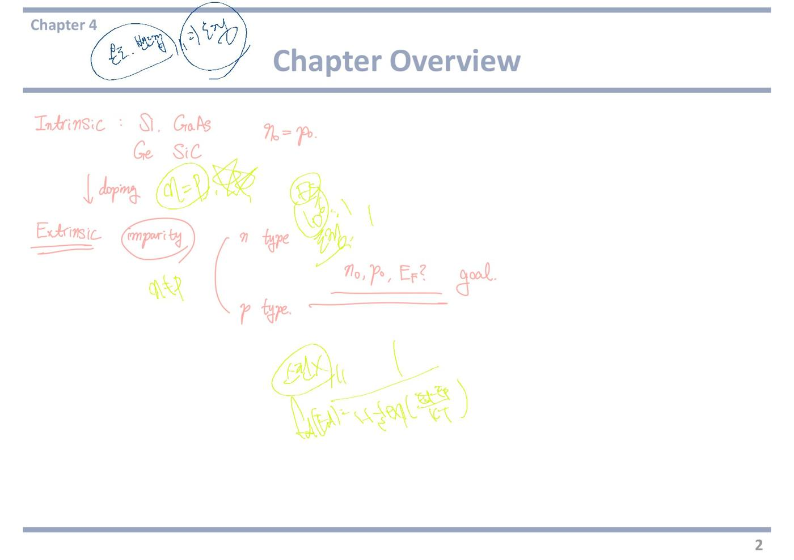
3쪽Chapter Overview — 전부 손글씨, 공식 지도
이 쪽도 전부 손글씨다. 앞 쪽이 "무엇을 구하나"였다면 이 쪽은 "어떤 식으로 구하나"다. 4장에서 쓰는 공식이 사실상 전부 여기 모여 있다. 왼쪽에 밴드 그림, 가운데에 n₀·p₀ 식, 오른쪽에 ni 이야기가 있다.
[필기] (밴드 그림) 위 상자 CB, 아래 상자 VB, 사이 간격 Eg, 위에 e⁻ 아래에 h
모든 그림의 출발점이다.
CB(conduction band, 전도대) = 전자가 자유롭게 돌아다닐 수 있는 위쪽 에너지 구역.
VB(valence band, 가전자대) = 전자가 원자에 묶여 있는 아래쪽 구역.
Eg(bandgap, 밴드갭) = 그 사이의 빈 층. 전자가 있을 수 없는 금지 구역이다. 계단 두 칸 사이에 발 디딜 데가 없는 것과 같다.
전자가 Eg 만큼의 에너지를 얻어 위로 올라가면 CB에 전자 하나 + VB에 정공 하나가 동시에 생긴다.
[필기] n₀ = (Nc) exp(−(Ec−EF)/kT) ← Nc 에 동그라미
4장에서 가장 많이 쓰는 식이다. 기호부터 푼다.
Ec = 전도대의 바닥 높이, EF = 페르미 준위, k = 볼츠만 상수, T = 절대온도. kT 는 그 온도에서 입자가 가진 열에너지의 크기이고 상온에서 0.0259 eV 다.
식이 하는 말은 한 문장이다. EF 가 Ec 에 가까울수록 전자가 지수적으로 많아진다.
왜 지수인가. 열로 Ec−EF 만큼의 언덕을 넘어야 하는데, 그 확률이 exp(−언덕/kT) 이기 때문이다. 언덕이 kT 만큼 높아질 때마다 개수가 e배(약 2.7배)씩 줄어든다.
[필기] p₀ = (Nv) exp(−(EF−Ev)/kT) ← Nv 에 동그라미
정공 쪽도 모양이 똑같다. Ev 는 가전자대의 천장 높이다.
이번에는 EF 가 Ev 에 가까울수록 정공이 많아진다. 위아래가 뒤집힌 것뿐이다.
두 식을 나란히 놓으면 EF 가 위로 가면 전자가 늘고, 아래로 가면 정공이 는다는 하나의 그림이 된다. 수면이 올라가면 위쪽이 잠기고 아래쪽 빈칸이 줄어드는 것과 같다.
[필기] T-dep, m* 연관 / effective state / probability
식의 각 부분에 이름표를 달아 두신 것이다.
동그라미 친 Nc, Nv 에는 effective state, 즉 유효 상태밀도라고 적으셨다. 전자가 앉을 수 있는 자리의 개수다.
T-dep = temperature dependent, 온도에 따라 달라진다는 뜻이다. m* 연관 = 유효질량과 얽혀 있다는 뜻이다. Nc, Nv 는 T3/2 로 커진다.
exp 부분에는 probability 라고 적으셨다. 그 자리가 채워질 확률이다.
정리하면 개수 = 자리 수 × 채워질 확률이다. 극장 좌석 수에 표가 팔릴 확률을 곱해 관객 수를 구하는 것과 같다.
[필기] Nc, Nv 300 K = 10¹⁹
숫자를 하나 못박아 주신 것이다. 상온(300 K)에서 Nc 와 Nv 는 대략 10¹⁹ cm⁻³ 이다.
실리콘의 정확한 값은 Nc = 2.8×10¹⁹, Nv = 1.04×10¹⁹ 인데, 자릿수만 기억하면 계산 결과가 말이 되는지 바로 확인할 수 있다.
1 cm³ 안에 앉을 자리가 10¹⁹ 개 있다는 뜻이다.
[필기] n₀p₀ = ni² = NcNv exp(−Eg/kT)
앞의 두 식을 곱한 결과다. 곱하면 EF 가 통째로 사라진다. 지수끼리 더해지면서 −(Ec−EF) + −(EF−Ev) = −(Ec−Ev) = −Eg 가 되기 때문이다.
이것이 질량작용의 법칙이다. 온도와 재료만 정해지면 n₀ 와 p₀ 의 곱은 도핑을 어떻게 하든 항상 같다.
그래서 n형이라 전자가 많아지면 정공은 그만큼 줄어들 수밖에 없다. 시소를 떠올리면 된다.
[필기] ⇒ ni = √(NcNv) exp(−Eg/2kT)
위 식의 양변에 제곱근을 씌운 것이다. 제곱근을 씌우면 지수의 분모에 2가 붙어 2kT 가 된다. 이 2를 빠뜨리는 실수가 가장 흔하다.
ni(intrinsic carrier concentration, 진성 캐리어 농도) = 도핑을 하나도 안 했을 때의 전자(=정공) 농도다.
이 식에는 도핑이 전혀 안 들어간다. 재료(Eg, Nc, Nv)와 온도(T)만으로 정해지는 값이다.
[필기] ⇒ intrinsic carrier concentration
[필기] T, Eg 결정 ⇒ ni 결정. = 10¹⁰/cm³ at 300 K (밑줄)
직접 우리말로 정리해 주신 줄이다. 온도 T 와 밴드갭 Eg 가 정해지면 ni 도 따라서 정해진다.
그리고 상온 실리콘의 ni ≈ 10¹⁰ cm⁻³ 라고 밑줄까지 그으셨다. 교재의 정확한 값은 1.5×10¹⁰ cm⁻³ 다.
이 숫자는 시험에서 그냥 주어지는 경우가 많지만, 안 주어져도 자릿수는 알고 있어야 답이 말이 되는지 판단할 수 있다.
[필기] n₀ = n̶i̶ + Nd (ni 위에 10¹⁰, Nd 위에 10¹⁶, ni 아래에 "무시", ni 에 사선)
4장 계산에서 가장 자주 쓰는 근사가 왜 성립하는지를 숫자로 보여 주신 자리다.
도핑한 n형에서 전도대 전자는 두 군데서 온다. ① 열로 스스로 올라온 것(≈ ni = 10¹⁰) ② 도너가 내놓은 것(≈ Nd = 10¹⁶).
둘의 크기 차이가 백만 배다. 그래서 ni 를 사선으로 긋고 무시라고 적으셨다.
바다에 물 한 컵 붓기와 같다. 컵 물은 분명히 있지만 바닷물 높이를 재는 데는 아무 영향이 없다.
[필기] n₀ ≃ Nd (complete ionization)
그래서 남는 결론이다. n형에서 전자 농도는 도너 농도와 같다고 본다.
complete ionization(완전 이온화) = 넣어 준 도너 원자가 하나도 빠짐없이 전자를 전도대로 내보낸 상태다.
상온에서는 이 가정이 거의 정확하다. 뒤의 17쪽에서 아직 안 내놓은 비율이 0.41 % 밖에 안 된다는 것을 계산으로 확인한다.
p형이면 같은 논리로 p₀ ≃ Na 다.
[필기] (오른쪽 아래 그림) CB 실선 바로 아래 점선, 그 사이 0.03 ~ 0.05 eV, 아래에 VB 실선
왜 완전 이온화가 되는지를 그림으로 보여 주신 것이다.
도너가 만든 자리(점선)는 전도대 바닥 바로 밑 0.03~0.05 eV 에 있다. 밴드갭 1.12 eV 에 비하면 거의 붙어 있는 셈이다.
상온의 열에너지 kT = 0.0259 eV 와 비슷한 크기다. 그래서 열만으로도 전자가 쉽게 튀어 올라간다.
1 m 담을 넘는 것과 3 cm 턱을 넘는 것의 차이라고 보면 된다.
★ 시험 포인트 — 이 쪽 하나에 시험에 나오는 식이 전부 있고, 교수님이 Nc·Nv 에 동그라미, 10¹⁰/cm³ at 300 K 에 밑줄, ni 에 사선 + "무시"를 표시하셨다. 반드시 챙길 다섯 가지다.
① n₀ = Nc·exp[−(Ec−EF)/kT], p₀ = Nv·exp[−(EF−Ev)/kT]
② n₀p₀ = ni² = NcNv·exp(−Eg/kT) — EF 가 사라진다는 것이 핵심
③ ni = √(NcNv)·exp(−Eg/2kT) — 분모의 2 를 빠뜨리지 말 것
④ 상온 숫자 — kT = 0.0259 eV, ni(Si) ≈ 1.5×10¹⁰ cm⁻³, Nc·Nv ≈ 10¹⁹ cm⁻³, 이온화 에너지 0.03~0.05 eV
⑤ n₀ ≈ Nd(n형), p₀ ≈ Na(p형) 로 놓고 시작한 뒤 소수 캐리어는 p₀ = ni²/n₀ 로 구하는 순서. 중간고사 4번이 매년 이 순서를 그대로 묻는다.
강의 올해 영상에서는 Chapter Overview 슬라이드가 한 장만 나왔고, 교수님은 그 빈 슬라이드에 4장 지도를 새로 그리며 한국어로 설명하셨다(영상1 00:00~06:20). 그 판서와 육성은 2쪽에 모아 두었다. 이 3쪽의 공식 지도는 자료(PDF)에 남아 있는 필기이고, 같은 식들은 영상에서 7~9쪽·15쪽·17~18쪽을 넘기며 하나씩 유도된다.
오프라인 리뷰 수업에서 (실제 강의 · 한국어)
리뷰 수업 리뷰① 전체(00:00 ~ 12:12)와 리뷰② 00:00 ~ 01:47, 그리고 리뷰③ 05:56 ~ 09:50 중 n₀ = ni + Nd 부분이 이 쪽 필기를 설명한 대목이다. 녹음은 수업 도중부터 시작한다 — 첫 줄 n₀·p₀ 식을 세운 대목은 녹음에 없고, "에너지에 따라 방 개수가 다르다"에서 시작한다.
자료에 없음 리뷰① 00:00 아파트 비유로 본 Nc·Nv — "에너지에 따라 방 개수가 다 달라져. 아파트로 따지면 1층에 방 개수가 2개, 2층에 4개, 3층에 5개, 이런 식으로 층마다 집의 개수가 다른 아파트를 가지고 있는데, Nc 랑 Nv 가 의미하는 건 뭐예요? Ec 에 이 모든 방을 갖다 놨다고 쳤을 때 방이 몇 개냐를 나타내는 게 Nc 고, 전체 방을 Ev 로 갖다 놓으면 방이 몇 개냐, 이게 Nv 입니다. 그렇기 때문에 Nc 랑 Nv 를 effective DOS 라고 부르는 거."
층마다 다른 방 수 = 상태밀도 g(E), 모든 방을 1층(밴드 끝)으로 끌어내려 센 개수 = 유효 상태밀도. 필기 「effective State」의 뜻이 이것이다.
리뷰 리뷰① 01:04 "300 K, 룸 템퍼러처에서 대충 얼마 정도 될까요? Nc 랑 Nv. 이 오더도 여러분들 기억해 두면 좋아." … "10의 19 정도입니다." … "단위 뭘까요?" — "cm⁻³." — "그렇지. … 단위 부피당 몇 개, 이렇게 되니까."
자료에 없음 리뷰① 01:22 숫자를 외우라는 이유 — 연봉 비유 — "제가 계속 이 숫자를 기억하라고 하는 게, 여러분들 감을 잃어요. … 우리나라 직장인들 평균 연봉을 알고 있어야 여러분들이 오퍼를 받았을 때 내 연봉이 높은가, 딜을 칠까 말까 이런 걸 알게 되지. 평균을 모르면 회사 주장대로 그냥 받을 수 있는 거잖아요. 그런 감을 알기 위해서 밴드갭 실리콘이 1.1 이라는 걸 알아야 뭐가 크다 작다 다 알잖아요."
자료에 없음 리뷰① 03:05 10¹⁹ 이 주는 느낌 — "내가 도핑을 10의 19승 이상으로 하면
방이 꽉 차겠네, 이런 느낌 들잖아. 그래서 10의 19승 이상으로 도핑을 하게 되면
디제너릿(degenerate), 반도체가 금속적으로 동작한다." … "정확한 숫자는 1.몇 곱하기, 2.몇 곱하기 — 컨덕션 밴드랑 밸런스는 좀 다른데 어쨌든 10의 19승이다, 이거만 알면 됩니다."
도핑 농도가 N
c 에 다가가면 E
F 가 밴드 안으로 들어간다 —
16쪽 축퇴 반도체의 기준이 이 숫자다.
리뷰 리뷰① 03:38 "자, 그래서 이제 n₀, p₀ 여러분들이 외워야 되는 수식, 1번 2번 했고요. 3번은 뭡니까? n₀ p₀ 두 개를 곱하는데 … 이거는 ni 제곱입니다." … "첫 번째는 n₀p₀ = ni² 이라는 Mass Action Law가 나오고요. 하나의 농도를 알면 다른 한 개의 농도를 알 수 있다."
★ 시험 포인트 리뷰① 05:37 ~ 06:14 — "Mass Action Law 도 중요하지만 두 번째 이게 항상 중요하죠. … 밴드갭이 낮아지거나 온도가 올라가면 ni 가 올라간다. 근데 그냥 올라가는 게 아니라 익스포넨셜, 기하급수적으로 올라간다. 이게 너무 중요합니다. 그래서 이 챕터에서 가장 중요한 수식 하나만 뽑아라 라고 한다면 저는 사실 이걸 뽑을 것 같아요."
→ ni = √(NcNv) · exp(−Eg/2kT). 4장 최중요 식으로 교수님이 직접 지목했다. 서술형에서 "온도가 오르면/밴드갭이 작으면 ni 가 어떻게 되나"는 "지수적으로 증가"까지 써야 만점이다.
리뷰 리뷰① 06:44 "밸런스 밴드 꽉 차 있고 컨덕션 밴드 항상 비워져 있었어요. T 가 0 K 일 때 컨덕션 밴드의 일렉트론 개수는 0 개였고 밸런스 밴드의 홀 개수는 0 개였죠. 이런 상황에서 온도가 가해지면 전자가 점프해서 올라가죠. 그렇게 만들어지는 컨덕션 밴드 일렉트론의 개수를 ni 로 불렀고, 만들어진 홀의 개수도 ni 로 불렀죠."
★ 외울 숫자 리뷰① 07:21 — "T 가 300 K 일 때 밴드갭이 1.1 eV 인 실리콘의 경우 인트린직 캐리어 컨센트레이션이 얼마가 된다? — 10의 10승. 10의 10승. 이건 또 감을 위해서 여러분들이 몇 년이 지나도 알고 있어야 되는." 필기의 밑줄 「10¹⁰/cm³ at 300 K」가 이것이다.
자료에 없음 리뷰① 08:25 익스포넨셜의 위력 — Ge · Si · GaAs 비교 — "학생들이 이 익스포넨셜의 위대함에 대해서는 간과하는 측면이 있다." … "저마늄은 밴드갭이 0.7 로 외우라 했어요. … 밴드갭이 몇 % 줄었어? 대충 30% 줄었죠. 30% 줄었으면 ni 는 얼마 늘어날 것 같아요? 30% 늘어날 것 같아요? … 한 두 배 정도? 그런 생각을 하게 됩니다." 그런데 실제로는 자릿수가 바뀐다. "그만큼 익스포넨셜의 효과가 있어요."
"갈륨아세나이드는 1.42 eV 정도. … 실리콘보다 30% 늘었죠. 그럼 ni 가 어떻게 돼요? 줄어들지. 얼마나? — 10의 6승입니다. 10,000 배 줄어요."
※ 저마늄의 ni 를 말한 대목(09:53)은 "오더가 10의 10승"으로 적혀 있어 인식이 흐리다. 교재값은 Ge 2.4×10¹³ cm⁻³(실리콘의 약 2,000 배), GaAs 1.8×10⁶ cm⁻³ 이다. 직접 들어볼 것.
자료에 없음 리뷰① 10:12 저마늄이 밀려난 이유 — "저마늄 같은 경우에는 내가 아무 짓도 안 해도, 그냥 룸 템퍼러처에만 갖다 놔도 위로 올라가는 게 훨씬 많다는 거예요. … 이제 과거에 왜 저마늄에서 실리콘으로 갈아탔는지 조금 이해가 되죠. 내가 원할 때만 전기가 흘러야 해요, 반도체는. 그런데 저마늄은 쉴 때도 전기가 흐른다." 반대로 GaAs 는 "상온에서 전기가 훨씬 더 안 흐르겠네. 그리고 전기가 흐르게 만들려면 더 많은 에너지가 필요하다." 이어서 "실리콘 카바이드 — 실리콘 밴드갭의 몇 배라 그랬어요? — 3배. 그럼 1.1 이니까 3.3. 밴드갭이 3배 늘었어. 그러면 익스포넨셜에서 3배가 늘었어요." (리뷰① 녹음이 여기서 끝난다.)
자료에 없음 리뷰② 00:00 왜 전력 반도체는 넓은 밴드갭으로 가나 — ni 하나로 설명 — "실리콘 같은 경우에는 룸 템퍼러처에서 10의 10승만큼 캐리어가 있습니다. 그리고 이 캐리어는 온도를 올림에 따라서 기하급수적으로 올라갈 거를 우리가 다 알고 있습니다. … 만약에 자동차에 쓰이는 반도체나 — 자동차의 온도는 우리가 일반 집에 쓰는 컴퓨터보다 더 높아지겠죠. 그러면 실리콘의 ni 가 기하급수적으로 늘어날 걸 예상할 수가 있습니다. 그렇게 될 경우에 우리가 원하지 않아도 전기가 흐를 가능성이 있다." … "실리콘 카바이드 같은 경우에는 처음에 캐리어가 거의 없었어요. 엄청 힘을 들여서 캐리어를 만들어내야 돼요. … 그런데 고온이 올라가더라도 밑에서 올라가는 게 없죠. 그러니까 안정적으로 동작을 할 수 있어요."
★ 서술형 대비 리뷰② 01:30 — "고 에너지갭 반도체를 전력 반도체에 쓰는 이유는 크게 두 가지. 1번이 ni(가 낮은 것), 2번이 브레이크다운 전압이 높은 것. 그거(2번)는 PN 접합에서 얘기를 하면 되는 거." → 지금 단계에서 쓸 수 있는 답은 1번이다: "Eg 가 크면 ni ∝ exp(−Eg/2kT) 가 매우 작아, 고온에서도 원치 않는 진성 캐리어가 생기지 않아 안정적으로 동작한다."
리뷰 리뷰③ 07:43 "실리콘의 덴시티는, 1 cm, 1 cm, 1 cm — 제가 반복해서 이 숫자를 얘기를 하고 있습니다 — 이렇게 실리콘을 잘랐을 때 실리콘의 덴시티 얼마예요? — 10의 22." … "이 아세닉은 우리가 넣어줄 때 실리콘과 몇 대 일로 넣어주냐? 여러분들 100만 대 1을 기억하시면 됩니다. … 그렇다면 아세닉을 10의 16만큼 넣어주는 거 맞지?"
리뷰 리뷰③ 08:46 "원래 갖고 있던 컨덕션 밴드 일렉트론 개수는 몇 개였어요? — 10의 10. 원래는 ni 인 10의 10만 갖고 있었어요. 밸런스 밴드 홀도 10의 10만. 그래서 N 과 P 가 같은 진성 반도체였는데, 여기에 10의 16이 더해지니까 N 과 P 의 균형이 깨지는 거죠. … 100만 더하기 1은 100만. 그래서 이게 10의 16이 됩니다."
필기 「n₀ = ni + Nd, ni 무시」를 말로 한 것이다. 10¹⁰ 은 10¹⁶ 의 100만분의 1이라 더해도 티가 안 난다.
리뷰 리뷰③ 09:19 "그래서 홀의 개수는 10의 10으로 유지가 되냐? 그건 아니고, 여기 있는 애들이 일부 내려와서 재결합하면서 줄어들어요. 그래서 P 의 개수는 10의 4승이 됩니다. … n₀p₀ = ni² 이었고 ni 가 10의 10이니까, n₀ 가 10의 16이 되면 p₀ 는 10의 4가 되는 거죠."
도핑하면 다수 캐리어만 느는 게 아니라 소수 캐리어는 줄어든다.
내 굿노트 필기
내 굿노트 필기 교수님 필기(파랑·빨강) 위에 연두색으로 덧쓴 것이다.
• 오른쪽 위에 Nc exp(−(Ec−EF)/kT) · Nv exp(−(EF−Ev)/kT) — n₀p₀ = ni² 위에 두 식을 다시 적어, 곱하면 EF 가 지워지는 것을 확인했다.
• n₀ 식의 n₀ 위 연두 동그라미와 m* 비슷한 글자 — 교수님 필기 「m* 연관」을 되짚은 메모로 보인다.
• 10¹⁹ 에 겹동그라미 + ‖ — Nc·Nv 의 자릿수(리뷰① 01:59 "10의 19 정도").
• at 300 K 에 큰 겹동그라미 + ‖ — 10¹⁰ 은 300 K 에서만 맞는 숫자라는 표시. 온도가 바뀌면 ni 는 지수로 바뀐다(리뷰① 07:48).
내 필기만 진하게 표시한 쪽 이미지 보기
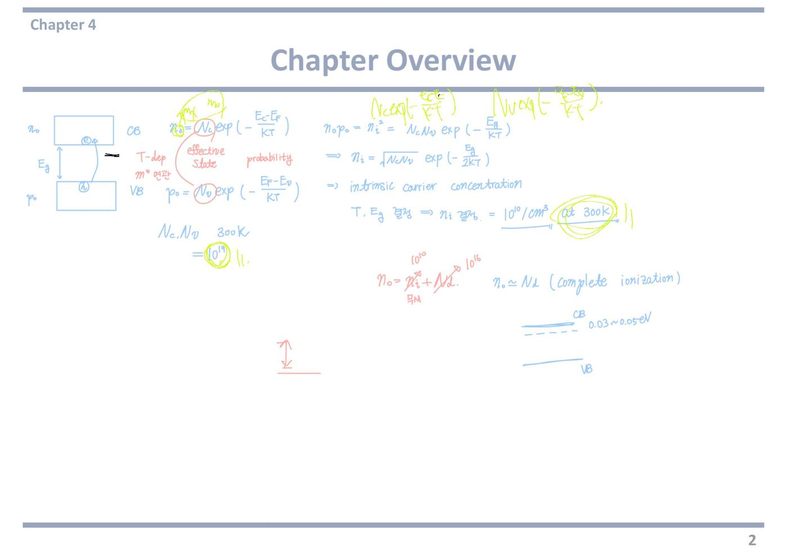
4쪽Contents — 4장 목차
4.1 Charge Carriers in Semiconductors [필기] n₀ p₀ 열적 평형 상태.
charge carrier(전하 운반자, 캐리어) = 전기를 실어 나르는 알갱이. 반도체에서는 전자와 정공 둘뿐이다.
옆에 적으신 n₀ p₀ 열적 평형 상태가 이 절의 전부다. 아무것도 안 건드린 상태에서 캐리어가 몇 개인지 세는 절이다.
아래 첨자 0 이 붙은 이유가 여기 있다. 0 = 평형 상태의 값 이라는 표시다.
4.2 Dopant Atoms and Energy Levels
dopant atom(도펀트 원자) = 일부러 섞어 넣는 다른 원소.
energy level(에너지 준위) = 그 원자가 밴드갭 안에 새로 만드는 계단 한 칸이다.
5족을 넣으면 전도대 바로 아래에, 3족을 넣으면 가전자대 바로 위에 칸이 하나 생긴다. 그 칸 덕분에 전자나 정공이 싸게 만들어진다.
4.3 Extrinsic Semiconductor
도핑한 반도체에서 n₀ 와 p₀ 가 어떻게 달라지는지, 그리고 EF 가 어디로 움직이는지를 다룬다.
여기서 n₀p₀ = ni² 와 축퇴(degenerate) 반도체가 나온다. 둘 다 시험 단골이다.
4.4 Statistics of Donors and Acceptors
statistics(통계) = 도너·억셉터 자리가 채워질 확률을 세는 것.
넣어 준 도너 중 몇 %가 실제로 전자를 내놓았는지를 계산한다. 결론은 상온에서 거의 100 %(완전 이온화)다.
반대로 온도를 0 K 까지 내리면 아무도 안 내놓는다. 이것이 freeze-out(동결) 이다.
4.5 Charge Neutrality
charge neutrality(전하 중성) = 반도체 덩어리 전체의 알짜 전하가 0 이라는 조건이다.
당연한 말 같지만 이것이 n₀ 와 p₀ 를 실제로 풀어 내는 유일한 방정식이다. 미지수가 둘인데 n₀p₀ = ni² 하나만으로는 못 풀기 때문이다.
도너와 억셉터를 동시에 넣은 보상(compensated) 반도체도 이 절에서 나온다.
4.6 Position of Fermi Energy Level (4.6 에 크게 동그라미)
교수님이 4.6 만 따로 크게 동그라미를 치셨다. 4장의 결승선이라는 표시다.
도핑 농도를 주면 EF 가 밴드갭 안 어디에 놓이는지를 계산한다. 핵심 식은 EF − EFi = kT·ln(n₀/ni) 하나다.
온도가 오르면 EF 가 어디로 움직이는지도 여기서 다룬다.
★ 시험 포인트 — 목차 중에서 4.6 Position 에만 붉은 동그라미가 있다.
중간고사 4번은 거의 항상 "도핑 농도 → n₀, p₀ → EF 위치" 로 이어지는 한 줄기 문제다. 앞의 4.1~4.5 는 그 계산에 쓸 재료를 모으는 과정이고, 배점이 몰리는 마지막 소문항이 4.6 이다.
거꾸로 EF 위치를 주고 필요한 도핑 농도를 구하라는 형태로도 나온다. 식 하나를 양방향으로 쓸 줄 알아야 한다.
강의 중 판서
판서 영상1 06:23 4.1 Charge Carriers 에 동그라미를 치고, 화살표 두 개로 n₀, p₀ 를 상자에 담아 이었다. 옆에 thermal equilibrium 이라고 영어로 적었다. 작년 필기의 "열적 평형 상태"와 같은 말이다.
thermal equilibrium(열평형) = 전압도 빛도 안 주고 온도만 일정하게 둔 상태. 아래 첨자 0 이 바로 이 상태라는 표시다.
판서 영상1 07:00 4.2~4.6 제목의 핵심 낱말마다 붉은 밑줄을 그었다. Dopant, Energy Levels, Extrinsic Semiconductor, Donors, Acceptors, Charge Neutrality, 그리고 Position 과 Fermi Energy Level 에는 물결 밑줄이다.
작년 필기는 4.6 Position 에만 동그라미가 있었다. 올해는 목차를 읽으며 낱말마다 줄을 그었고, 4.6 만 물결로 굵게 그어 차이를 뒀다.
판서 영상1 07:38 오른쪽 빈 곳에 밴드 그림을 새로 그렸다. 위 칸에 빗금을 치고 CB, 아래 칸에 빗금을 치고 VB. 그 사이 한가운데 EF 를 적고 동그라미를 겹겹이 쳤다. EF 바로 위 칸에는 ↑↑↑↑, 바로 아래 칸에는 ↓↓↓ 를 그렸다.
뜻은 이렇다. 진성 반도체의 EF 는 밴드갭 한가운데쯤 있다. n형으로 도핑하면 위(↑)로, p형으로 도핑하면 아래(↓)로 움직인다. 4.6 에서 계산할 결론을 목차 쪽에서 그림으로 먼저 보여 준 것이다.
강의에서 한 말
강의 영상1 06:32 “n0, 0을 말하는 것은 썰멀 이퀼리브리엄이에요. 그래서 이제 열평형 상태에서의 농도” — 아래 첨자 0 의 뜻을 짚었다. 0 이 붙으면 열평형 값이다.
강의 영상1 06:50 “우리는 밸런스 밴드의 일렉트론에 대해서 관심이 없습니다. 컨덕션 밴드의 홀에 대해서 관심이 없어요. 우리가 관심 있는 것은 컨덕션 밴드의 일렉트론, 밸런스 밴드의 홀입니다” — 셀 것을 반대편에서 한 번 더 못 박았다. 가전자대의 전자는 너무 많아 꼼짝 못 하니 세지 않는다. 전도대에는 전자가 거의 없으니 정공을 셀 일이 없다.
강의 영상1 07:18 “도너랑 억셉터, 이런 것도 이제 다 도핑이랑 관련된 개념입니다” — donor(도너) = 전자를 내주는 불순물(5족), acceptor(억셉터) = 전자를 받아 가는 불순물(3족). 4.2~4.4 가 전부 도핑 이야기라는 뜻이다.
강의 영상1 07:23 “마지막으로 이제 가장 중요한 게 그 페르미 에너지 레벨의 위치 … 이것이 사실 반도체 소자와 직접적으로 연결이 됩니다” — 4.6 을 4장에서 가장 중요한 절로 꼽았다. 소자 동작과 곧바로 이어지기 때문이다.
강의 영상1 07:38 “인트린직 세미컨덕터는 페르미 레벨이 … 중간쯤에 있거든요. … p 타입으로 도핑을 하면 아래쪽으로 내려오고요, n 타입 도핑하면 위로 올라옵니다” — 판서한 밴드 그림을 말로 설명한 대목이다. 진성은 가운데, n형은 위, p형은 아래.
강의 영상1 08:09 “이 다를 때 두 개를 붙여 놓으면 어떤 일이 발생하는가, 그게 바로 이제 pn 정션의 원리고 … 너무나 중요한 워킹 메커니즘이 되는 거죠” — n형과 p형은 EF 높이가 다르다. 둘을 붙였을 때 생기는 일이 pn 접합이다. working mechanism = 동작 원리.
자료에 없음 영상1 06:50 “가전자대 전자, 전도대 정공은 관심 없다”는 말은 슬라이드에 없다. 캐리어를 셀 때 헷갈리기 쉬운 반대 조합을 미리 지워 준 것이다.
자료에 없음 영상1 07:38 EF 가 n형이면 올라가고 p형이면 내려간다는 결론, 그리고 EF 가 다른 두 물질을 붙인 것이 pn 접합이라는 연결은 목차 쪽 어디에도 없다. 26~27쪽 결론을 여기서 미리 보여 줬다.
★ 시험 포인트 (강의) — “가장 중요한 게 페르미 에너지 레벨의 위치”(07:23, 1번). 4.6 이 4장의 핵심이라고 말로 못 박았다. 또 세는 대상은 전도대 전자와 가전자대 정공이라는 말을 06:39, 06:50~06:54, 06:57 에 걸쳐 세 번 되풀이했다.
5쪽4.1 평형 분포 — 캐리어는 둘뿐이다
Current: the flow rate of charges [필기] metal : free e⁻
전류는 전하가 흐르는 빠르기다. 1초에 얼마만큼의 전하가 지나가는가.
옆에 금속은 자유전자라고 적으셨다. 금속에서 전류를 나르는 것은 자유전자 하나뿐이다. 원자에서 이미 떨어져 나와 결정 안을 마음대로 돌아다니는 전자다.
반도체는 여기서 갈라진다. 나르는 것이 둘이다.
Two types of charge carriers in a semiconductor: electron & hole
반도체의 캐리어는 전자와 정공 둘이다. 교수님이 둘 다 붉은 밑줄을 그으셨다.
hole(정공) = 전자가 빠져나가고 남은 빈자리다. 진짜 알갱이가 아니라 빈칸인데, 옆 전자가 그리로 옮겨 오면 빈칸이 반대쪽으로 옮겨 간 것처럼 보인다.
그래서 양전하를 띤 알갱이 하나가 움직이는 것처럼 취급한다. 극장 맨 앞줄 빈 좌석으로 사람들이 한 칸씩 당겨 앉으면 빈자리가 뒤로 밀려가는 것과 같다.
Total current in a semiconductor: electrons in the conduction band and holes in the valence band
밑줄이 네 군데다. 어느 밴드의 무엇인지를 정확히 짝지으라는 표시다.
전자는 전도대(CB)에 있는 것만 전류에 기여한다. 가전자대에 꽉 차 있는 전자들은 옮겨 갈 빈자리가 없어서 못 움직인다.
정공은 가전자대(VB)에 있는 것만 센다.
총 전류 = 전도대 전자가 나르는 몫 + 가전자대 정공이 나르는 몫이다.
→ We need to know how electrons in the conduction band and holes in the valence band are distributed at equilibrium condition
그래서 평형 상태에서 어떻게 분포하는지를 먼저 알아야 한다는 선언이다.
distribution(분포) = 어느 에너지 높이에 몇 개가 있는가. 총 개수만이 아니라 높이별로 흩어진 모양까지 봐야 한다.
이 쪽 이후 세 쪽이 전부 이 분포를 구하는 과정이다.
The distribution of electrons in the conduction band
n(E) = gc(E)·fF(E) [필기] 1 + exp((E−EF)/kT) — fF 쪽을 화살표로 가리킴
= density of states in the conduction band × the probability that a state is occupied by an electron
4장 전체의 뼈대가 되는 곱셈이다.
gc(E) (density of states, 상태밀도) = 에너지 E 근처에 앉을 수 있는 자리가 몇 개인가. 극장의 좌석 수다.
fF(E) (페르미-디랙 분포함수) = 그 자리가 실제로 채워질 확률. 좌석이 팔릴 확률이다. 교수님이 분모 1 + exp((E−EF)/kT) 를 직접 적어 두셨다.
자리 수 × 채워질 확률 = 실제 전자 수. 이 곱을 전도대 전체에 걸쳐 더하면 n₀ 가 나온다.
The distribution of holes in the valence band
p(E) = gv(E)·[1 − fF(E)]
= density of states in the valence band × the probability that a state is not occupied by an electron
정공 쪽은 [1 − fF(E)] 가 들어간다. 이 대괄호 하나가 전부다.
fF 가 "채워질 확률"이니 1 − fF 는 비어 있을 확률이다. 정공은 빈자리이므로 비어 있을 확률을 곱해야 맞다.
확률은 다 더하면 1 이다. 차 있거나 비어 있거나 둘 중 하나이기 때문이다.
전자 식과 정공 식이 이렇게 대칭이라 앞으로 나오는 모든 유도가 짝을 이룬다. 하나만 제대로 이해하면 나머지는 뒤집기만 하면 된다.
강의 중 판서
판서 영상1 08:46 "Current: the flow rate of charges" 옆에 i = dq/dt 를 적고 i 에 동그라미, dq 에 화살표를 그었다. 작년 필기에는 없던 식이다.
i = 전류, dq = 아주 짧은 시간에 지나간 전하량, dt = 그 짧은 시간. 전류는 1초당 지나간 전하량이라는 정의를 식으로 옮긴 것이다.
판서 영상1 09:06 오른쪽 위에 metal → free electron. 을 적었다. 작년 필기(metal : free e)와 내용이 같다. 금속은 캐리어가 자유전자 하나뿐이라는 대비용이다.
electron 과 hole 위에는 작은 갈고리 표시를 하나씩 달았다. 둘을 따로 세라는 표시다.
판서 영상1 09:26 "electrons in the conduction band" 에 파란 밑줄, "holes in the valence band" 에 붉은 밑줄을 그었다. 다음 줄의 "how electrons in the conduction band", "holes in the valence band are distributed at equilibrium condition" 에도 밑줄을 쳤다.
"어느 밴드의 무엇"이 한 덩어리라는 강조다. 밴드 이름과 캐리어 이름을 떼어 외우면 안 된다.
판서 영상1 09:50 n(E) 에 동그라미, gc(E) 와 fF(E) 에 각각 화살표를 내려 꽂고 물결 밑줄을 쳤다. 아래 설명의 "density of states in the conduction band" 와 "the probability that a state is occupied by an electron" 에도 따로따로 밑줄이다.
식의 두 조각과 영어 설명의 두 조각을 하나씩 짝지어 준 것이다. gc = 자리 수, fF = 찰 확률.
판서 영상1 10:30 p(E) 에 동그라미, gv(E)[1 − fF(E)] 에 물결 밑줄을 쳤다. 아래 "the probability that a state is not occupied by an electron" 옆에 = 〃 occupied by a hole. 이라고 적었다.
"전자가 안 찬 확률"을 "정공이 찬 확률"로 바꿔 읽으라는 뜻이다. 같은 말이지만 정공 입장에서 읽으면 전자 식과 모양이 똑같아진다.
강의에서 한 말
강의 영상1 08:51 “We need to know what kind of charge carriers we have in order to discuss the current.” — 전류를 말하려면 어떤 캐리어가 있는지부터 알아야 한다. 이 쪽의 출발점이다.
강의 영상1 09:06 “For metal, we have only one type of charge carrier, which is free electron. But for semiconductors, we have two types” — 금속은 캐리어가 자유전자 하나, 반도체는 전자와 정공 둘이다. 반도체만의 특징을 금속과 대비해 보여 줬다.
강의 영상1 09:26 “If we want to talk about the total current in semiconductors, we need to consider both electrons in the conduction band and holes in the valence band.” — 반도체 전체 전류를 따지려면 두 캐리어를 모두 더해야 한다.
강의 영상1 09:50 “The distribution of electrons in the conduction band can be calculated by multiplying the density of states function … and the probability function. In the previous chapter we learned how these functions are described.” — 분포 = 상태밀도 × 확률. 두 함수는 3장에서 이미 배웠다고 연결했다. 새 함수가 아니라 3장 도구를 조립하는 것이다.
강의 영상1 10:30 “The probability that the state is occupied by a hole, or the state is not occupied by an electron. So it's described as 1 minus f(E)” — 1 − f(E) 를 두 가지로 읽어 줬다. "전자가 없을 확률" = "정공이 있을 확률".
자료에 없음 영상1 08:46 슬라이드는 전류를 "flow rate of charges" 라고 말로만 적었다. 교수는 i = dq/dt 로 정의를 식으로 적어 줬다. 전하가 얼마나 빨리 지나가느냐가 전류다.
자료에 없음 영상1 10:13 상태밀도 함수와 페르미-디랙 분포함수는 3장에서 배운 것이라고 짚었다. 4장은 새 이론이 아니라 3장의 두 함수를 곱해 쓰는 장이다. 3장 복습이 필요하다는 신호다.
이 쪽 한 줄 요약 — 캐리어 개수 = 자리 수(g) × 그 자리가 원하는 상태일 확률(f 또는 1−f). 전도대에서는 채워질 확률, 가전자대에서는 비어 있을 확률을 쓴다. 4장의 모든 식이 이 한 줄에서 나온다.
내 굿노트 필기
내 굿노트 필기 연두색 괄호 두 개 — "Total current … electrons in the conduction band and holes in the valence band" 아래에 묶음 괄호를 그었다. 전류를 나르는 것은 이 둘뿐이라는 표시다.
내 필기만 진하게 표시한 쪽 이미지 보기
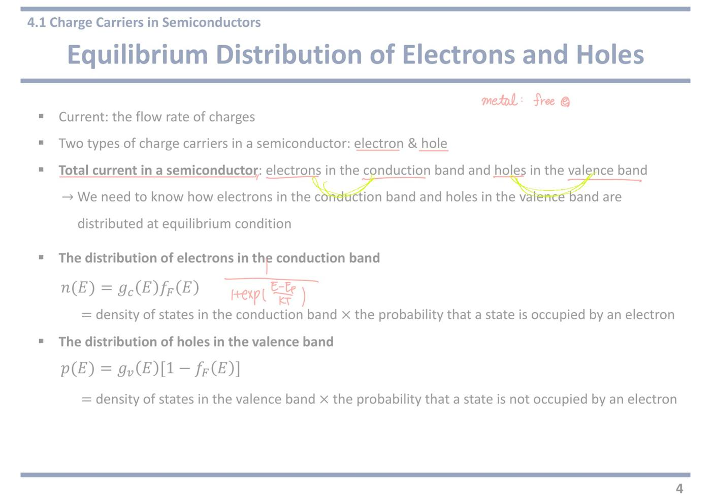
6쪽4.1 g(E) 와 f(E) 를 곱하면 무엇이 나오는가
왼쪽 위 그래프 — 세로축이 에너지 E, 가로축이 상태밀도 g(E) 다. Ec 위쪽으로 곡선이 뻗어 오르고, Ev 아래쪽으로도 곡선이 뻗어 내린다. 밴드 가장자리에서는 자리가 0 이고 멀어질수록 자리가 많아진다는 뜻이다. 교수님이 Ec 와 Ev 사이에 붉은 가로선을 긋고 EF0 라고 적으셨다. 도핑 안 한 상태의 페르미 준위 자리다.
gc(E) = [4π(2mn*)3/2/h³]·√(E − Ec) (valid for E ≥ Ec)
전도대의 자리 개수 공식이다.
mn*(전자의 유효질량) = 결정 안에서 전자가 실제로 보이는 무게. 진짜 전자 질량과 다르다. 결정이 붙잡는 힘까지 뭉뚱그려 무게 하나로 바꿔 놓은 값이다.
h = 플랑크 상수.
핵심은 √(E − Ec) 다. E 가 Ec 바로 위면 0 이고, 위로 올라갈수록 제곱근 모양으로 늘어난다. 전도대 바닥에는 앉을 자리가 거의 없다.
괄호의 조건 E ≥ Ec 도 그냥 넘기면 안 된다. 전도대 아래에는 자리가 아예 없다는 선언이다.
gv(E) = [4π(2mp*)3/2/h³]·√(Ev − E) (valid for E ≤ Ev)
가전자대 쪽은 제곱근 안이 Ev − E 로 뒤집혔다. 아래로 내려갈수록 자리가 많아진다는 뜻이다.
mp* 는 정공의 유효질량이다. 실리콘에서는 mp* 가 mn* 보다 크다. 이 차이가 뒤에서 EFi 를 밴드갭 정중앙에서 살짝 밀어 올린다.
조건 E ≤ Ev 역시 가전자대 위쪽에는 자리가 없다는 뜻이다. 그 사이(밴드갭)에 자리가 0 인 것이 반도체의 정의다.
fF(E) = 1 / [1 + exp((E − EF)/kT)]
페르미-디랙 분포함수다. 값을 세 군데만 넣어 보면 성격이 다 드러난다.
E = EF 이면 exp(0) = 1 이라 f = 1/2. 반반이다. 이것이 페르미 준위의 정의다.
E 가 EF 보다 훨씬 위면 exp 가 커져서 f ≈ 0. 거의 비어 있다.
E 가 EF 보다 훨씬 아래면 exp 가 0 에 가까워져 f ≈ 1. 거의 차 있다.
온도가 낮을수록 kT 가 작아 이 전환이 칼같이 급해지고, 온도가 높으면 완만해진다.
왼쪽 아래 그래프 (Probability) — 가로축이 에너지, 세로축이 확률(0~1)이다. 실선이 fF(E) 로 1.0 에서 시작해 EF 에서 0.5 를 지나 0 으로 떨어진다. 점선이 1 − fF(E) 로 정확히 반대 모양이다. 두 곡선은 EF 에서 만나고 그 높이가 1/2 이다. 교수님이 실선 쪽에 e(전자), 점선 쪽에 h(정공) 라고 붉게 적어 어느 곡선이 무엇을 세는지 표시하셨다.
오른쪽 큰 그림 — 왼쪽 두 그래프를 곱해 놓은 것이다. 세로축이 에너지, 가로축이 fF 값(0에서 1까지)이다. 빗금이 상태밀도, 점선-쇄선이 fF(E) 곡선이다.
위쪽 연한 파란 봉우리의 넓이가 곧 n₀(전자 농도), 아래쪽 회색 봉우리의 넓이가 p₀(정공 농도) 다. 교수님이 각각 CB, VB 라고 붉게 적으셨다.
봉우리가 밴드 가장자리 근처에만 뭉쳐 있는 이유가 중요하다. 아래로 가면 자리는 많은데 확률이 0 이고, 위로 가면 확률은 있는데 자리가 없다. 둘의 곱이 최대가 되는 곳이 밴드 가장자리 바로 근처다.
강의 중 판서
판서 영상1 11:23 왼쪽 위 그래프에서 세로축 E, Ec, Ev 에 동그라미를 쳤다. gc(E) 곡선을 큰 타원으로 묶고 CB, gv(E) 곡선을 묶고 VB 라고 적었다. 가로축 g(E) 옆에는 D.O.S function 을 적고 동그라미 쳤다.
Ec = 전도대의 맨 아래 높이, Ev = 가전자대의 맨 위 높이. D.O.S function(상태밀도 함수) = 에너지마다 자리가 몇 개인지 알려 주는 함수. 이 그래프가 "자리" 그래프라는 이름표를 붙인 것이다.
판서 영상1 13:26 밴드갭 한가운데에 EF 를 적고 동그라미, 왼쪽에서 화살표로 갭 안을 가리켰다. 옆에 T = 0K. EF 위쪽으로 ↑ 화살표, 아래쪽으로 ↓ 화살표를 긋고, 가전자대(VB) 영역은 붉은 빗금으로 가득 칠했다.
작년 필기의 "EF0" 가로선과 같은 자리지만 이번엔 왜 거기인지를 그렸다. 0K 에서 EF 아래는 전부 차고 위는 전부 빈다. 가전자대는 꽉 찼고(빗금) 전도대는 비었다. 그러니 경계선 EF 는 둘 사이, 곧 밴드갭 안에 있어야 한다.
판서 영상1 13:00 왼쪽 아래 Probability 에 겹동그라미, fF(E) 와 1 − fF(E) 이름표에 각각 동그라미를 쳤다. 가로축 끝 E 에 동그라미를 치고 그 위에 휘어 도는 화살표를 그렸다. 가로축 EF 에도 겹동그라미다.
확률 그래프는 에너지가 가로축이고, 위 상태밀도 그래프는 에너지가 세로축이다. 휘어 도는 화살표는 "확률 그래프를 90° 돌려서 위 그래프에 겹쳐라"는 뜻이다. 오른쪽 큰 그림이 바로 그렇게 돌려 겹친 결과다.
판서 영상1 15:10 오른쪽 큰 그림에서 점선 곡선 옆에 fF(E) 를 크게 적고 곡선을 붉게 덧그렸다. gc(E) 이름표와 Ec, Ev 에 동그라미. 파란 봉우리를 붉은 빗금으로 칠하고, "gc(E)fF(E) = n(E)" 와 "Area = n₀" 에 밑줄, 그 아래 in the CB 를 적었다.
봉우리가 곧 "자리 × 확률"을 한 높이씩 곱해 찍은 점들의 모양이라는 것, 그 넓이가 전도대 전자 수라는 것을 짚었다.
판서 영상1 16:25 가운데 아래에 1 − fF(E) 를 적고 동그라미, 아래로 휘는 곡선을 덧그렸다. gv(E) 에 동그라미. 회색 봉우리 옆 "gv(E)(1 − fF(E)) = p(E)", "Area = p₀" 에 밑줄을 긋고 in the VB 를 적었다.
정공 쪽은 fF 대신 1 − fF 곡선을 가전자대 자리와 곱한다는 것을 전자 쪽과 똑같은 방식으로 보여 줬다.
강의에서 한 말
강의 영상1 12:37 “To calculate the electron and hole densities, we need to draw the probability function on top of this density of states function.” — 두 함수를 곱하려면 먼저 한 그림 위에 겹쳐 그려야 한다.
강의 영상1 13:00 “The y-axis of this top graph is the energy, but … the x-axis of this probability function is the energy. So if you want to overlap those two functions, we need to rotate this probability function and redraw it” — 두 그래프는 에너지 축 방향이 다르다. 그래서 확률 그래프를 돌려서 다시 그린다.
강의 영상1 13:33 “We do not know the exact position of this Fermi energy, but by the definition of the Fermi energy we can suppose that the Fermi energy is located somewhere in between the conduction band edge and the valence band edge.” — 겹치려면 EF 가 어디인지 알아야 한다. 정확한 값은 몰라도 정의만으로 대략 위치를 잡을 수 있다고 했다.
강의 영상1 13:51 “At absolute zero temperature, all the quantum states below the Fermi energy are completely full … above the Fermi energy are completely empty. … This valence band is fully filled by electrons and this conduction band is completely empty. So … the Fermi energy should be located within the band gap.” — 스스로 묻고 답한 대목이다. 0K 에서 꽉 찬 가전자대와 텅 빈 전도대 사이 경계가 EF 이니, EF 는 밴드갭 안이다.
강의 영상1 15:46 “You multiply this part and this part together here, and you multiply this and this to obtain this point … then you can get this kind of shape.” — 에너지 높이마다 gc 값과 fF 값을 한 점씩 곱해 찍으면 봉우리 모양이 나온다. 그림을 손으로 짚어 가며 설명한 대목이다.
강의 영상1 16:12 “This graph shows you how electrons are distributed in the conduction band, and the area under this graph tells you the total number of electrons in the conduction band.” — 봉우리의 모양은 분포, 넓이는 총 개수다.
강의 영상1 16:57 “gv(E) times 1 minus f(E) tells you how holes are distributed in the valence band. And the area under this graph tells you the total hole concentration” — 정공도 같은 방식이다. 곱의 모양이 분포, 넓이가 p₀.
자료에 없음 영상1 13:00 두 그래프를 돌려서 겹치는 요령은 슬라이드에 설명이 없다. 슬라이드는 가운데 큰 화살표 하나로 결과만 보여 준다. 오른쪽 그림에서 가로축이 fF(E) = 0 ~ 1 로 바뀐 이유가 이 회전이다.
자료에 없음 영상1 13:26 EF 가 밴드갭 안에 있어야 하는 이유를 0K 정의에서 끌어내는 추론은 자료에 없다. 계산 없이 정의 하나로 위치를 잡는 방법이다. "EF 는 왜 갭 안에 있나"라는 서술형 질문에 그대로 쓸 수 있다.
이 쪽 한 줄 요약 — g(E) 는 자리, f(E) 는 확률, 둘을 곱해 에너지 방향으로 전부 더한 넓이가 캐리어 농도다. 그 적분을 실제로 해 보는 것이 다음 두 쪽이다.
내 굿노트 필기
내 굿노트 필기 오른쪽 그림의 gc(E) 곡선 위에 남색으로 곡선 하나를 따라 그었다. gc(E) 와 f(E) 를 곱하면 그 아래 n(E) 봉우리가 생긴다는 것을 손으로 확인한 흔적이다.
내 필기만 진하게 표시한 쪽 이미지 보기
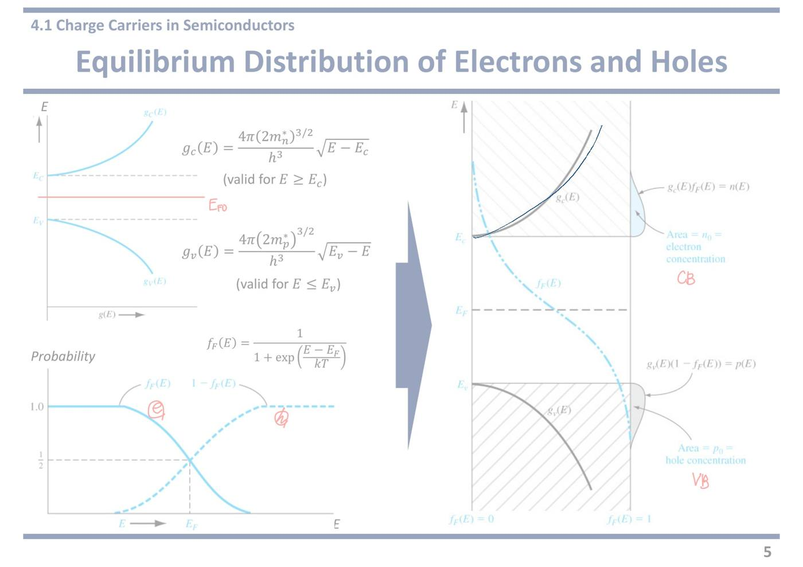
7쪽4.1 n₀ 유도 — 적분해서 Nc 를 뽑아낸다
(n₀ 에 동그라미) n₀: thermal equilibrium concentration of electrons in the conduction band
교수님이 n₀ 에 동그라미를 치셨다. 이 쪽의 주인공이다.
thermal equilibrium concentration(열평형 농도) = 아무것도 안 건드린 상태에서 1 cm³ 당 전도대 전자 개수다.
단위는 cm⁻³ 다. "세제곱센티미터당 몇 개"라고 읽는다.
n₀ = ∫ gc(E)·fF(E) dE
앞 쪽의 곱을 전도대 전체에 걸쳐 다 더한다는 뜻이다.
∫ (적분) = 잘게 쪼개서 전부 더하기. 그래프 아래 넓이를 구하는 것이다.
에너지 높이마다 "자리 × 확률"을 계산해 층층이 쌓아 올린다고 보면 된다.
= ∫Ec∞ [4π(2mn*)3/2/h³]·√(E−Ec)·exp[−(E−EF)/kT] dE
gc 와 fF 의 실제 모양을 대입한 것이다.
적분 범위가 Ec 부터 ∞ 까지인 것을 놓치면 안 된다. 전도대 바닥부터 위로 끝까지라는 뜻이다.
fF 자리에 분수 대신 exp 하나만 들어간 이유는 오른쪽 상자에 있다.
* Boltzmann approximation when E − EF ≫ kT
fF(E) = 1/[1 + exp((E−EF)/kT)] ≈ exp[−(E−EF)/kT]
이 상자가 이 쪽에서 가장 중요한 조건이다. 슬라이드에서도 노란 형광펜으로 칠해져 있다.
≫ 는 "압도적으로 크다"는 기호다. 작은 쪽은 버려도 된다는 신호다.
E − EF 가 kT 보다 훨씬 크면 exp 항이 1 보다 훨씬 커진다. 그러면 분모의 1 은 버려도 된다. 1 + 1000 ≈ 1000 인 것과 같다.
버리고 나면 분수가 뒤집혀 깔끔한 exp 하나가 된다. 적분이 풀리는 이유가 오직 이 근사 덕분이다.
언제 깨지는가가 시험 포인트다. 도핑을 아주 세게 해서 EF 가 Ec 에 붙거나 넘어가면 이 근사가 무너진다. 그것이 15쪽의 축퇴 반도체다.
Let η = (E − Ec)/kT
n₀ = [4π(2mn*kT)3/2/h³]·exp[−(Ec−EF)/kT]·∫0∞ η1/2exp(−η) dη
치환적분이다. 에너지 E 를 그대로 두지 않고 kT 를 자로 삼아 잰 값 η 로 바꿨다.
이렇게 바꾸면 EF 가 들어간 exp 가 적분 밖으로 통째로 빠져나온다. 적분 안에는 η 만 남는다.
남은 적분 ∫η1/2e−ηdη 에는 재료도 온도도 안 들어간다. 그냥 숫자 하나다.
물건마다 값이 다른 부분과 어디서나 같은 부분을 갈라 놓은 것이다.
The Gamma function, = (1/2)√π (붉은 밑줄)
그 "숫자 하나"의 정체다. 감마 함수라는 이름이 붙은 적분이고 값은 √π/2 ≈ 0.886 이다.
계산할 필요 없이 외워 쓰는 상수다. 교수님도 밑줄만 그으시고 넘어가셨다.
이 값이 다음 줄에서 계수 2 로 정리돼 들어간다.
n₀ = 2·[(2πmn*kT)/h²]3/2·exp[−(Ec−EF)/kT]
감마 함수 값을 넣고 정리한 결과다.
앞의 덩어리를 보면 T3/2 가 들어 있다. 온도가 오르면 앉을 자리 자체가 늘어난다는 뜻이다.
뒤의 exp 는 그 자리가 채워질 확률이다.
즉 자리 수 × 확률 구조가 그대로 살아 있다.
(Nc 에 동그라미) Nc, The effective density of states function in the conduction band (붉은 밑줄)
앞의 T3/2 덩어리에 이름을 붙인 것이다. 교수님이 동그라미와 밑줄을 둘 다 치셨다.
effective density of states(유효 상태밀도) = 실제로는 전도대 전체에 흩어져 있는 자리들을 전부 Ec 한 곳에 모아 놨다고 쳤을 때의 자리 개수다.
흩어진 좌석을 "전부 맨 앞줄에 있다고 치자"로 바꾼 것이다. 계산은 훨씬 쉬워지고 답은 똑같이 나온다.
실리콘 상온 값은 Nc = 2.8×10¹⁹ cm⁻³ 다.
n₀ = Nc·exp[−(Ec−EF)/kT] (붉은 상자로 크게 묶고, 오른쪽 그림의 봉우리로 화살표)
이 장에서 가장 많이 쓰는 식이다. 교수님이 붉은 상자로 묶고 오른쪽 그림의 파란 봉우리까지 화살표를 그으셨다. "이 식이 곧 저 넓이다"라는 뜻이다.
읽는 법은 이렇다. 자리 Nc 개 중에서 exp[−(Ec−EF)/kT] 비율만큼이 실제로 찼다.
Ec − EF 가 전자를 만들려면 넘어야 하는 언덕 높이다. 이 언덕이 kT 만큼 높아질 때마다 전자 수가 e배씩 줄어든다.
도핑을 하면 EF 가 위로 올라가 언덕이 낮아지고, 그래서 전자가 폭발적으로 는다.
강의 중 판서
판서 영상1 18:28 제목 위 빈 곳에 두 함수를 다시 적었다. gc(E) = [4π(2mn*)3/2/h³]·√(E − Ec), fF(E) = 1/[1 + exp((E − EF)/kT)]. 둘 다 동그라미로 묶고 (CB) 를 붙였다.
n₀ 식의 gc(E), fF(E) 에도 동그라미를 치고 그 위에 DOS, probability 라고 적었다. 적분 안 두 조각의 정체를 풀어 놓은 것이다.
판서 영상1 19:30 첫 적분식 끝에서 긴 화살표를 그어 오른쪽 Boltzmann approximation 상자로 이었다. 상자 위에 E − EF > 3kT 를 적고 동그라미, 분수 모양의 fF(E) 도 동그라미 쳤다.
Boltzmann approximation(볼츠만 근사) = 분모의 1 을 버려 분수를 exp 하나로 바꾸는 근사. 슬라이드의 "≫ kT(훨씬 크다)"가 실제로는 3kT 이상이라는 숫자 기준을 적어 준 것이다.
판서 영상1 20:56 η = (E − Ec)/kT 에 물결 밑줄, 감마 함수 값 ½√π 아래에도 물결 밑줄을 그었다.
η(에타) = 에너지를 kT 단위로 잰 값. 치환하면 남는 적분이 숫자 하나(½√π)로 떨어진다는 흐름을 두 곳 밑줄로 이었다.
판서 영상1 22:22 "Nc, The effective density of states function in the conduction band" 에서 effective density of states 와 in the conduction band 를 따로 동그라미 쳤다. 그 아래에 Nc 를 크게 쓰고 동그라미, 옆에 E = Ec 를 쓰고 동그라미 친 뒤 E = Ec 에서 Nc 로 화살표를 그었다.
Nc 의 뜻을 한 줄로 그린 것이다. 전도대의 자리를 전부 E = Ec 한 높이에 모아 놨다고 치면, 그 자리 수가 Nc 다.
판서 영상1 21:42 최종 식 n₀ = Nc exp[−(Ec − EF)/kT] 에서 n₀ 에 동그라미, Nc 와 exp 부분 아래에 각각 화살표를 올려 찔렀다. 오른쪽 그림의 파란 봉우리도 동그라미 쳤다.
작년 필기에서는 상자에서 봉우리로 긴 곡선 화살표를 그었는데, 올해는 식의 두 조각을 따로 찍었다. 뒤이어 말한 "자리 수 × 확률"을 식 위에서 가리킨 것이다.
강의에서 한 말
강의 영상1 17:43 “This parameter basically tells you how many electrons you have in unit area in the conduction band at thermal equilibrium” — n₀ 는 열평형에서 전도대 전자가 몇 개인지다. 교수가 "unit area"라고 했지만 단위가 cm⁻³ 이므로 단위 부피가 맞다. 말실수다.
강의 영상1 18:17 “This n₀ basically tells you the area under this graph, the total number of electrons in the conduction band.” — 적분 = 오른쪽 그림 봉우리의 넓이 = 전도대 전자 총수.
강의 영상1 19:21 “Finding the expression of n₀ is pretty difficult because we are multiplying those two very complicated functions. So here we use Boltzmann approximation.” — 볼츠만 근사를 쓰는 이유다. 복잡한 두 함수를 곱한 적분은 그대로 풀기 어렵다.
강의 영상1 19:48 “This approximation is only valid when the difference between energy and the Fermi energy is greatly larger than kT. Typically … larger than 3kT, then it's considered as greatly larger.” — "훨씬 크다"의 실제 기준은 3kT 다. 상온에서 kT ≈ 0.0259 eV 이니 3kT ≈ 0.078 eV 쯤이다.
강의 영상1 20:32 “When this condition is satisfied, the Fermi-Dirac distribution function can be approximated to the Boltzmann distribution function.” — 조건이 맞으면 페르미-디랙 분포를 더 단순한 볼츠만 분포로 바꿔 넣는다.
강의 영상1 21:03 “This looks also very complicated, but here this part is called the gamma function. And integration of this gamma function gives you the value of ½√π.” — 복잡해 보여도 남은 적분은 이름 붙은 상수다. 계산하지 말고 값만 쓰면 된다.
강의 영상1 22:06 “This expression can be also considered as a product of the number of states we have in the conduction band” and the probability — n₀ 식도 결국 자리 수(Nc) × 찰 확률(exp) 이다. 2쪽에서 말한 구조가 최종 식에 그대로 남아 있다.
강의 영상1 22:28 “If we assume that all the quantum states exist at energy of Ec, then we have this number of states. So that's why this is called an effective density of states function” — Nc 이름의 유래다. 흩어진 자리를 Ec 한 줄에 모았다고 친 유효(effective) 자리 수다. (22:22 첫머리는 인식이 일부 섞였지만 뒤 문장으로 뜻이 복원된다.)
자료에 없음 영상1 19:58 볼츠만 근사의 숫자 기준 E − EF > 3kT 는 슬라이드에 없다. 슬라이드는 "≫ kT" 뿐이다. 3kT 면 exp 항이 e³ ≈ 20 이 되어, 분모의 1 을 버려도 오차가 5 % 안쪽이다.
자료에 없음 영상1 17:43 교수가 n₀ 를 "unit area 당 전자 수"라고 말했다. 실제로는 단위 부피(cm³)당이다. 받아 적을 때 틀리기 쉬우니 주의한다.
계산에 쓰는 형태 — 실전에서는 이 식을 뒤집어 Ec − EF = kT·ln(Nc/n₀) 로 쓴다. n₀ 를 알면 EF 가 Ec 로부터 얼마나 아래인지 바로 나온다. 24쪽에서 이 형태로 다시 등장한다.
내 굿노트 필기
내 굿노트 필기
• 첫 식 옆 남색 ∫ g · f — n₀ 는 "자리 수 × 채워질 확률"을 에너지에 대해 다 더한 것.
• 오른쪽 상자의 조건 E − EF ≫ kT 에 연두 동그라미 — 볼츠만 근사가 성립하는 조건. 근사를 쓰는 계산에서는 이 조건을 한 줄 적어 주면 좋다.
내 필기만 진하게 표시한 쪽 이미지 보기
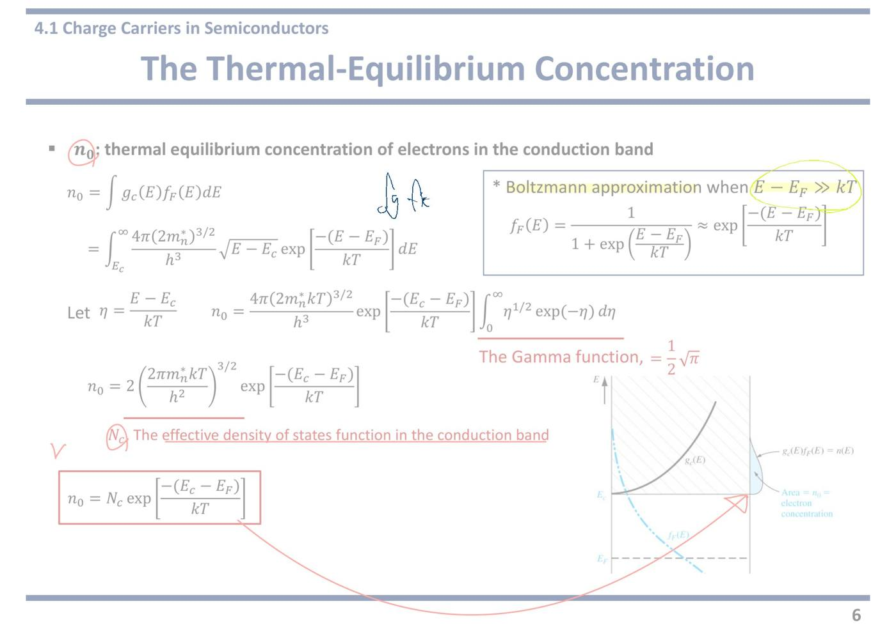
8쪽4.1 p₀ 유도 — 전자 쪽을 뒤집으면 그대로 나온다
(p₀ 에 동그라미) p₀: thermal equilibrium concentration of holes in the valence band
이번엔 p₀ 에 동그라미다. 가전자대의 정공 농도다.
유도 과정이 앞 쪽과 한 줄씩 정확히 짝을 이룬다. 새로 배울 것은 없고 위아래가 뒤집힌다는 점만 따라가면 된다.
p₀ = ∫ gv(E)·[1 − fF(E)] dE
정공은 빈자리이므로 비어 있을 확률 [1 − fF] 를 곱해 더한다.
이 대괄호 하나가 전자 식과의 유일한 차이다.
= ∫−∞Ev [4π(2mp*)3/2/h³]·√(Ev−E)·exp[−(EF−E)/kT] dE
적분 범위가 −∞ 부터 Ev 까지다. 가전자대 천장에서 아래로 끝까지 훑는다.
전자 쪽이 Ec 에서 위로 갔던 것과 정확히 반대다.
* Boltzmann approximation when E − EF ≫ kT
1 − fF(E) = 1/[1 + exp((EF−E)/kT)] ≈ exp[−(EF−E)/kT]
같은 근사를 정공 쪽에 쓴 것이다.
1 − fF 를 정리하면 fF 와 똑같은 모양인데 지수의 부호만 뒤집힌 꼴이 된다. E − EF 가 EF − E 로 바뀐 것뿐이다.
여기서도 EF 가 가전자대에서 충분히 멀 때만 분모의 1 을 버릴 수 있다. p형 도핑을 아주 세게 하면 이 조건이 깨진다.
Let η′ = (Ev − E)/kT
p₀ = −[4π(2mp*kT)3/2/h³]·exp[−(EF−E)/kT]·∫+∞0 (η′)1/2exp(−η′) dη′
같은 치환이다. 이번에는 Ev 에서 아래로 얼마나 내려왔는지를 kT 로 재는 값이다.
앞에 마이너스가 붙고 적분 범위가 +∞ 에서 0 으로 거꾸로 적힌 것은 치환 때문에 방향이 뒤집혔기 때문이다. 둘이 서로 상쇄되어 최종 결과는 양수가 된다.
부호를 겁내지 말고 모양이 전자 쪽과 같다는 것만 보면 된다.
The Gamma function, = (1/2)√π
똑같은 감마 함수, 똑같은 값 √π/2 다.
전자든 정공이든 √E 모양의 상태밀도를 지수함수와 곱해 적분하면 항상 같은 상수가 나온다.
p₀ = 2·[(2πmp*kT)/h²]3/2·exp[−(EF−Ev)/kT]
Nv, The effective density of states function in the valence band
앞 덩어리가 Nv(가전자대의 유효 상태밀도) 다. 붉은 밑줄이 그어져 있다.
Nc 와 유일한 차이는 mn* 대신 mp* 가 들어갔다는 것뿐이다.
실리콘 상온 값은 Nv = 1.04×10¹⁹ cm⁻³ 로 Nc 보다 조금 작다. 이 차이가 11쪽에서 EFi 를 중앙에서 살짝 밀어내는 원인이 된다.
Nv 도 T3/2 로 커진다.
p₀ = Nv·exp[−(EF−Ev)/kT] (붉은 상자)
정공 쪽의 결론이다. 역시 붉은 상자로 묶여 있다.
이번 언덕은 EF − Ev, 즉 페르미 준위에서 가전자대 천장까지의 거리다.
EF 가 아래로 내려와 Ev 에 가까워지면 이 거리가 줄고 정공이 폭발적으로 는다. p형 도핑이 하는 일이 바로 그것이다.
강의 중 판서
판서 영상1 23:15 p₀ 식의 gv(E) 에 동그라미를 치고 위로 DOS in the VB, [1 − fF(E)] 에 동그라미를 치고 위로 hole occupation probability 라고 적었다. 제목 줄 끝에는 (VB) 를 붙였다.
hole occupation probability(정공 점유 확률) = 그 자리를 정공이 차지할 확률. 1 − fF 를 이 이름으로 부르라는 것이다.
판서 영상1 24:47 식 오른쪽에 gv(E) 와 E ≤ Ev 를 적었다. 두 번째 줄 적분의 위 끝 Ev 와 아래 끝 −∞ 에 동그라미를 쳤다. 치환 후 적분 한계 +∞ → 0 에도 밑줄이다.
적분 범위가 왜 −∞ 부터 Ev 까지인지 보여 준다. gv(E) 는 E ≤ Ev 에서만 값이 있기 때문이다.
판서 영상1 24:13 Boltzmann approximation 에 밑줄, 근사 결과 exp[−(EF − E)/kT] 를 붉은 괄호로 묶었다. 두 번째 줄의 exp 부분도 동그라미 쳤다.
전자 쪽과 같은 근사를 정공 쪽에 그대로 가져다 쓴다는 표시다.
판서 영상1 25:43 p₀ = 2(2πmp*kT/h²)3/2 덩어리를 붉은 타원으로 묶고, Nv 에 동그라미, "effective density of states function" 에도 동그라미를 쳤다. 그 옆에 Nv 를 크게 쓰고 상자로 묶었다. 오른쪽 그림 쪽에는 E = Ev 를 적고 동그라미, 그림의 Ev 가로선으로 화살표를 내렸다. 그림의 회색 봉우리는 붉게 칠했다.
Nv 도 Nc 처럼 가전자대 자리를 전부 Ev 한 높이에 모았다고 친 자리 수라는 뜻이다.
판서 영상1 26:13 최종 식 p₀ = Nv exp[−(EF − Ev)/kT] 에서 Nv 아래 화살표로 # of state, exp 부분 아래 화살표로 state is occupied! 를 적었다. p₀ 에도 동그라미다.
최종 식을 말로 읽는 법을 적어 준 것이다. p₀ = 자리 수 × 그 자리가 (정공으로) 찰 확률.
강의에서 한 말
강의 영상1 23:33 “p₀ tells you the area under this graph, so total number of holes in the valence band” — p₀ 는 오른쪽 그림 회색 봉우리의 넓이, 곧 가전자대 정공 총수다.
강의 영상1 23:52 “1 − f(E) is the probability that the state is not occupied by an electron. So in other words, the probability that a state is occupied by a hole. … So hole occupation probability.” — 1 − fF 를 "정공 점유 확률"로 이름 붙였다. 판서의 hole occupation probability 가 이 말이다.
강의 영상1 24:13 “So similarly, we use Boltzmann approximation here. … This approximation is again only valid when the difference between energy and Fermi energy …” — 전자 쪽과 같은 조건(차이가 kT 보다 훨씬 클 때, 곧 3kT 이상)에서만 쓸 수 있다고 다시 짚었다. 문장 뒤는 인식이 끊겼다.
강의 영상1 24:47 “Here gv is only valid when energy is lower than or equal to Ev, so the range of integration becomes like this.” — 적분 범위가 −∞ ~ Ev 가 되는 이유다. 가전자대 자리는 Ev 아래에만 있다.
강의 영상1 25:23 “Then we again let this part as the gamma function, then the integration of this gamma function is ½√π.” — 치환하고 나면 전자 쪽과 똑같은 감마 함수가 나온다.
강의 영상1 26:13 “This expression can be also considered as the product of the number of states and probability that state is occupied.” — p₀ 도 자리 수(Nv) × 찰 확률(exp) 이다. 판서의 "# of state", "state is occupied!" 가 이 말이다.
강의 영상1 26:22 “If we assume that all the quantum states in the valence band exist at this energy level equal to Ev, then we have the number of states of Nv. … That's why it's called the effective density of states function in the valence band.” — Nv 이름의 유래. Nc 설명을 가전자대 쪽으로 뒤집은 것이다.
이 구간(영상1 24:31~24:35, 25:01~25:04)은 인식이 실패했다("Thank you", "그게 여기 greedy" 처럼 엉뚱한 말로 적혔다). 앞뒤로 보아 볼츠만 근사 조건과 적분식 대입을 말한 대목으로 보이지만, 직접 들어볼 것
자료에 없음 영상1 24:47 적분 범위 −∞ ~ Ev 가 어디서 왔는지는 슬라이드에 설명이 없다. 교수는 gv(E) 의 유효 범위 E ≤ Ev 에서 끌어냈다. 전자 쪽 범위 Ec ~ ∞ 도 같은 이유(gc 는 E ≥ Ec 에서만 유효)다.
자료에 없음 영상1 26:13 최종 식 옆에 "# of state", "state is occupied!" 라고 적은 읽기 방식은 자료에 없다. 식을 외울 때 앞 계수 = 자리 수, 뒤 exp = 확률로 쪼개 기억하면 n₀·p₀ 두 식이 한 틀로 정리된다.
두 식을 나란히 놓고 외운다 — n₀ = Nc·exp[−(Ec−EF)/kT], p₀ = Nv·exp[−(EF−Ev)/kT].
지수 안의 빼는 순서만 조심하면 된다. 전자는 Ec 가 앞, 정공은 EF 가 앞이다. 둘 다 괄호 안이 양수가 되도록 적혀 있다고 기억하면 헷갈리지 않는다.
9쪽4.1 진성 캐리어 농도 ni — 도핑과 무관한 재료 상수
intrinsic semiconductors: no impurities, without doping
진성 반도체 = 불순물 없음, 도핑 없음. 순수한 결정 그대로다.
실제로 완벽하게 순수한 결정은 없지만, 불순물 농도가 열로 생긴 캐리어보다 훨씬 적으면 진성으로 본다.
Intrinsic carrier concentration ni, pi: concentration of electrons and holes in an intrinsic semiconductor
ni, pi = 진성 반도체에서의 전자 농도와 정공 농도다. 아래첨자 i 는 intrinsic 의 i 다.
도핑한 반도체에서도 이 값은 계속 쓰인다. 재료와 온도만으로 정해지는 기준값이기 때문이다.
For an intrinsic semiconductor, the concentration of electrons in the conduction band is equal to the concentration of holes in the valence band, (ni = pi 에 크게 동그라미 + 별표) so normally we simply use the parameter ni
교수님이 ni = pi 에 동그라미를 치고 별표까지 붙이셨다.
순수한 결정에서는 전자 하나가 올라가면 정공 하나가 반드시 남는다. 항상 짝으로 생기니 개수가 같다.
둘이 같으니 기호를 둘씩 끌고 다닐 필요가 없다. 그래서 ni 하나로 통일해 쓴다.
The intrinsic Fermi energy (EFi): the fermi energy level for the intrinsic semiconductors
EFi(진성 페르미 준위) = 도핑 안 한 상태에서의 페르미 준위 위치다.
거의 밴드갭 한가운데다. 전자와 정공이 같은 수여야 하므로 수면이 정확히 가운데 와야 균형이 맞기 때문이다.
앞으로 도핑한 반도체의 EF 위치를 말할 때 항상 EFi 를 기준으로 얼마나 위·아래인지로 표현한다. 해수면을 기준으로 고도를 재는 것과 같다.
ni = n₀ = Nc·exp[−(Ec−EFi)/kT], p₀ = pi = ni = Nv·exp[−(EFi−Ev)/kT]
앞 두 쪽에서 구한 식에 EF 자리에 EFi 를 넣은 것뿐이다.
진성이니 EF = EFi 이고, n₀ = p₀ = ni 다.
새 식이 아니라 같은 식의 진성 버전이라는 점만 확인하면 된다.
nipi = ni² = NcNv·exp[−(Ec−EFi)/kT]·exp[−(EFi−Ev)/kT] = NcNv·exp[−(Ec−Ev)/kT] = NcNv·exp(−Eg/kT)
이 장에서 가장 중요한 소거가 일어나는 줄이다.
지수끼리 곱하면 어깨의 값이 더해진다. −(Ec−EFi) + −(EFi−Ev) 를 계산하면 EFi 가 서로 지워지고 −(Ec−Ev) 만 남는다.
Ec − Ev 가 바로 밴드갭 Eg 다.
즉 페르미 준위가 어디에 있든 곱은 똑같다. 이 성질이 다음 쪽들에서 계속 쓰인다.
Eg = Ec − Ev: the bandgap energy
밴드갭 에너지의 정의다. 전도대 바닥에서 가전자대 천장까지의 거리.
실리콘은 1.12 eV, 저마늄은 0.66 eV, 갈륨비소는 1.42 eV 다.
Eg 가 exp 의 어깨에 마이너스로 들어 있으므로 밴드갭이 클수록 ni 가 급격히 작아진다. 저마늄의 ni 가 실리콘보다 천 배 넘게 큰 이유가 이것이다.
[필기] ∴ ni = pi = √(NcNv)·exp(−Eg/2kT)
교수님이 직접 적어 주신 실전용 형태다.
∴ 는 "그러므로" 라는 기호다.
위 식의 양변에 제곱근을 씌웠다. 제곱근을 씌우면 NcNv 는 √ 안으로, 지수의 분모는 kT 에서 2kT 로 바뀐다.
이 2 를 빠뜨리면 답이 제곱만큼 틀린다. 시험에서 가장 흔한 실수다.
→ For a given semiconductor material at a constant temperature, the value of (ni 에 동그라미) is a constant, and independent of the Fermi energy (붉은 밑줄)
교수님이 ni 에 동그라미, "independent of the Fermi energy" 에 밑줄을 치셨다.
재료가 정해지고 온도가 정해지면 ni 는 그냥 상수다. 도핑을 아무리 해도 ni 는 안 변한다.
여기서 헷갈리기 쉽다. 도핑하면 n₀ 는 분명히 변한다. 하지만 ni 는 "도핑 안 했을 때의 값"이라는 이름표일 뿐이라 그대로다.
그래서 ni 를 자로 삼아 "지금 전자가 ni 의 몇 배인가"를 재는 데 쓸 수 있다.
★ 시험 포인트 — 교수님이 ni = pi 에 동그라미와 별표, ni 에 동그라미, "independent of the Fermi energy" 에 밑줄을 치고 √ 형태의 식을 손으로 적어 주셨다. 세 가지를 챙긴다.
① n₀p₀ = ni² — 도핑과 무관하게 항상 성립. 다수 캐리어를 구한 뒤 소수 캐리어를 이것으로 구한다. n형이면 p₀ = ni²/n₀, p형이면 n₀ = ni²/p₀.
② ni² = NcNv·exp(−Eg/kT) 와 ni = √(NcNv)·exp(−Eg/2kT) — 2kT 의 2
③ Nc, Nv 는 T3/2 에 비례한다. 온도를 바꿔 ni 를 다시 구하라는 문제(다음 쪽 예제 4.3)가 정확히 이것을 묻는다.
강의 중 판서
판서 영상1 27:35 제목 아래에 “→ extrinsic semiconductors” 라고 쓰고 화살표로 intrinsic 과 맞세웠다.
진성(intrinsic, 불순물 없는 순수 결정)의 반대말이 외인성(extrinsic, 일부러 불순물을 넣은 것) 이라는 것을 처음부터 짝으로 기억시키려는 표시다. 외인성은 12쪽부터 나온다.
판서 영상1 29:02 왼쪽 위 여백에 CB(전도대)와 VB(가전자대) 를 그리고, CB 에 전자 동그라미, VB 에 빈 동그라미(정공)를 그린 뒤 둘을 선으로 이었다.
전자 하나가 VB 에서 CB 로 뛰어오르면 VB 에 빈자리 하나가 남는다. 그래서 ni = pi 는 당연하다는 것을 그림으로 보여 준 것이다.
판서 영상1 30:09 오른쪽에 Pi, ni 를 적고 ni 에만 동그라미. 그 아래 ni, EFi 를 적고 아래첨자 i 에 동그라미를 쳤다.
① pi 는 쓰지 않고 ni 하나로 쓴다는 뜻. ② 아래첨자 i 는 “진성(intrinsic)용”이라는 이름표일 뿐이라는 뜻이다. 기존 기호에 i 만 붙이면 진성 버전이 된다.
판서 영상1 31:30 오른쪽 위에 앞 쪽 식 n₀ = Nc·exp[−(Ec−EF)/kT] 를 다시 적고, 슬라이드 식의 ni, EFi 에 화살표를 그었다.
“n₀ 자리에 ni, EF 자리에 EFi 를 넣으면 끝”이라는 것을 나란히 놓고 보여 준 것이다. 새 공식이 아니다.
판서 영상1 32:38~33:56 곱셈 줄에서 두 지수 항의 EFi 에 각각 표시하고 화살표로 서로 지워짐을 나타냈다. nipi 아래에 화살표로 ni·ni 를 쓰고, 마지막 −Eg 에 동그라미. 오른쪽에 ni² = NcNv·exp[−Eg/kT] 를 따로 적었다.
pi 가 ni 와 같으니 곱이 ni² 가 되고, EFi 가 사라져 Eg(밴드갭)만 남는다는 소거 과정을 눈으로 따라가게 한 것이다.
판서 영상1 34:36~34:55 맨 아래에 “T, bandgap(Eg) → ni = √(NcNv·exp[−Eg/kT])” 를 크게 쓰고 ni 에 동그라미. 오른쪽 중간에도 같은 √ 식을 적고 네모로 감싼 뒤 긴 화살표로 아래 식과 이었다.
“온도와 밴드갭 두 개만 정해지면 ni 가 정해진다”는 이 쪽의 결론을 한 줄로 요약한 것이다. 판서는 exp 까지 통째로 √ 안에 넣은 모양인데, 이것은 PDF 필기의 √(NcNv)·exp(−Eg/2kT) 와 같은 식이다. √ 를 exp 에 나눠 주면 kT 가 2kT 가 된다.
강의에서 한 말
강의 영상1 27:44 “For extrinsic semiconductors, we employ impurity on purpose. … we will learn this concept later in this chapter.” — 외인성 반도체는 불순물을 일부러 넣은 것이고, 이 장 뒤에서 배운다. 진성을 먼저 배우는 이유는 외인성의 기준점이 되기 때문이다.
강의 영상1 28:46 “This is a very important equation, but this is pretty trivial.” — ni = pi 는 아주 중요한 식이지만 당연한 식이기도 하다. 중요하다고 해서 어려운 게 아니라는 말이다.
강의 영상1 29:06 “Valence band holes are created when electrons in the valence band jump from the valence band to the conduction band.” — 가전자대의 정공은 가전자대 전자가 전도대로 뛰어오를 때 생긴다. 전자 하나당 정공 하나. 그래서 수가 같을 수밖에 없다.
강의 영상1 30:12 “We don't use pi to describe the intrinsic hole concentration … we use ni to describe both electron and hole concentration.” — 진성 정공 농도도 pi 라 쓰지 않고 ni 로 쓴다. 32:31 에 한 번 더 “always have to use ni instead of pi” 라고 했다.
강의 영상1 31:30 “Remember, n₀ was described as Nc exponential … For the intrinsic semiconductors, this n₀ becomes ni and EF becomes EFi.” — 앞에서 배운 n₀ 식에 기호만 바꿔 넣은 것이라고 짚었다.
강의 영상1 33:16 “Exponential minus EFi over kT … cancels out, and this equation becomes much simpler.” — 두 지수를 곱하면 EFi 가 들어 있는 부분이 서로 지워져 식이 훨씬 단순해진다. 남는 Ec − Ev 가 밴드갭 Eg 다.
강의 영상1 34:20 “The lesson we learned here is that for a given semiconductor material at a constant temperature, the value of ni is a constant and independent of the Fermi energy.” — 이 쪽의 교훈이라고 못박은 문장이다. 이어 “when temperature and band gap are determined” 를 두 번 반복하며 T 와 Eg 만으로 ni 가 정해진다고 했다.
자료에 없음 영상1 32:23~32:31 슬라이드는 “normally we simply use ni” 라고 부드럽게 썼지만, 교수는 “you always have to use ni instead of pi” 라고 규칙으로 말했다. 답안에서 진성 정공 농도를 쓸 때도 pi 대신 ni 로 적는 것이 이 강의의 약속이다.
자료에 없음 영상1 34:36~34:55 슬라이드는 “재료와 온도가 정해지면 상수”라고만 했다. 교수는 이것을 “온도와 밴드갭 두 개가 정해지면” 으로 바꿔 말하고 판서로도 적었다. 재료가 바뀐다는 것은 결국 Eg(그리고 Nc, Nv)가 바뀐다는 뜻이다. 다음 쪽 예제가 바로 이 두 변수를 가지고 논다.
★ 시험 포인트 (강의) — ni = pi 를 “a very important equation” 이라 했다(1회). “remember, this pi is always same as ni” 라고 한 번 더 짚고, “pi 대신 ni 를 쓴다”를 두 번(30:12, 32:31) 반복했다. “The lesson we learned here” 로 ni 는 T·Eg 만으로 정해지고 페르미 준위와 무관하다는 결론을 따로 강조했다.
내 굿노트 필기
내 굿노트 필기 "The intrinsic Fermi energy (E
Fi)" 줄 위에 연두색 별표와
정X — "E
Fi 는 정중앙이다"는
틀린 말(X)이라는 메모로 보인다. 리뷰③ 02:26 "정중앙에 있다, OX — 이러면 당연히 X 로 해야 된다"(
11쪽)를 받아 적은 것이다.
내 필기만 진하게 표시한 쪽 이미지 보기
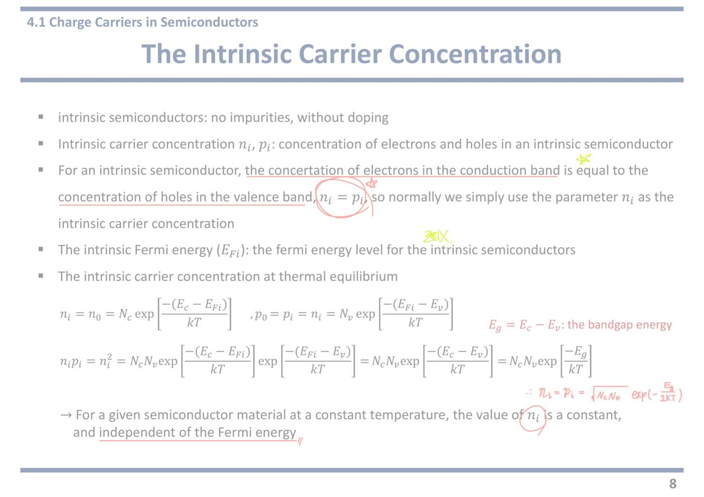
10쪽예제 4.3 — 온도가 바뀌면 ni 가 얼마나 변하나
Calculate the intrinsic carrier concentration in silicon at T = 250 K and at T = 400 K.
상온(300 K)이 아닌 두 온도에서 ni 를 구하라는 문제다. 교수님이 두 온도에 붉은 밑줄을 그으셨다.
250 K 는 −23 °C, 400 K 는 127 °C 다. 냉동실과 끓는 물 사이 정도의 범위다.
이 문제가 노리는 것은 딱 하나다. 온도가 조금 바뀌어도 ni 는 자릿수가 통째로 바뀐다는 감각이다.
The value of Nc and Nv for silicon at T = 300 K are 2.8 × 10¹⁹ cm⁻³ and 1.04 × 10¹⁹ cm⁻³, respectively.
교수님이 숫자마다 붉은 밑줄을 그으셨다. 주어진 값이 300 K 기준이라는 것이 함정이다.
구해야 하는 온도는 250 K 와 400 K 이므로 Nc, Nv 를 그 온도로 먼저 고쳐야 한다.
그냥 2.8×10¹⁹ 을 그대로 쓰면 틀린다.
Both Nc and Nv vary as T3/2.
고치는 방법이 이 줄에 적혀 있다. Nc, Nv 는 T3/2 에 비례한다.
그래서 Nc(T) = Nc(300)·(T/300)3/2 로 환산한다.
250 K 면 (250/300)3/2 ≈ 0.76 배, 400 K 면 (400/300)3/2 ≈ 1.54 배다. 기껏해야 몇 십 % 수준의 변화다.
이 항이 왜 T3/2 인지는 7쪽에서 나왔다. 유효 상태밀도 공식 안에 (kT)3/2 가 들어 있기 때문이다.
Assume the bandgap energy of silicon is 1.12 eV and does not vary over this temperature range.
밴드갭은 안 변하는 것으로 친다는 조건이다. 실제로는 온도가 오르면 Eg 가 조금 줄지만 여기서는 무시한다.
이런 "~라고 가정한다" 줄을 대충 넘기면 안 된다. 계산에서 무엇을 고정하고 무엇을 바꿀지를 정해 주는 줄이다.
여기서는 Eg 는 고정, Nc·Nv 와 kT 만 온도에 따라 바뀐다.
[필기] ni = √(NcNv)·exp(−Eg/2kT)
교수님이 풀이 첫 줄을 직접 적어 주셨다. 이 식 하나로 끝나는 문제라는 뜻이다.
손 순서는 이렇다. ① T 에 맞게 Nc, Nv 를 T3/2 로 환산 ② 그 T 에서의 kT 를 계산 ③ 식에 대입.
kT 계산법 — 상온 300 K 에서 kT = 0.0259 eV 이므로, 다른 온도에서는 kT = 0.0259 × (T/300) 로 비례해 구하면 된다. 250 K 면 약 0.0216 eV, 400 K 면 약 0.0345 eV 다.
[필기] T↑ , ni ↑
이 예제의 결론을 한 줄로 적어 주신 것이다. 온도가 오르면 ni 가 오른다.
왜인지가 중요하다. 지수 안이 −Eg/2kT 이므로 T 가 커지면 분모가 커져 지수의 절댓값이 작아진다. exp(−큰 수) → exp(−작은 수) 로 바뀌면서 값이 폭발적으로 커진다.
앞의 T3/2 도 커지지만 그쪽은 몇 십 % 수준이다. 승부는 지수 항에서 난다.
실제 계산 결과를 보면 250 K 에서 약 7.0×10⁷ cm⁻³, 400 K 에서 약 2.38×10¹² cm⁻³ 다. 온도가 1.6 배 오르는 동안 ni 는 3만 배 넘게 커진다.
오른쪽 그래프 — 세로축이 진성 캐리어 농도 ni(cm⁻³), 로그 눈금이라 한 칸이 10배다. 가로축은 1000/T 인데 오른쪽으로 갈수록 온도가 낮아진다. 위쪽에 실제 온도(°C)가 따로 적혀 있다.
Ge, Si, GaAs 세 직선이 나란히 내려간다. 로그 축에서 직선이라는 것은 원래 지수함수라는 뜻이다. exp(−Eg/2kT) 에 로그를 씌우면 1/T 에 대한 일차식이 되기 때문이다.
세 직선의 위아래 순서가 밴드갭 순서와 반대다. 밴드갭이 가장 작은 Ge 가 맨 위, 가장 큰 GaAs 가 맨 아래다. 기울기가 곧 Eg 다.
교수님이 붉은 화살표를 두 개 그으셨다. 위로 향한 화살표는 "온도가 오르면 ni 가 오른다", 아래쪽 왼쪽으로 향한 화살표는 "가로축을 왼쪽으로 갈수록 고온" 이라는 읽는 방향 표시다.
★ 시험 포인트 — 교수님이 주어진 수치마다 밑줄을 긋고 풀이 첫 식과 "T↑, ni↑" 를 손으로 적으셨다. 이 예제 형태가 그대로 나온다.
① Nc, Nv 를 T3/2 로 환산하는 단계를 빼먹지 말 것. 문제는 늘 300 K 값을 주고 다른 온도를 묻는다.
② kT 도 온도에 따라 바뀐다. 0.0259 eV 는 300 K 전용 값이다.
③ 답의 자릿수를 먼저 어림해 볼 것. 온도가 내려가면 ni 는 자릿수 단위로 떨어진다. 10¹⁰ 근처 답이 나왔는데 250 K 문제였다면 어딘가 틀린 것이다.
강의 중 판서
판서 영상1 36:11~37:18 왼쪽에 앞 쪽 유도를 다시 적었다. ni = Nc·exp(−(Ec−EFi)/kT), ni = pi = Nv·exp(−(EFi−Ev)/kT) 를 쓰고 “×” 로 곱한 뒤, EFi 에 빗금을 쳐 지우고 ni² = NcNv·exp(−(Ec−Ev)/kT), 그 옆에 Eg 라고 적었다.
예제를 풀기 전에 쓸 식이 어디서 왔는지 한 번 더 손으로 보여 준 것이다.
판서 영상1 37:51~38:36 ni = √(NcNv)·exp(−1.12/kT) 를 쓰고 Nc, Nv, kT 세 개에 각각 동그라미. 보라색으로 T = 300K 라 적어 화살표로 이었다. 문제 위쪽 T3/2 의 3/2 에도 동그라미.
“주어진 값은 300 K 값이고, 이 셋이 온도에 따라 바뀌는 놈들”이라는 표시다. kT 는 T 에 정비례, Nc·Nv 는 T3/2 에 비례한다.
판서 영상1 38:51~40:45 가운데에 파란 네모로 “at 250K” 를 쓰고 대입식을 적었다. ni = √[(2.8×10¹⁹)(250K/300K)3/2(1.04×10¹⁹)(250/300)3/2] · exp(−1.12/(kT·온도비)). 나중에 파란 펜으로 250 을 400 으로 고쳐 쓰고 “at 400K” 를 따로 네모쳤다.
400 K 는 새로 풀 필요 없이 온도비만 바꾸면 된다는 것을 한 식 위에서 보여 준 것이다.
판서 영상1 39:52~40:31 “kT @ 300K (kT) = 0.029 eV” 라고 쓰고 kT 와 300K, 숫자에 겹겹이 동그라미·밑줄을 쳤다.
상온 kT 값을 외워 두라고 하며 쓴 것이다. 판서 글자는 0.029 처럼 보이지만 올바른 값은 0.0259 eV 다(아래 ‘자료에 없음’ 참고).
판서 영상1 41:22 파란 펜으로 ni = 2.38(×10¹²) 을 적었다. 400 K 의 답이다.
판서 영상1 42:02~43:40 아래쪽에 CB·VB 그림을 두 번 그리고 전자가 VB 에서 CB 로 뛰는 화살표, “thermal energy” 에 동그라미, 옆에 “T↑↑”. 오른쪽 그래프에는 Ge·Si·GaAs 이름표에 동그라미, 가로축 1000/T 에 동그라미, 10⁷ 근처에 왼쪽 화살표와 위쪽 화살표를 추가했다.
“온도가 오르면 → 열에너지를 받은 전자가 더 많이 뛰어오른다 → ni 증가” 라는 원인을 그림으로 붙인 것이다. 그래프에서는 세 재료 모두 같은 방향으로 움직인다는 것을 짚었다.
강의에서 한 말
강의 영상1 35:48 “We have a value of Nc and Nv when the temperature is 300 Kelvin. And we will use those two values to obtain Nc and Nv at those two different temperatures.” — 주어진 Nc, Nv 는 300 K 값이다. 이것을 다른 온도 값으로 바꿔 써야 한다.
강의 영상1 37:51 “Nc and Nv are temperature dependent and this kT is also temperature dependent.” — 온도에 따라 바뀌는 것은 Nc, Nv, kT 셋이다. 38:21 에서 “kT 는 온도에 선형(linear), Nc·Nv 는 T3/2” 라고 구분했다.
강의 영상1 39:52 “It's pretty practical to memorize kT at 300 Kelvin, so room temperature. … You will be using this value pretty often. So I recommend you to memorize this value.” — 상온의 kT 는 자주 쓰니 외워 두라는 말이다. kT 는 볼츠만 상수 k 와 온도 T 를 곱한 값이고 단위는 eV(전자볼트)다.
강의 영상1 40:53 “Then we found 7.0 times 10 to 7.” — 250 K 의 답은 ni ≈ 7.0×10⁷ cm⁻³ 다.
강의 영상1 41:04~41:22 “If you want to calculate the carrier concentration at 400 Kelvin, you just need to change the temperature ratio. … ni equals 2.38×10¹².” — 400 K 는 온도비만 바꾸면 된다. 답은 ni ≈ 2.38×10¹² cm⁻³.
강의 영상1 42:15~42:54 “Charge carriers can be generated only when some of the electrons jump from the valence band to the conduction band … those electrons require external energy … and the thermal energy is a good energy source.” — 진성 반도체에서 캐리어가 생기는 길은 전자가 밴드갭을 뛰어넘는 것 하나뿐이다. 그 에너지를 열이 대 준다. 온도가 오르면 뛰어넘는 전자가 늘어난다.
강의 영상1 43:50 “When more electrons jump to the conduction band, then we have more electrons in the conduction band and also more holes in the valence band.” — 전자만 느는 게 아니라 정공도 같이 는다. 진성이니 늘 짝으로 늘어난다.
자료에 없음 영상1 40:16 상온(300 K) kT = 0.0259 eV — 외우라고 한 숫자다. 음성인식과 판서 글자는 “0.029” 로 보이지만, 교수가 말한 답 7.0×10⁷ 과 2.38×10¹² 은 0.0259 를 넣어야 정확히 나온다(직접 계산해 확인했다). 0.029 를 넣으면 답이 한두 자릿수 틀어진다. 다른 온도에서는 0.0259×(T/300) 으로 비례해 구한다.
자료에 없음 영상1 40:53, 41:22 예제의 정답: 250 K → 7.0×10⁷ cm⁻³, 400 K → 2.38×10¹² cm⁻³. (직접 다시 계산해도 같은 값이 나온다.) 두 값의 비는 약 3.4×10⁴ 배다. 온도가 1.6 배 오를 때 ni 는 약 3만 4천 배 커진다.
자료에 없음 영상1 42:02~42:54 슬라이드는 결과(T↑, ni↑)만 보여 준다. 교수는 왜 그런지 메커니즘을 말로 덧붙였다. 가전자대 전자가 밴드갭을 넘으려면 외부 에너지가 필요하고, 그 에너지원이 열이다. 온도가 오르면 넘을 만큼 에너지를 받은 전자가 많아진다.
★ 시험 포인트 (강의) — ① 상온 kT = 0.0259 eV 를 외워라: “pretty practical to memorize”(39:52), “I recommend you to memorize this value”(40:13), “pretty practical to memorize”(40:25) — 3회 반복. ② “That temperature dependence of the intrinsic carrier concentration is pretty important” (44:03), “you need to remember that intrinsic carrier concentration is strongly temperature dependent” (44:11) — 2회. ③ Nc·Nv 는 T3/2, kT 는 T 에 비례해 둘 다 고쳐 넣는다.
내 굿노트 필기
내 굿노트 필기 남색으로 NcNv ‖ · exp(−Eg/2kT), 그 아래 T3/2 ∝ … exp(−1/T …) 을 쓰고 동그라미·물결로 지운 흔적. ni 의 온도 의존은 앞의 T3/2(Nc·Nv 쪽)보다 뒤의 exp 쪽이 압도적이라는 것을 정리하다 고친 것으로 보인다. 예제 4.3 에서 Nc·Nv 를 (T/300)3/2 로 고쳐 넣는 이유가 앞 항이다.
내 필기만 진하게 표시한 쪽 이미지 보기
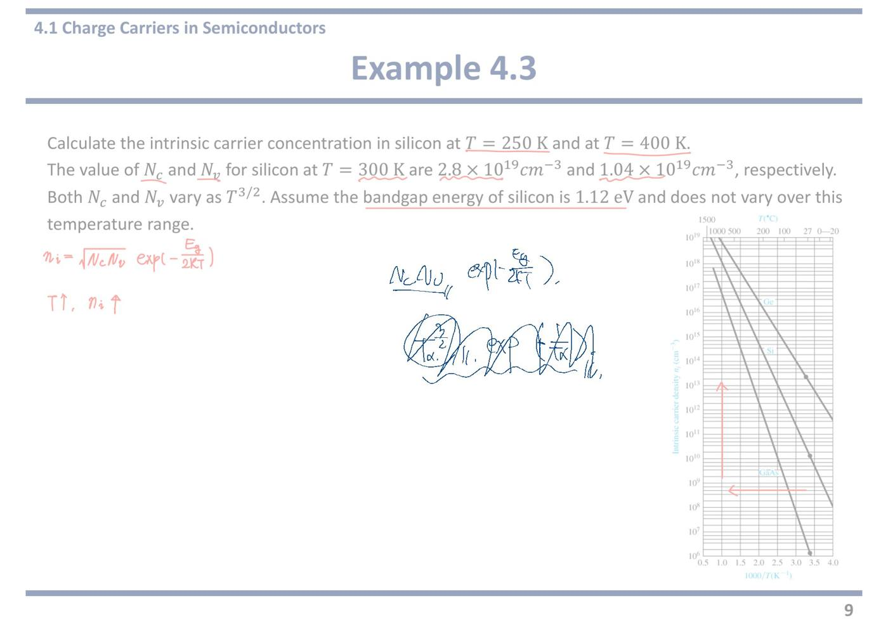
11쪽4.1 EFi 는 정확히 한가운데인가
In an intrinsic semiconductor, the concentration of electrons in the conduction band is equal to the concentration of holes in the valence band
진성 반도체의 조건을 다시 적은 줄이다. n₀ = p₀.
이 조건 하나로 EFi 의 위치가 완전히 결정된다. 미지수 하나(EFi)에 방정식 하나면 충분하기 때문이다.
n₀ = Nc·exp[−(Ec−EFi)/kT] = Nv·exp[−(EFi−Ev)/kT] = p₀
7쪽과 8쪽의 두 식을 같다고 놓은 것이다. 여기서부터는 그냥 대수 계산이다.
양변에 로그를 씌워 EFi 에 대해 풀면 다음 줄이 나온다.
양쪽 exp 의 어깨를 비교하는 것이므로, 로그를 씌우면 지수가 그대로 내려온다.
EFi = ½(Ec + Ev) + ½·kT·ln(Nv/Nc)
푼 결과다. 두 덩어리로 읽는다.
½(Ec + Ev) = 밴드갭의 정확한 한가운데. 이것이 주된 항이다.
½·kT·ln(Nv/Nc) = 중앙에서 얼마나 벗어나는지를 나타내는 보정 항이다.
보정 항이 0 이 되려면 Nv = Nc 여야 한다. ln 1 = 0 이기 때문이다. 자리 수가 위아래로 똑같으면 수면은 정중앙이라는 뜻이다.
자리가 아래쪽에 더 많으면(Nv > Nc) ln 이 양수라 수면이 살짝 올라간다. 아래쪽 빈칸이 많으니 균형을 맞추려면 수면을 올려야 하는 것과 같다.
Nc = 2[(2πmn*kT)/h²]3/2, Nv = 2[(2πmp*kT)/h²]3/2
Nc 와 Nv 의 원래 모양을 다시 꺼내 놓은 것이다.
둘을 나누면 kT, h, 2π, 상수 2 가 전부 약분되고 (mp*/mn*)3/2 만 남는다.
즉 Nv/Nc 는 결국 유효질량의 비다.
EFi = ½(Ec + Ev) + ¾·kT·ln(mp*/mn*) (붉은 밑줄)
위의 비를 대입해 정리한 최종 형태다. 교수님이 붉은 밑줄을 그으셨다.
계수가 ½ 에서 ¾ 로 바뀐 이유는 로그 안의 3/2 승이 밖으로 나오면서 ½ × 3/2 = ¾ 가 되었기 때문이다.
이제 EFi 의 위치는 전자와 정공의 유효질량 차이로만 결정된다.
실리콘에서 mp* 가 mn* 보다 조금 크므로 EFi 는 중앙보다 아주 살짝 위다.
When mp* = mn*, EFi = ½(Ec+Ev): in the center of the band gap
When mp* > mn*, EFi > ½(Ec+Ev): slightly above the center
When mp* < mn*, EFi < ½(Ec+Ev): slightly below the center (세 줄을 붉은 괄호로 묶음)
교수님이 세 줄을 붉은 괄호로 통째로 묶으셨다. 한 덩어리로 보라는 뜻이다.
규칙은 간단하다. 유효질량이 무거운 쪽으로 EFi 가 끌려간다.
왜 그런가. 유효질량이 크면 그쪽 밴드의 자리 수(N)가 많아진다. 자리가 많은 쪽에 캐리어가 많이 생기려 하니, 개수를 같게 맞추려면 수면을 자리 많은 쪽으로 옮겨야 한다.
세 경우 모두 slightly(살짝) 라고 적혀 있다. 다음 줄에 그 이유가 있다.
[필기] ↕ 매우 작음 (오른쪽 밴드 그림의 EF 위아래에 붉은 가로선 두 개)
교수님이 EF 위아래로 붉은 선 두 개를 긋고 그 사이를 화살표로 표시한 뒤 매우 작음이라고 적으셨다.
보정 항의 크기를 실제로 재 보면 그 이유가 보인다. 상온에서 kT = 0.0259 eV 이고, mp*/mn* 가 2 정도라 해도 ln 2 ≈ 0.69 이므로 ¾ × 0.0259 × 0.69 ≈ 0.013 eV 다.
밴드갭 1.12 eV 에 비하면 1 % 남짓이다.
그래서 실전에서는 EFi 를 그냥 밴드갭 한가운데로 놓고 계산해도 된다. 시험에서도 대부분 그렇게 푼다.
오른쪽 그림 — 6쪽에 나왔던 그림과 같다. 세로축이 에너지, 빗금이 상태밀도, 쇄선이 fF(E) 다. 위 봉우리의 넓이 n₀ 와 아래 봉우리의 넓이 p₀ 가 눈으로 봐도 같은 크기다. 진성 반도체라 그렇다. 그 균형을 만드는 수면 높이가 EF(= EFi) 이고, 그림에서 밴드갭 거의 한가운데에 그려져 있다.
★ 시험 포인트 — 교수님이 최종 식에 붉은 밑줄, 세 경우를 붉은 괄호로 묶음, EF 근처에 "매우 작음" 을 표시하셨다. 묻는 방식은 둘 중 하나다.
① EFi 가 중앙에서 어느 쪽으로 얼마나 벗어나는가 — 답은 ¾·kT·ln(mp*/mn*), 방향은 유효질량이 무거운 쪽.
② 그 크기가 무시할 만한가 — 상온 실리콘에서 0.01 eV 안팎으로 밴드갭의 1 % 수준이라 무시해도 된다. "EFi ≈ 밴드갭 중앙"으로 놓고 푸는 근거가 이것이다.
강의 중 판서
판서 영상1 44:45 둘째 줄 식 Nc·exp[…] = Nv·exp[…] 전체를 네모로 감싸고 가운데 = 에 동그라미를 쳤다. 첫 문장 “concentration of electrons … equal to … holes” 에도 밑줄.
EFi 를 구하는 출발점이 “전자 수 = 정공 수” 라는 등식 하나라는 것을 표시한 것이다.
판서 영상1 45:06~45:29 ½kT·ln(Nv/Nc) 의 Nv, Nc 에 동그라미, 아래 Nc, Nv 공식 안의 mn*, mp* 에 동그라미를 쳤다.
Nc, Nv 안에 유효질량(전자·정공이 결정 안에서 움직일 때 보이는 겉보기 질량)이 들어 있으니, 비를 유효질량으로 바꿔 쓸 수 있다는 연결 고리를 짚은 것이다.
판서 영상1 45:37 최종식 EFi = ½(Ec+Ev) + ¾kT·ln(mp*/mn*) 을 큰 타원으로 감싸고, EFi 와 +¾kT·ln(…) 항에 따로 동그라미를 쳤다.
앞 항(정중앙)과 뒤 항(보정)을 두 덩어리로 나눠 보라는 표시다.
판서 영상1 45:45~46:47 세 경우 줄에서 mp*, mn* 에 물결 밑줄, 둘째 줄 “> ½(Ec+Ev)” 를 네모로 감쌌다. “in the center”, “slightly above”, “slightly below” 에 각각 밑줄.
부등호 방향과 “위/아래”를 짝지어 읽으라는 표시다.
판서 영상1 46:56~47:35 오른쪽 그림에 Ec, EFi, Ev 를 크게 적고(Ec, Ev 위치에 동그라미), EF 점선을 길쭉한 타원으로 감싼 뒤 위아래 화살표(↕) 를 그었다. 식 쪽에서 그림으로 ⇒ 화살표.
“유효질량에 따라 EFi 가 이 타원 폭 안에서 조금 오르내린다”는 것을 그림 위에 옮긴 것이다. 움직임이 타원 안에 머문다는 것 자체가 “크게 안 움직인다”는 뜻이다.
강의에서 한 말
강의 영상1 44:31 “Important factor of intrinsic semiconductor is that the concentration of electrons in the conduction band is always equal to the concentration of holes in the valence band.” — 9쪽에서 한 말을 다시 반복했다. EFi 위치도 이 조건 하나에서 나온다.
강의 영상1 45:16 “They have the terms, the effective mass of electrons and effective mass of holes inside. Then we can rewrite this equation in terms of effective mass.” — Nc, Nv 안에 유효질량이 있으니 식을 유효질량으로 다시 쓸 수 있다.
강의 영상1 45:45 “When the effective mass of holes and effective mass of electrons are the same, then this part becomes zero … the Fermi energy is located in the exact center of the band gap.” — 두 유효질량이 같으면 ln 1 = 0 이라 보정 항이 사라지고, EFi 는 밴드갭 정중앙이다.
강의 영상1 47:23 “If the effective mass of holes is higher than the effective mass of electrons, then it moves slightly higher … if the effective mass of electrons is higher, it moves slightly lower.” — 정공이 무거우면 살짝 위, 전자가 무거우면 살짝 아래. 그림 위에서 손으로 짚어 가며 설명했다.
강의 영상1 47:45 “Of course the effective mass of holes and electrons do not have a significant difference. So it will not move dramatically.” — 전자와 정공의 유효질량은 크게 다르지 않다. 그래서 EFi 도 크게 움직이지 않는다.
강의 영상1 47:56~48:13 “The intrinsic Fermi energy is located somewhere around the middle. But it's not exactly in the center of the band gap, unless the effective masses of holes and electrons are the same.” — 대략 가운데지만, 유효질량이 같지 않은 한 정확히 가운데는 아니다. 정확한 위치는 유효질량을 비교해 구한다.
자료에 없음 영상1 47:45 PDF 필기는 “매우 작음”이라고 결과만 적었다. 교수가 말한 이유는 “전자와 정공의 유효질량 차이가 원래 크지 않아서”다. ln 안의 비가 1 근처라 ln 값이 작고, 거기에 kT(상온 0.0259 eV)까지 곱해지니 보정 항이 작을 수밖에 없다.
자료에 없음 영상1 48:03 “거의 가운데”와 “정확히 가운데”를 구분했다. 계산에서는 가운데로 어림해도 되지만, “EFi 는 밴드갭 정중앙이다”라고 단정하면 틀린 말이다. 유효질량이 같을 때만 정중앙이다.
★ 시험 포인트 (강의) — 진성 조건 n₀ = p₀ 를 “important factor” 라고 다시 불렀다(44:31, 9쪽 “very important equation” 에 이은 반복). 유효질량 비교로 EFi 가 중앙보다 위인지 아래인지 판단하는 흐름을 그림 위에서 두 번(46:12~46:47 식으로, 47:05~47:35 그림으로) 되풀이했다.
오프라인 리뷰 수업에서 (실제 강의 · 한국어)
리뷰 수업 리뷰② 01:47 ~ 03:37, 리뷰③ 00:00 ~ 02:33 이 이 쪽이다. 두 녹음 사이가 끊겨 있어(파일이 따로 저장됨) EFi 식을 유도한 대목 일부는 비어 있다. 리뷰③ 00:00~00:21 은 뒷자리 학생에게 주의를 준 말이다.
리뷰 리뷰② 01:57 "두 번째 얘기할 수 있는 거는 바로 페르미 준위의 위치." … "컨덕션 밴드가 있고 밸런스 밴드가 있을 때 페르미 준위는 (정중앙에) 위치한다, 라고 하면 맞습니까? 틀립니다. … 대략 위치한다, 이게 맞는 편이지." … "진성 반도체, 인트린직 세미컨덕터에 I 를 따서 EFi 라고. EFi 는 이 밴드갭의 중앙쯤에 위치한다. … 실리콘 같은 경우에는 Ec−Ev 밴드갭의 크기가 1.1 입니다. 가운데 딱 정중앙이 0.55."
리뷰 리뷰③ 00:21 "얘는 이제 Nc 랑 Nv 에 대한 식을 effective mass 식으로 대체를 하면 이렇게 쓸 수가 있습니다. 요게 정중앙을 의미하시겠죠? Ec 와 Ev 를 더하고 2로 나눠주면 정확한 정중앙. … 만약에 effective mass 가 두 개 같다면 요 항이 없어지니까 정중앙이 맞는데, effective mass 가 대부분 다르기 때문에 조금 차이가 나는 거죠."
리뷰 리뷰③ 01:07 "실리콘 같은 경우에는 정확한 위치가 정중앙보다 12.8 meV 아래 위치하게 되는데 … 0.0128 eV 잖아요. … 요게 0.55 니까 요 간격이 0.56 정도 된다는 거죠. 큰 차이가 나요 안 나요? 큰 차이가 거의 안 나죠. 그래서 EFi 를 ½(Ec+Ev) 로 (근사한다)."
식으로는 EFi − Emidgap = (3/4)kT·ln(mp*/mn*). 실리콘은 mp* < mn* 이라 이 값이 음수(−0.0128 eV), 즉 살짝 아래다. (전사에는 "12.8 mm"로 적혔지만 단위는 meV.)
★ OX 대비 리뷰③ 02:20 — "문제 풀 때 여러분들이 그냥 정중앙에 있다고 가정하고 문제를 풀면 된다. 근데 하지만 '정중앙에 있다, OX' 이러면 당연히 X 로 해야 된다는 거죠."
계산 문제: EFi = 밴드갭 중앙. 개념 문제: 정확히는 중앙이 아니다 — 유효질량이 달라서. Si 는 12.8 meV 아래.
12쪽4.2 도핑 — 5족을 넣으면 n형
Intrinsic semiconductor (형광펜 강조)
먼저 도핑 전 상태를 보여 준다.
왼쪽 격자 그림에서 Si 원자들이 서로 팔을 두 줄씩(=) 맞잡고 있다. 실리콘은 최외각 전자가 4개라 이웃 4개와 하나씩 나눠 갖고 딱 맞아떨어진다.
남는 전자도 없고 빈자리도 없다. 그래서 도핑 전에는 전기가 잘 안 통한다.
(붉은 괄호로 묶음) Number of electrons in the conduction band = number of holes in the valence band
교수님이 이 두 줄을 붉은 괄호로 묶으셨다. 진성 반도체의 정의를 다시 못박은 것이다.
전자와 정공은 항상 쌍으로만 생긴다. 그래서 개수가 같다.
도핑을 하면 이 균형이 깨진다. 다음 줄부터가 그 이야기다.
(Doping 에 동그라미) Doping: the intentional introduction of impurities into an intrinsic semiconductor for the purpose of modulating its properties.
교수님이 Doping 에 동그라미를 치셨다.
intentional(의도적인) 이라는 단어가 핵심이다. 실수로 섞인 오염이 아니라 성질을 조절하려고 일부러 넣는 것이다.
modulating its properties(성질을 조절) = 전기가 얼마나 잘 통할지, 어느 캐리어가 주역이 될지를 사람이 정한다는 뜻이다.
반도체 소자가 만들어지는 근본 이유가 이 한 줄이다. 같은 실리콘 조각의 어느 부분은 n형, 어느 부분은 p형으로 만들어 붙이면 다이오드와 트랜지스터가 된다.
Extrinsic semiconductor (doped semiconductor) (형광펜 강조)
외인성 반도체 = 도핑한 반도체. 두 이름이 같은 것을 가리킨다.
아래 격자 그림에서 Si 하나가 P(인) 로 바뀌어 있고, 그 옆에 붙지 못한 e⁻ 하나가 따로 그려져 있다. 교수님이 그 e⁻ 에 작게 동그라미를 치셨다.
(밴드 그림 두 개) 왼쪽: Ec 바로 아래에 파란 점선 Ed / 오른쪽: 점선에서 전도대로 올라가는 화살표들, 점선 자리에 + 표시
[필기] P, As Ed: donor energy state
이 그림 두 개가 도핑의 전부다.
왼쪽(T = 0 K 에 가까운 상태) — 도너가 만든 새 자리 Ed 가 전도대 바닥 Ec 바로 아래에 생긴다. 아직 전자가 그 자리에 앉아 있다.
오른쪽(상온) — 열을 조금만 받아도 그 전자가 전도대로 튀어 올라간다. 남은 자리는 전자가 빠졌으니 + 로 하전된 이온이 된다.
교수님이 옆에 P, As 라고 적으셨다. 인(P)과 비소(As)가 대표적인 도너라는 뜻이다. 둘 다 5족 원소다.
중요한 것은 + 이온은 결정 격자에 박혀 있어 못 움직인다는 점이다. 움직이는 것은 튀어 올라간 전자뿐이다.
Group V element → extra electron (donor electron) → add electrons without creating holes
도핑이 진성과 결정적으로 다른 점이 이 줄이다.
5족 원소는 최외각 전자가 5개다. Si 이웃 4개와 팔을 맞잡고 나면 한 개가 남는다.
남은 전자는 원자에 아주 약하게만 붙어 있어 조금만 열을 받으면 떨어져 나간다. 이것이 donor electron(도너 전자) 이다.
without creating holes(정공을 만들지 않고) — 이 대목이 핵심이다. 진성에서는 전자가 생기면 반드시 정공이 짝으로 생겼다. 그런데 도너 전자는 가전자대에서 올라온 것이 아니라 도펀트 원자에 여분으로 붙어 있던 것이다. 그래서 정공이 안 생긴다.
결과적으로 전자만 늘고 정공은 안 늘어난다. 균형이 깨진다.
→ (n-type 에 동그라미) n-type semiconductor (n for negatively charged electron): majority carrier-electron, minority carrier-hole (형광펜 강조)
교수님이 n-type 에 동그라미를 치셨고 슬라이드에도 형광펜이 칠해져 있다.
n 은 negative(음전하) 의 n 이다. 전자가 음전하이기 때문이다. 흔히 하는 착각과 달리 결정 전체는 여전히 전기적으로 중성이다. 전자가 늘어난 만큼 + 이온도 늘었기 때문이다.
majority carrier(다수 캐리어) = 많은 쪽. n형에서는 전자.
minority carrier(소수 캐리어) = 적은 쪽. n형에서는 정공.
정공은 왜 오히려 줄어드는가. n₀p₀ = ni² 가 고정이라 n₀ 가 커지면 p₀ 는 그만큼 작아진다. 시소와 같다.
★ 시험 포인트 — 교수님이 Doping 과 n-type 에 각각 동그라미, P·As 를 손으로 추가, 진성 조건을 붉은 괄호로 묶음 이라는 표시를 남기셨다. 시험 첫 관문이 여기다.
도핑 원소를 보고 형을 판정하는 것이 모든 계산의 0단계다. 이 판정을 틀리면 그 아래 전부 틀린다.
· 5족(P 인, As 비소, Sb 안티모니) → 도너 → n형 → n₀ ≈ Nd, 다수 캐리어는 전자
· 3족(B 붕소, Ga 갈륨, Al 알루미늄) → 억셉터 → p형 → p₀ ≈ Na, 다수 캐리어는 정공
출제되는 원소는 해마다 바뀐다. 원소 이름이 아니라 몇 족인지를 보고 판정하는 습관을 들여야 한다.
강의 중 판서
판서 영상1 48:36~48:49 제목의 Extrinsic / Semiconductor / (Doping) 에 각각 밑줄. 오른쪽 가운데에 “intrinsic → impurities → doping! → extrinsic” 을 네모와 화살표로 이어 적었다.
진성 반도체에 불순물을 넣는 행위가 도핑이고, 그 결과물이 외인성 반도체라는 순서를 한 줄 흐름도로 정리한 것이다.
판서 영상1 49:26~49:38 위쪽 진성 밴드 그림에 VB 에서 CB 로 올라가는 화살표와 “e” 를 그리고, CB 의 전자와 VB 의 빈자리에 동그라미를 쳤다. 오른쪽 문장의 electrons, holes 에 동그라미.
진성에서는 “전자가 올라간 자리 = 정공”이라 둘이 항상 같다는 것을 9쪽에 이어 또 그림으로 보여 준 것이다.
판서 영상1 51:27~51:31 “Extrinsic semiconductor” 줄 오른쪽에 “n-type doping”, “p-type doping” 을 네모로 적고 화살표로 이었다.
도핑에는 두 종류가 있다는 예고다. 이 쪽이 n형, 다음 쪽이 p형이다.
판서 영상1 52:31~53:57 격자 그림의 P 옆 전자에 동그라미를 치고 “donor electron” 이라고 적었다. 오른쪽에 Ⓟ → ⓔ, “crystal”, “donor” 를 적어 “인이 결정에 전자를 준다”는 관계를 그렸다.
“donor(도너) = 주는 쪽”이라는 이름이 어디서 왔는지 그림으로 박아 둔 것이다.
판서 영상1 54:15~54:30 가운데 밴드 그림의 Ed 점선 위에 전자를 작은 동그라미로 띄엄띄엄 줄지어 그렸다. 오른쪽 그림의 Ed 근처 전자·+ 표시에도 동그라미.
도너 준위가 띠(band)가 아니라 서로 떨어진 낱개 자리들이라는 것을 보여 준 것이다. 도너 원자가 드문드문 있어서 서로 영향을 주지 않기 때문이다.
판서 영상1 54:40~55:07 오른쪽 밴드 그림 위쪽(CB·Ed)과 아래쪽(VB)을 큰 타원으로 따로 감싸고, Ed 아래에 “intrinsic: CB elec. = VB hole” 이라고 적었다.
진성에서는 CB 전자 = VB 정공이지만, 도핑하면 CB 쪽만 늘고 VB 쪽은 그대로라는 대비다. 아래 타원이 비어 있는 것이 “without creating holes(정공을 만들지 않고)”의 그림 버전이다.
강의에서 한 말
강의 영상1 49:55 “This balance between number of electrons and number of holes will be maintained until we employ doping.” — 전자 수와 정공 수의 균형은 도핑을 하기 전까지만 유지된다.
강의 영상1 50:55~51:09 “By employing doping, we can change the number of electrons in the conduction band or the number of holes in the valence band. We can break the balance between them.” — 도핑은 그 균형을 깨는 일이다. 그 결과 반도체의 성질이 바뀐다.
강의 영상1 52:19~52:54 “Four of those valence electrons in the phosphorus atom form covalent bonds with neighboring silicon atoms. The fifth electron is loosely bound … we can guess that the energy required to make this fifth electron free is lower than other electrons.” — 인(P)의 최외각 전자 5개 중 4개는 이웃 Si 와 공유결합하고, 다섯째는 느슨하게 붙어 있다. 그래서 떼어 내는 데 드는 에너지가 다른 전자보다 작다.
강의 영상1 53:03~53:26 “The energy state of this donor electron is located somewhere over here, much closer to the conduction band … electrons in the donor state can easily move to the conduction band with a very small amount of energy.” — 에너지가 적게 드니 그 자리(Ed)는 전도대 바로 아래에 그려진다. 조금만 에너지를 받아도 전도대로 올라간다.
강의 영상1 53:37~54:11 “The phosphorus atom donates electrons to the crystal. They are called donor atoms … just a donor.” — 결정에 전자를 주니까(donate) 도너라고 부른다. 그 전자가 앉은 준위가 도너 준위다.
강의 영상1 54:40~55:29 “With doping, we can increase the number of electrons in the conduction band without creating holes in the valence band. Remember, for intrinsic semiconductors, we have equal number …” — 진성과 대비하며 “정공 없이 전자만 늘린다”를 세 번 가까이 되풀이했다.
강의 영상1 56:00~56:12 “Another new concept is majority carrier and minority carrier. Because we have more electrons in the n-type semiconductor than holes, majority carrier will be electrons and minority carrier will be holes.” — 수가 많은 쪽이 다수 캐리어, 적은 쪽이 소수 캐리어다.
자료에 없음 영상1 54:15~54:30 “The density of phosphorus atoms is very low compared to the density of silicon atoms … we have a discrete, non-interacting energy state.” — 도너 원자는 Si 원자에 비해 아주 드물다. 서로 멀리 떨어져 있어 영향을 주고받지 않으니, Ed 는 띠가 아니라 낱개 자리들의 줄로 그린다. 그림의 Ed 가 실선이 아니라 점선인 이유다. 교수는 “I will explain this later more” 라며 뒤에서 더 다룬다고 했다.
자료에 없음 영상1 55:54 교수가 “we have more electrons, so this crystal is negatively charged” 라고 말했다. 이것은 이름(n)의 유래를 설명하려는 말로 들어야 한다. 실제로는 전자가 늘어난 만큼 + 도너 이온도 똑같이 생기므로 결정 전체는 전기적으로 중성이다. 답안에 “n형 반도체는 음전하를 띤다”라고 쓰면 틀린다.
자료에 없음 영상1 52:54 도너 준위가 왜 전도대 바로 아래에 그려지는지를 추론으로 풀어 주었다. “다섯째 전자는 느슨하게 붙어 있다 → 떼어 내는 에너지가 작다 → 그 에너지 준위는 전도대에 가깝다.” 그림의 위치가 결합 세기에서 나온다는 연결이다.
★ 시험 포인트 (강의) — “An important factor of doping is, with doping, we can increase the number of electrons in the conduction band without creating holes” (54:40). 같은 내용을 55:07, 55:29 에 반복해 3회 말했고, 그 사이에 “Remember, for intrinsic semiconductors, we have equal number …” 로 진성과 대비시켰다. 도핑의 핵심 = 짝 없이 한쪽 캐리어만 늘린다.
오프라인 리뷰 수업에서 (실제 강의 · 한국어)
리뷰 수업
리뷰③ 05:56 ~ 07:43 이 이 쪽(5족 도핑과 도너 준위)이다. 이어지는 숫자 계산(07:43~09:50)은
3쪽에 실었다.
리뷰 리뷰③ 06:06 "N 도핑을 한다는 말은 이 실리콘 격자 구조 안에 5개의 최외각 전자를 가진 — 아세닉, 포스포러스 이런 애를 집어넣는다는 말입니다. 그렇게 되면 공유결합을 이루고 한 개의 일렉트론이 남게 되는데, 아세닉 입장에서는 주변 애들이랑 다 결합했으니까 이 다섯 번째를 내놔도 무방한 거죠."
자료에 없음 리뷰③ 06:43 다섯 번째 전자는 어디에 있나 — 수소 원자처럼 — "이 다섯 번째가 그럼 어디에 위치하고 있냐? 아세닉을 중심으로 해서 이렇게 궤도로 돌고 있는 거지. 수소 원자 주변에 돌고 있는 것처럼." … "궤도로 돌고 있다는 말은 어떤 스테이트가 있다는 거잖아요. 근데 그 스테이트의 위치가 어디냐? 바로 컨덕션 밴드랑 아주 가까운 곳에 도너 레벨이라는 새로운 전자 스테이트를 만들고 거기에 전자를 한 개 가지고 있는 겁니다." … "이 간격이 워낙 좁기 때문에 여기 있는 일렉트론이 아주 쉽게 점프해서 컨덕션 밴드로 올라오게 된다."
교재가 Ec−Ed 를 수소 원자 모형(유효질량·유전율로 고친 보어 모형)으로 어림하는 이유가 이 그림이다.
내 굿노트 필기
내 굿노트 필기 진성 반도체 그림 옆 "Number of electrons = number of holes" 아래에 짙은 빨강으로 전자·홀 쌍 생성 — 진성에서 n = p 인 이유(전자 하나가 올라가면 빈자리 하나가 생긴다). Doping 줄 위의 ✳ 신경 써(?) 는 흘려 써서 판독 불확실.
내 필기만 진하게 표시한 쪽 이미지 보기
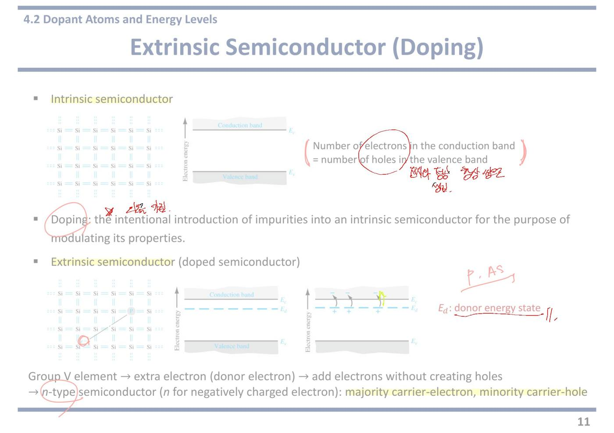
13쪽4.2 3족을 넣으면 p형 · 이온화 에너지
(제목 옆) [필기] Ga, B
교수님이 제목 옆에 Ga(갈륨), B(붕소) 라고 적으셨다. 앞 쪽의 P, As 와 짝을 이루는 표시다.
둘 다 3족 원소이고, 넣으면 p형이 된다.
앞 쪽과 이 쪽을 나란히 놓고 P·As ↔ n형 / Ga·B ↔ p형 을 통째로 외우는 것이 가장 안전하다.
(격자 그림) Si 하나가 B 로 바뀌어 있고 팔 하나가 비어 점선으로 그려져 있다. 오른쪽 그림에서는 이웃 전자가 그 빈 팔로 옮겨 오고, 원래 자리에 빈칸이 생긴다.
Ea: acceptor energy state
3족은 최외각 전자가 3개라 이웃 4개와 팔을 맞잡으려면 하나가 모자란다. 그 모자란 자리가 그림의 점선이다.
모자란 자리는 이웃의 전자를 받아들이려 한다. 그래서 acceptor(억셉터, 받는 쪽) 라고 부른다.
이웃 전자가 옮겨 오면 원래 있던 자리에 빈칸(정공)이 생긴다. 정공은 그렇게 만들어져 결정 안을 돌아다닌다.
전자를 받아들인 억셉터 원자는 − 로 하전된 이온이 되고, 격자에 박혀 못 움직인다.
Ea(억셉터 준위) 는 가전자대 천장 Ev 바로 위에 생긴 새 자리다.
Group III element → extra hole → add holes without creating electron
앞 쪽의 거울상이다. 정공만 늘고 전자는 안 는다.
정공이 생기긴 했지만 그 전자는 전도대로 올라간 것이 아니라 가전자대 안에서 옆으로 옮겨 갔을 뿐이다. 그래서 전도대 전자는 늘지 않는다.
이 "짝 없이 한쪽만 늘어난다"는 성질이 도핑의 전부다.
→ (p-type 에 동그라미) p-type semiconductor (p for positively charged hole) majority carrier-hole, minority carrier-electron (형광펜 강조)
교수님이 p-type 에 동그라미를 치셨다.
p 는 positive(양전하) 의 p 다. 정공을 양전하 알갱이로 취급하기 때문이다.
다수 캐리어는 정공, 소수 캐리어는 전자다. n형과 정확히 반대다.
여기서도 결정 전체는 중성이다. 정공이 는 만큼 − 이온이 늘었다.
Ionization energy (붉은 밑줄): the energy required to elevate the donor electron into the conduction band
교수님이 Ionization energy 에 붉은 밑줄을 그으셨다.
이온화 에너지 = 도너에 붙어 있는 전자를 전도대까지 끌어올리는 데 드는 에너지다. 값으로는 Ec − Ed 다.
왜 "이온화"인가. 전자가 떠나면 도너 원자가 + 이온이 되기 때문이다.
억셉터 쪽도 마찬가지로 Ea − Ev 가 그 역할을 한다.
왼쪽 밴드 그림 — Ec 실선 바로 아래에 Ed 점선이 있고, 그 사이를 붉은 양방향 화살표가 잇고 있다. 옆에 Ionization energy 라고 적혀 있다. 이 좁은 간격이 이온화 에너지다. 곡선 화살표는 도너 전자가 그 간격을 넘어 전도대로 올라가는 모습이고, 남은 자리에 + 표시가 붙는다.
가운데 표 — 도펀트별 이온화 에너지(eV)다. 실리콘 기준으로 도너: 인 0.045, 비소 0.05 / 억셉터: 붕소 0.045, 알루미늄 0.06 이다. 저마늄 기준은 0.010~0.013 으로 훨씬 더 작다. 교수님이 표 아래에 붉은 아래 화살표를 그으셨다. 저마늄 쪽이 값이 더 작다는 표시다.
Much less than the bandgap energy! (band gap energy of silicon: 1.12 eV) (1.12 eV 에 붉은 밑줄)
이 쪽에서 가장 중요한 비교다. 교수님이 1.12 eV 에 밑줄을 그으셨다.
이온화 에너지 0.045 eV 대 밴드갭 1.12 eV. 25배 차이다.
상온의 열에너지 kT = 0.0259 eV 와 견주면 이온화 에너지는 겨우 그 두 배 수준이다. 열만으로도 쉽게 넘는다.
반면 밴드갭 1.12 eV 는 kT 의 43배라 열로 넘기가 극히 어렵다.
담을 넘는 것과 문턱을 넘는 것의 차이다. 그래서 상온에서 도너는 거의 전부 이온화되고(완전 이온화), 진성 전자는 거의 안 생긴다.
[필기] intrinsic semi~
밴드갭 1.12 eV 옆에 intrinsic semi~ 라고 적으셨다. 1.12 eV 를 넘는 것은 진성 캐리어를 만드는 과정이라는 표시다.
두 가지 과정을 구분하라는 뜻이다. ① 0.045 eV 만 넘으면 되는 도너 이온화 → 도핑으로 생긴 전자 ② 1.12 eV 를 넘어야 하는 밴드 대 밴드 여기 → 진성 전자와 정공.
상온에서는 ①이 압도적으로 쉬워서 n₀ ≈ Nd 가 성립한다. 온도가 아주 높아지면 ②가 살아나면서 진성처럼 변한다.
★ 시험 포인트 — 교수님이 Ionization energy 와 1.12 eV 에 밑줄, p-type 에 동그라미, 표 아래 화살표, "intrinsic semi~" 를 표시하셨다.
① 이온화 에너지 = Ec − Ed ≈ 0.03~0.05 eV. 실리콘 밴드갭 1.12 eV 의 25분의 1. 이 비교가 완전 이온화의 근거다.
② 이 값이 17쪽 예제 4.7 에 0.045 eV 로 그대로 대입된다. "아직 도너에 남아 있는 전자의 비율을 구하라"는 문제에 필요한 숫자가 이 표에서 나온다.
③ 3족 = 억셉터 = p형, 5족 = 도너 = n형 을 원소 이름과 함께 다시 확인할 것.
강의 중 판서
판서 영상1 56:27~56:51 왼쪽 위에 “group III element”, 그 아래 Ⓑ, 화살표로 “Si crystal” 을 적었다.
“3족 원소(예: 붕소 B)를 실리콘 결정에 넣는다”는 이 쪽의 출발 조건이다. 앞 쪽의 “5족 → P” 와 짝을 이룬다.
판서 영상1 57:10~57:26 첫 격자 그림에서 B 옆 비어 있는 결합 자리에 표시하고, 둘째 그림에서 이웃 전자가 옮겨 간 뒤 남은 자리에 동그라미를 치고 “hole” 이라고 적었다.
정공이 B 자리가 아니라 전자가 떠난 이웃 자리에 생긴다는 것을 짚은 것이다.
판서 영상1 57:42~58:15 위쪽에 “Ⓑ → acceptor” 를 적고 Ea(억셉터 준위) 글자에 밑줄. 오른쪽 밴드 그림에서 Ea 에 올라앉은 전자들에 동그라미, Ev 쪽에 표시를 했다.
가전자대 전자가 Ea 로 조금만 올라가 붙잡히고, 그 자리에 + 정공이 남는 과정을 그림 위에서 가리킨 것이다.
판서 영상1 58:33~58:55 “p for positively charged hole” 에 밑줄·동그라미, majority carrier-hole 의 hole, minority carrier-electron 의 electron 에 각각 동그라미.
n형과 거울상으로 다수 = 정공, 소수 = 전자를 짚었다.
판서 영상1 59:24~59:51 정의 문장의 donor electron, conduction band 에 밑줄. 아래 밴드 그림의 도너 전자들과 Ec~Ed 간격에 빗금 동그라미를 겹쳐 치고, 옆에 “CB e” 라고 적었다.
이온화 에너지 = 도너 전자를 전도대 전자(CB e)로 만드는 데 드는 에너지라는 것을 그림에 연결한 것이다.
판서 영상1 60:01~61:10 표의 Si 열과 Ge 열을 세로로 길게 동그라미. 오른쪽 1.12 eV 에 동그라미를 치고 위에서 아래로 화살표 두 개. 그 아래에 “without doping → intrinsic semiconductor” 라고 적었다.
표의 값(0.01~0.06 eV)과 1.12 eV 를 눈으로 비교하라는 표시다. “도핑이 없으면(진성이면) 1.12 eV 를 넘어야 전자가 생긴다”는 뜻이다. PDF 필기의 “intrinsic semi~” 에 “without doping →” 이 앞에 붙어 뜻이 분명해졌다.
강의에서 한 말
강의 영상1 57:10~57:26 “There will be one empty space which cannot form a covalent bond with neighboring silicon atoms. This empty covalent bonding site can be easily occupied by a neighboring electron, making a hole somewhere in the crystal.” — 붕소는 최외각 전자가 3개라 결합 자리 하나가 빈다. 이웃 전자가 쉽게 그 자리를 채우고, 그 전자가 떠난 곳에 정공이 생긴다.
강의 영상1 57:32~57:42 “This process can happen with much lower energy compared to the case of hole creation in intrinsic semiconductors. So the energy level is located somewhere here, pretty close to the valence band.” — 진성에서 정공을 만드는 것(밴드갭 넘기)보다 훨씬 적은 에너지로 된다. 그래서 Ea 는 가전자대 바로 위에 그린다. 앞 쪽 도너 설명과 똑같은 논리다.
강의 영상1 57:52~58:15 “These energy states are called acceptor energy states because they easily accept electrons from the crystal. And accepting electrons from the crystal creates a hole as a result.” — 전자를 받아들이니(accept) 억셉터다. 받아들인 결과로 정공이 생긴다.
강의 영상1 59:01 “Majority carrier is the carrier with the higher concentration in the crystal, and minority carrier is the carrier with lower carrier concentration.” — 다수·소수 캐리어의 정의를 농도 기준으로 다시 말했다.
강의 영상1 59:35~59:51 “This ionization energy is defined as the energetic difference between the conduction band and the donor energy state. … It is typically very small.” — 이온화 에너지는 Ec 와 Ed 의 차이이고, 보통 아주 작다. 그래서 도너 전자는 적은 에너지로도 쉽게 전도대로 올라간다.
강의 영상1 60:48~61:37 “For intrinsic semiconductors, we need external energy larger than this band gap energy in order to produce conduction band electrons. … But with doping, because the donor level is located very close to the conduction band, we need a very small amount of energy.” — 진성은 1.12 eV 이상을 받아야 전도대 전자가 생긴다. 도핑하면 도너 준위가 전도대 바로 아래라 아주 작은 에너지면 된다.
강의 영상1 61:45~62:25 “This shows why doping is an effective method to increase the number of conduction band electrons … doping is a very effective method to modulate the electrical properties of semiconductors.” — 이 비교가 곧 도핑이 왜 효과적인가에 대한 답이라고 마무리했다.
자료에 없음 영상1 61:45~62:25 슬라이드는 “Much less than the bandgap energy!” 라는 비교만 적었다. 교수는 이 비교에서 결론을 끌어냈다. “그래서 도핑은 전도대 전자(또는 가전자대 정공)를 늘리는 효과적인 방법이고, 반도체의 전기적 성질을 조절하는 효과적인 방법이다.” 12쪽 도핑 정의의 “modulating its properties” 가 왜 가능한지를 에너지 크기로 설명한 셈이다.
자료에 없음 영상1 57:32 억셉터 준위가 가전자대 가까이 있는 이유를 “진성에서 정공 만들기보다 훨씬 적은 에너지로 된다”에서 끌어냈다. 준위의 위치 = 그 과정에 드는 에너지의 크기라는 읽는 법이다. 도너(Ec 바로 아래)와 억셉터(Ev 바로 위)가 거울상인 이유가 이것이다.
14쪽4.3 도핑하면 EF 가 움직인다
(Intrinsic 에 동그라미) Intrinsic semiconductors
왼쪽 그림이 기준점이다. 교수님이 Intrinsic 에 동그라미를 치셨다.
이 쪽은 식이 하나도 없고 그림 세 개만으로 4.3 절 전체를 설명한다. 그림을 읽는 것이 이 쪽의 전부다.
왼쪽 그림 (진성) — 세로축이 에너지다. 위쪽 파란 봉우리(넓이 = n₀)와 아래쪽 회색 봉우리(넓이 = p₀)의 크기가 같다. 붉은 가로선 EF 가 밴드갭 한가운데에 있다. 교수님이 두 봉우리 사이에 붉은 = 기호와 괄호를 그어 "이 둘이 같다"고 표시하셨다.
가운데 그림 (n형) — EF 를 나타내는 붉은 선이 EFi 점선보다 위에 있고, 위로 향한 붉은 화살표가 "올라갔다"를 표시한다. 그 결과 위쪽 파란 봉우리가 훨씬 커지고 아래쪽 회색 봉우리는 거의 사라진다.
수면이 올라가면 위쪽이 잠기고 아래쪽 빈칸이 줄어드는 것과 같다. 전자가 많아지고 정공이 줄어든 것이 그림 하나에 다 들어 있다.
오른쪽 그림 (p형) — 정확히 반대다. EF 가 EFi 보다 아래로 내려가고 아래 화살표가 그려져 있다. 아래쪽 회색 봉우리가 커지고 위쪽 파란 봉우리가 작아진다. 정공이 다수, 전자가 소수가 된 상태다.
Extrinsic semiconductors — n-type semiconductors / p-type semiconductors
두 그림에 붙은 이름표다.
여기서 반드시 잡아야 할 것은 인과의 방향이다. EF 가 먼저 올라가서 전자가 는 것이 아니다. 도핑으로 전자가 늘었기 때문에 그 개수를 설명하려면 EF 를 위로 올려 그릴 수밖에 없는 것이다.
EF 는 원인이 아니라 결과를 요약해 주는 눈금이다.
Doping → distribution of electrons and holes changes → The Fermi energy changes
쪽 아래에 적힌 이 한 줄이 결론이다. 화살표 방향 그대로 읽으면 된다.
도핑을 한다 → 전자와 정공의 분포가 바뀐다 → 페르미 준위가 이동한다.
이 순서가 곧 4.3 절의 뼈대이고, 다음 쪽에서 이것을 식으로 옮긴다.
강의 중 판서
판서 영상1 1:03:04 왼쪽(진성) 그림 위쪽 gc(E) 곡선 옆에 "DOS", 그 아래 × 표, 가운데 파란 점선 곡선에 동그라미를 치고 "fF(E)" 라고 적었다. 이어 읽으면 DOS × fF(E) 다.
DOS(상태밀도) = 에너지마다 전자가 앉을 자리가 몇 개인가. fF(E) = 그 자리가 실제로 채워질 확률. 둘을 곱한 것이 오른쪽 봉우리이고, 그 넓이가 n₀·p₀ 라는 3장 내용을 되살린 표시다. 그림의 봉우리가 어디서 나왔는지 잊지 말라는 뜻이다.
판서 영상1 1:03:36 왼쪽 그림의 EF 에 동그라미, 오른쪽 이름표 "Area = n₀" 와 "Area = p₀" 에도 각각 동그라미를 쳤다.
진성에서는 EF 가 가운데라서 두 넓이(전자 수, 정공 수)가 같다는 기준 상태를 먼저 박아 둔 것이다.
판서 영상1 1:04:06 가운데(n형) 그림에서 EF 와 EFi 에 동그라미를 치고 위로 향하는 화살표를 덧그렸다. 위쪽 파란 봉우리 안을 빗금으로 칠해 넓이가 커졌음을 강조했고, 아래쪽 거의 사라진 회색 봉우리에는 화살표와 별 모양 표시, "Area = p₀" 이름표에 동그라미를 쳤다.
EF 가 올라가면 위는 커지고 아래는 줄어든다는 두 변화를 한 그림에서 동시에 보라는 표시다.
판서 영상1 1:05:12 오른쪽(p형) 그림에서 EFi 와 EF 에 동그라미, 아래로 향하는 화살표. "Area = n₀", "Area = p₀" 이름표에 각각 동그라미.
n형과 거울처럼 반대라는 것을 같은 방식의 표시로 맞춰 보여 준 것이다.
판서 영상1 1:05:43 쪽 아래 결론 줄의 "distribution of electrons and holes changes" 아래에 물결 밑줄을 그었다.
도핑이 직접 바꾸는 것은 전자·정공의 분포이고, 페르미 준위는 그 결과로 따라 움직인다는 순서를 강조한 것이다.
강의에서 한 말
강의 영상1 1:02:33 “We will see how these electron and hole concentrations change when we employ doping, and a very important parameter for semiconductors, the Fermi energy level — we also see how this Fermi energy level changes.” — 도핑하면 전자·정공 농도가 어떻게 바뀌는지, 그리고 반도체에서 아주 중요한 값인 페르미 준위가 어떻게 바뀌는지 본다. 4.3 절의 목표를 두 가지로 못박은 말이다.
강의 영상1 1:03:04 “We multiply those two functions to obtain the distribution of electrons in the conduction band and holes in the valence band.” — 상태밀도와 페르미-디랙 분포, 두 함수를 곱해서 전도대 전자 분포와 가전자대 정공 분포를 얻었다. 판서의 "DOS × fF(E)" 가 바로 이 말이다.
강의 영상1 1:03:36 “We assume the Fermi energy level is located somewhere in the middle of the band gap because this is the intrinsic semiconductor, so we have an equal number of electrons in the conduction band and holes in the valence band.” — 진성 반도체라서 EF 를 밴드갭 가운데쯤에 두었다. 그래서 전자 수와 정공 수가 같다. 이것이 비교의 출발점이다.
강의 영상1 1:04:06 “For n-type, because we have more electrons, the Fermi energy level shifts upward ... higher probability in the conduction band that the state is occupied by an electron, and lower probability in the valence band that the state is occupied by a hole.” — n형은 전자가 많으니 EF 가 위로 옮겨 간다. 그러면 전도대 자리는 전자로 찰 확률이 커지고, 가전자대 자리는 정공이 있을 확률이 작아진다. EF 한 번 움직인 것이 두 밴드의 확률을 동시에 바꾼다는 설명이다.
강의 영상1 1:05:12 “We have a larger area under this graph and a smaller area in this graph, meaning a lower concentration of holes and a larger concentration of electrons.” — 위 봉우리 넓이는 커지고 아래 봉우리 넓이는 작아진다. 넓이가 곧 농도이므로 전자는 늘고 정공은 준다. 판서의 빗금이 이 "넓이"를 가리킨다.
강의 영상1 1:05:43 “By employing doping we can modulate the distribution of electrons and holes in the conduction band and in the valence band, and the Fermi energy also changes accordingly.” — 도핑으로 전자와 정공의 분포를 조절(modulate)할 수 있고, 페르미 준위도 그에 맞춰 바뀐다. 슬라이드 맨 아래 한 줄을 말로 풀어 준 것이다.
강의 영상1 1:06:12 “We look at how the concentrations change and how the Fermi energy level shifts when we employ doping; then we are going to find the mathematical expression.” — 이 쪽은 그림으로만 보고, 다음 쪽에서 식으로 옮긴다는 예고다.
자료에 없음 영상1 1:04:45 가전자대 쪽 설명을 교수는 "정공이 자리를 차지할 확률이 낮아진다"고 표현했다. 슬라이드에는 "정공 봉우리가 작다"는 그림만 있다. EF 가 올라가면 가전자대 자리는 전자로 더 잘 채워지고, 그만큼 빈자리(정공)가 생길 확률이 줄어든다는 뜻이다. 전자 확률과 정공 확률은 합이 1인 한 쌍이라는 점을 떠올리면 된다.
★ 시험 포인트 (강의) — 교수가 페르미 준위를 "very important parameter for semiconductor" 라고 1회 불렀다(영상1 1:02:33). 도핑하면 EF 가 어느 쪽으로 움직이는지(n형 위, p형 아래)와 그 결과 봉우리 넓이가 어떻게 바뀌는지를 그림으로 설명할 수 있어야 한다.
이 쪽에서 외울 방향 감각 — n형이면 EF 가 EFi 위, p형이면 아래. 그림을 못 그려도 이 한 줄만 있으면 부호를 틀리지 않는다. 다음 쪽에서 EF − EFi = kT·ln(n₀/ni) 를 만나면, n형에서 n₀ > ni 이니 ln 이 양수가 되어 EF > EFi 가 된다는 것으로 서로 확인할 수 있다.
오프라인 리뷰 수업에서 (실제 강의 · 한국어)
리뷰 수업 리뷰③ 02:33 ~ 03:50 이 이 쪽이다.
리뷰 리뷰③ 02:33 "요 EFi 가 정중앙에 위치하고 있다가 도핑을 하게 될 경우에는 EFi 에서 EF 로 — N 도핑을 할 경우에는 EFn, P 도핑을 할 경우 EFp 이렇게 표시를 하게 되는데" … "도핑을 하기 전에는 정중앙에 위치하고 있다가 도핑을 하면 할수록 컨덕션 밴드 쪽으로 붙게 될 거, 그쵸? P 도핑을 하면 할수록 밸런스 밴드 쪽으로 붙게 되고."
리뷰 리뷰③ 03:34 "그래서 페르미 에너지 위치만 보더라도 이 도핑이 얼마나 많이 됐냐, 뭐 이런 걸 알 수 있는 거죠.". 거꾸로 EF 위치를 주고 도핑 농도를 물을 수도 있다.
15쪽4.3 ni 기준으로 다시 쓴 n₀ · p₀ 와 n₀p₀ = ni²
n₀ = Nc·exp[−(Ec−EF)/kT] = Nc·exp[(−(Ec−EFi) + (EF−EFi))/kT]
아무것도 안 바꾸고 지수 안에 EFi 를 넣었다 뺐다 한 것뿐이다.
−(Ec−EF) 에 −EFi + EFi 를 끼워 넣으면 두 덩어리로 갈라진다.
왜 이런 짓을 하는가. Ec 대신 EFi 를 기준으로 재기 위해서다. 해발고도 대신 해수면 기준 고도로 바꾸는 것과 같다.
= Nc·exp[−(Ec−EFi)/kT]·exp[(EF−EFi)/kT], ni = Nc·exp[−(Ec−EFi)/kT]
갈라 놓은 두 지수 중 앞의 덩어리가 통째로 ni 다. 9쪽에서 그렇게 정의했다.
이름 하나로 묶으니 식이 갑자기 짧아진다.
이렇게 덩어리에 이름을 붙여 치우는 것이 공학 계산의 기본 수법이다.
= ni·exp[(EF−EFi)/kT]
4.6 절에서 계속 쓰게 될 형태다. 읽는 법은 이렇다.
지금 전자 농도는 진성일 때의 ni 에, EF 가 EFi 보다 얼마나 위인지에 따른 배수를 곱한 것이다.
EF = EFi 면 exp(0) = 1 이라 n₀ = ni. 도핑 안 한 상태로 돌아간다.
EF 가 EFi 보다 kT 만큼 위면 전자가 e배(2.7배). 0.0259 eV 올라갈 때마다 2.7배씩 는다는 뜻이다.
0.358 eV 쯤 올라가면 e13.8 ≈ 10⁶ 배가 된다. ni = 10¹⁰ 이 n₀ = 10¹⁶ 이 되는 것이 정확히 이 계산이다.
p₀ = ni·exp[−(EF−EFi)/kT]
정공 쪽의 짝이다. 지수 앞의 부호만 마이너스다.
EF 가 위로 갈수록 정공은 같은 비율로 줄어든다. 전자가 e배 늘면 정공은 1/e 배로 준다.
두 식을 곱하면 지수가 서로 지워진다는 것을 여기서 이미 눈으로 확인할 수 있다.
(왼쪽에 붉은 별표와 큰 괄호) If n₀ > p₀: n-type semiconductor, electron: majority carrier, hole: minority carrier, (동그라미) EF > EFi
If n₀ < p₀: p-type semiconductor, electron: minority carrier, hole: majority carrier, EF < EFi
교수님이 왼쪽에 붉은 별표를 그리고 두 줄을 괄호로 묶은 뒤, 오른쪽 EF 부등호 부분에 아주 크게 두 겹 동그라미를 치셨다. 이 쪽에서 표시가 가장 많은 자리다.
내용은 앞 쪽 그림을 부등호로 옮긴 것이다.
n형 → 전자가 다수 → EF 가 EFi 위
p형 → 정공이 다수 → EF 가 EFi 아래
세 가지(어느 형인가 / 어느 캐리어가 다수인가 / EF 가 위인가 아래인가)가 항상 한 묶음으로 움직인다. 하나만 알면 나머지 둘이 따라 나온다.
The (n₀p₀ 에 동그라미) n₀p₀ product
n₀p₀ = NcNv·exp[−(Ec−EF)/kT]·exp[−(EF−Ev)/kT] = NcNv·exp(−Eg/kT) = ni² (ni² 아래에 붉은 물결)
교수님이 n₀p₀ 에 동그라미, ni² 아래에 물결 밑줄을 치셨다.
9쪽에서 진성에 대해 했던 계산을 이번에는 도핑한 반도체에 대해 다시 한 것이다. 결과가 똑같이 나온다는 것이 요점이다.
지수를 더하면 EF 가 소거되어 −Eg/kT 만 남는다. 도핑을 어떻게 하든 곱은 안 변한다.
이것이 질량작용의 법칙이다. 소수 캐리어를 구하는 유일한 지름길이기도 하다.
The product of n₀ and p₀ is always a constant for a given semiconductor material at a given temperature
(This is valid only when the Boltzmann approximation is valid, E − EF ≫ kT)
앞줄은 결론, 괄호는 단서다. 이 괄호를 빠뜨리면 안 된다.
볼츠만 근사가 성립할 때만 n₀p₀ = ni² 가 맞다는 뜻이다.
볼츠만 근사는 7쪽에서 나왔다. EF 가 밴드 가장자리에서 kT 보다 훨씬 멀리 떨어져 있어야 한다.
도핑을 극단적으로 세게 해서 EF 가 Ec 에 붙거나 안으로 들어가면 이 조건이 깨지고, n₀p₀ = ni² 도 더는 못 쓴다. 그 상황이 바로 다음 쪽의 축퇴 반도체다.
★ 시험 포인트 — 이 쪽에 붉은 표시가 가장 많다. 별표 + 괄호(다수/소수 캐리어 두 줄), EF > EFi / EF < EFi 에 두 겹 동그라미, n₀p₀ 에 동그라미, ni² 에 물결. 챙길 것 넷이다.
① n₀ = ni·exp[(EF−EFi)/kT] 와 p₀ = ni·exp[−(EF−EFi)/kT] — 이 둘을 뒤집으면 4.6 절의 EF − EFi = kT·ln(n₀/ni) 가 된다. 사실상 같은 식이다.
② n₀p₀ = ni² — 다수 캐리어를 도핑 농도로 구하고, 소수 캐리어는 이 식으로. n형이면 p₀ = ni²/n₀.
③ n형 ↔ 전자 다수 ↔ EF > EFi 세 쌍이 한 묶음. 답안에 형과 부등호를 같이 적으면 부분 점수를 놓치지 않는다.
④ 단서 조건 — n₀p₀ = ni² 는 비축퇴(볼츠만 근사가 성립하는) 경우에만 쓸 수 있다. 축퇴 문제에서 이 식을 그대로 쓰면 감점이다.
강의 중 판서
판서 영상1 1:06:48 첫 줄 오른쪽 지수 안의 EFi 두 개에 각각 동그라미를 쳤다. 둘째 줄에서는 Ncexp[−(Ec−EFi)/kT] 덩어리와 exp[(EF−EFi)/kT] 를 따로따로 크게 동그라미, 오른쪽 ni 에도 동그라미.
EFi 를 넣었다 뺀 자리를 먼저 보여 주고, 갈라진 앞 덩어리가 곧 ni 의 정의와 똑같다는 것을 동그라미끼리 짝지어 보여 준 것이다.
판서 영상1 1:07:44 셋째 줄 앞에 붉은 글씨로 "n₀" 를 다시 적고, n₀ 식과 p₀ 식 아래에 밑줄. 오른쪽 작은 그림에서는 n형의 파란 봉우리·EF·화살표, p형의 회색 봉우리·EF 에 동그라미.
교수 말대로 "이 식이 그 그림의 넓이"라는 것을 식과 그림을 오가며 연결한 표시다.
판서 영상1 1:08:19 "If n₀ > p₀ / If n₀ < p₀" 두 줄에서 n₀·p₀ 에 표시, n-type semiconductor, majority carrier, minority carrier 등에 물결 밑줄, 끝의 EF > EFi, EF < EFi 에 동그라미를 치고 그 오른쪽에 별표를 여러 개 그렸다.
세 가지(형, 다수 캐리어, EF 위치)를 한 줄로 묶어 외우라는 표시다. 작년 필기(PDF)의 별표·동그라미와 같은 자리다.
판서 영상1 1:09:58 "The n₀p₀ product" 옆에 "n₀p₀ = ni²", "ni·ni", "Ec − Ev = Eg" 를 적었다. 곱 식 안의 두 EF 에는 사선을 그어 지워지는 것을 표시하고, NcNvexp(−Eg/kT) 를 상자로 묶었다.
진성에서는 n₀ = p₀ = ni 라서 곱이 ni·ni 라는 것, 그리고 도핑해도 EF 가 소거되어 Eg 만 남는다는 계산의 핵심 두 걸음을 칠판에 따로 적은 것이다.
판서 영상1 1:10:58 오른쪽에 "n₀p₀ = ni²" 를 크게 다시 쓰고 네모 상자로 두 번 두른 뒤 별표를 여러 개 그렸다. 아래 설명 줄에서는 n₀, p₀ 에 동그라미, "constant" 와 "given semiconductor material" 에 밑줄.
이 쪽에서 가장 크게 쓴 판서다. 교수가 "외워라"라고 한 식이 바로 이것이다. "재료와 온도가 정해지면 상수"라는 조건 부분에 밑줄을 친 것도 눈여겨볼 것.
강의에서 한 말
강의 영상1 1:06:48 “We start from the thermal equilibrium electron density we derived for intrinsic semiconductors, and this equation can be rewritten using the intrinsic Fermi energy level.” — 진성 때 구한 열평형 전자 농도 식에서 출발해, 진성 페르미 준위 EFi 를 써서 다시 쓴다. 새 식을 외우는 것이 아니라 있던 식을 기준점만 바꿔 다시 쓰는 것이다.
강의 영상1 1:07:15 “We can split this exponential function into two ... by the definition of the intrinsic concentration, the first term becomes ni.” — 지수 함수를 둘로 쪼개면 앞쪽은 ni 의 정의 그대로다. 그래서 n₀ = niexp[(EF−EFi)/kT] 가 된다.
강의 영상1 1:07:44 “This equation basically gives you the area under this graph — the total concentration of electrons or holes in the extrinsic semiconductor.” — 이 식은 결국 앞 쪽 그림의 봉우리 넓이, 곧 외인성 반도체의 전자(또는 정공) 총농도다. 식과 그림이 같은 것을 말한다는 연결이다.
강의 영상1 1:08:48 “Remember, this intrinsic Fermi energy is located somewhere in the middle. It's not exactly in the middle unless the effective mass of electron is the same as the effective mass of hole.” — EFi 는 밴드갭 "가운데쯤"이지 정확히 가운데는 아니다. 전자와 정공의 유효질량이 같을 때만 정확히 가운데다.
강의 영상1 1:09:30 “The location of the Fermi energy is really important. For n-type it's located above the intrinsic Fermi energy, and for p-type below.” — 페르미 준위의 위치가 정말 중요하다. n형은 EFi 위, p형은 아래.
강의 영상1 1:10:10 “For intrinsic semiconductors n₀p₀ becomes ni² because n₀ is ni and p₀ is also ni ... this EF cancels out, and Ec − Ev becomes the band-gap energy.” — 진성이면 둘 다 ni 라 곱이 ni². 도핑한 경우는 두 지수에서 EF 가 서로 지워지고 Ec − Ev = Eg 만 남는다. 판서의 "ni·ni" 와 사선이 이 대목이다.
강의 영상1 1:10:58 “The product of n₀ and p₀ is still ni², which is constant for a given semiconductor at a given temperature ... it can be applied to intrinsic semiconductors and also extrinsic semiconductors as well.” — 도핑을 해도 곱은 여전히 ni². 재료와 온도가 정해지면 상수다. 진성에도 외인성에도 똑같이 쓴다.
강의 영상1 1:11:31 “This relationship is very practical when you try to find one of the concentrations when you know the other one.” — 둘 중 하나를 알면 나머지 하나를 바로 구할 수 있어서 아주 실용적이다.
자료에 없음 영상1 1:08:48 EFi 가 정확히 가운데가 아닌 이유 — 전자와 정공의 유효질량이 다르기 때문이다. 유효질량이 다르면 Nc 와 Nv 가 달라지고, 두 농도를 같게 맞추는 EFi 자리가 가운데에서 조금 비켜난다. 슬라이드 그림에는 그냥 가운데처럼 그려져 있다.
자료에 없음 영상1 1:11:40 쓰는 법의 예 — "n₀ 를 알고 싶은데 p₀ 를 안다면 이 관계로 n₀ 를 구하고, 거꾸로도 된다." 실제 문제에서는 도핑 농도로 다수 캐리어를 먼저 정하고, 소수 캐리어 = ni² ÷ 다수 캐리어 로 구한다.
자료에 없음 영상1 1:11:20 교수는 말로 “n₀p₀ = ni² for all kinds of semiconductors” 라고 했다. 그런데 슬라이드 맨 아래 괄호에는 "볼츠만 근사가 성립할 때만" 이라는 단서가 붙어 있다. 강의에서는 이 괄호를 따로 읽지 않았다. 다음 쪽의 축퇴 반도체처럼 도핑이 극단적이면 이 식이 깨지므로, "모든 반도체"는 "비축퇴 반도체 모두"로 읽어야 한다.
★ 시험 포인트 (강의) — n₀p₀ = ni² 에 대해 "very practical"을 2번(영상1 1:11:31, 영상1 1:11:48), 이어서 "you need to memorize this relationship"을 1번 말했다(영상1 1:11:48~영상1 1:11:57). 판서에서도 가장 크게 상자·별표를 쳤다. 또 "the location of the Fermi energy is really important"(1번, 영상1 1:09:30) — n형 EF > EFi, p형 EF < EFi.
내 굿노트 필기
내 굿노트 필기 오른쪽에 남색으로 Nc exp(−(Ec−EF)/kT) = Nc exp(−((Ec−EFi) − (EF−EFi))/kT) → exp((EF−EFi)/kT) 를 한 줄씩 풀어 썼다. 지수를 둘로 쪼개 앞부분을 ni 로 묶는 과정, 즉 n₀ = ni exp((EF−EFi)/kT) 유도다. 자주 쓰는 "EF−EFi = kT ln(n₀/ni)"가 이 식을 뒤집은 것이다. 왼쪽 "If n₀ > p₀ …" 앞의 빨간 별표 두 개는 교수님 표시다.
내 필기만 진하게 표시한 쪽 이미지 보기
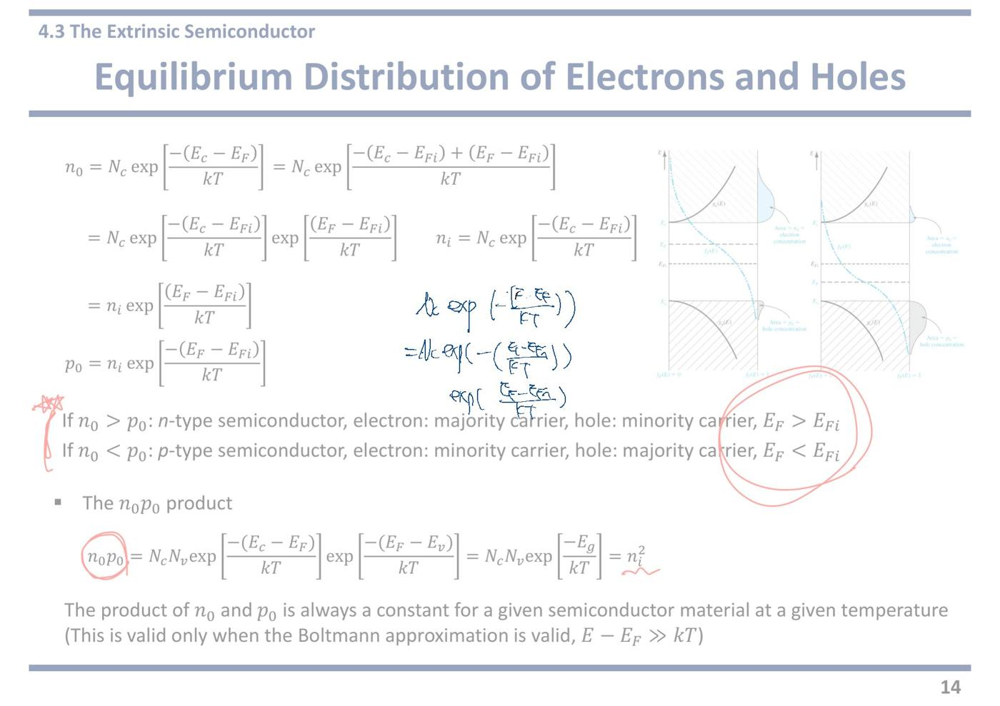
16쪽4.3 축퇴(degenerate) 반도체 — 도핑을 계속 높이면
(Degenerate 에 크게 동그라미) Degenerate and Nondegenerate Semiconductors
교수님이 제목의 Degenerate 에 크게 동그라미를 치셨다. 이 쪽 전체가 시험 대상이라는 표시다.
degenerate(축퇴) 는 낯선 말이지만 뜻은 단순하다. 도핑을 너무 세게 해서 반도체가 더 이상 반도체처럼 안 굴고 금속처럼 구는 상태다.
지금까지 세운 식(볼츠만 근사, n₀p₀ = ni², n₀ ≈ Nd)이 전부 비축퇴 상태를 전제로 한 것이다.
Nondegenerate semiconductors
The concentration of dopant atoms (impurities) ≪ the concentration of host atoms (semiconductor)
비축퇴 = 지금까지 다룬 보통의 경우다.
≪ 는 "압도적으로 작다"는 기호다. 도펀트 개수가 원래 결정 원자 개수보다 압도적으로 적다는 뜻이다.
실리콘 원자는 1 cm³ 에 5×10²² 개 있다. 도핑을 10¹⁶ 으로 해도 천만 분의 일 수준이다.
운동장에 사람이 오천만 명 서 있는데 그중 다섯 명만 다른 옷을 입고 있는 셈이다. 서로 마주칠 일이 없다.
Discrete & non interacting donor (or acceptor) states
그래서 도너 자리들이 따로따로 떨어져 있고 서로 영향을 주지 않는다.
discrete(이산적) = 뚝뚝 떨어진 낱개. 밴드 그림에서 점선 한 줄로 그려지는 이유가 이것이다. 모든 도너가 똑같은 에너지 하나를 갖는다.
non interacting(상호작용 없음) = 서로 너무 멀어서 전자 구름이 안 겹친다.
[필기] 상호작용 X → Band X [필기] P⁺ (동그라미, 격자의 P 원자를 화살표로 가리킴)
교수님이 격자 그림 위에 직접 적으신 요약이다.
상호작용이 없으니 밴드도 안 생긴다. 낱개 준위 하나로 남는다는 뜻이다.
옆의 P⁺ 는 전자를 내보낸 인(P) 원자가 + 이온으로 남는다는 표시다. 이 + 이온은 격자에 박혀 못 움직이므로 전류를 나르지 않는다.
이 필기가 다음 항목과 정확히 대비된다.
Degenerate semiconductors
The concentration of dopant atoms (impurities) ≈ the effective density of states
축퇴의 정의다. 도펀트 농도가 유효 상태밀도 Nc(≈10¹⁹ cm⁻³) 급으로 올라간 상태다.
기준이 결정 원자 수가 아니라 Nc 라는 점이 중요하다. 앉을 자리 수만큼 도펀트를 넣었다는 뜻이기 때문이다.
보통 도핑은 10¹⁵~10¹⁷ 인데, 10¹⁹ 을 넘어가면 축퇴로 본다.
도펀트가 많아지면 도펀트끼리의 거리가 가까워진다. 여기서부터 이야기가 달라진다.
(붉은 괄호) Band & interacting donor (or acceptor) states
→ Overlapping with the conduction (or valence) bands
교수님이 이 두 줄을 붉은 괄호로 묶으셨다. 축퇴가 일어나는 과정이 여기 다 들어 있다.
① 도펀트가 가까워지면 서로 상호작용한다. 전자 구름이 겹친다.
② 겹치면 같은 에너지에 있을 수 없다는 규칙(파울리 배타 원리) 때문에 준위가 위아래로 조금씩 갈라진다.
③ 도펀트가 아주 많으면 갈라진 준위가 촘촘히 모여 하나의 밴드가 된다.
④ 그 밴드가 넓어져 전도대(또는 가전자대)와 겹쳐 버린다.
사람 하나가 내는 소리는 낱개로 들리지만, 수만 명이 모이면 개별 목소리가 사라지고 하나의 웅성거림이 되는 것과 같다.
EF lies in the conduction band → degenerate n-type semiconductor
EF lies in the valence band → degenerate p-type semiconductor
축퇴의 판정 기준이다. 간단하다.
EF 가 밴드갭 안이 아니라 전도대 "안"에 들어가 있으면 축퇴 n형이다.
EF 가 가전자대 "안"에 있으면 축퇴 p형이다.
왜 그렇게 되는가. 도핑을 세게 하면 전자가 너무 많아져서, 그 개수를 설명하려면 수면(EF)을 전도대 안까지 올려야 하기 때문이다.
그림에서 EF 아래 전도대 부분이 파랗게 칠해져 있고 Filled states (electrons) 라고 적혀 있다. 전도대 밑부분이 전자로 꽉 찬 상태다.
[필기] act as metal. (밑줄)
교수님이 밑줄까지 그어 적으신 결론이다. 축퇴 반도체는 금속처럼 행동한다.
왜인가. 금속의 정의가 바로 EF 가 밴드 안에 있어서 바로 위에 빈 자리가 널려 있는 상태다. 전압을 조금만 걸어도 전자가 즉시 움직인다.
축퇴 반도체도 같은 상황이 되었으므로 전기가 아주 잘 통한다. 온도를 낮춰도 캐리어가 안 줄어든다.
실제로 소자의 금속 배선과 닿는 부분(오믹 접촉)은 일부러 축퇴가 되도록 세게 도핑한다.
주의할 점 — 이 상태에서는 볼츠만 근사가 깨지므로 n₀ = Ncexp[...] 도, n₀p₀ = ni² 도 못 쓴다. 페르미-디랙 분포를 그대로 써야 한다.
★ 시험 포인트 — 교수님이 제목의 Degenerate 에 큰 동그라미, 격자 그림에 "상호작용 X → Band X", Band 항목에 붉은 괄호, "act as metal" 에 밑줄을 남기셨다. 서술형으로 자주 나온다.
물어보는 것은 "과정"이다. 답안은 이 순서로 쓴다.
① 도핑 농도를 계속 높인다 → ② 도펀트 원자 사이 거리가 가까워져 서로 상호작용한다 → ③ 낱개 준위가 갈라져 band 를 이룬다 → ④ 그 band 가 전도대(또는 가전자대)와 겹친다 → ⑤ EF 가 밴드 안으로 들어간다 → ⑥ 금속처럼 행동한다.
덧붙여 비축퇴 조건(Nd ≪ Nc)이 깨지므로 볼츠만 근사와 n₀p₀ = ni² 를 쓸 수 없다는 점까지 적으면 완전한 답이다.
강의 중 판서
판서 영상1 1:12:09 제목의 Degenerate 와 Nondegenerate 에 각각 동그라미, 아래 "Nondegenerate semiconductors" 에 크게 동그라미를 쳤다.
이 쪽이 두 경우를 나란히 비교하는 쪽이라는 것을 먼저 보여 준 것이다.
판서 영상1 1:12:43 비축퇴 정의 줄에서 "dopant atoms" 밑줄, "(impurities)", "≪", "host atoms", "(semiconductor)" 에 동그라미.
host atoms 가 곧 반도체(실리콘) 원자라는 것, 그리고 비교 기호가 "훨씬 작다(≪)"라는 것을 짚었다.
판서 영상1 1:13:03 격자 그림의 P 원자에 겹동그라미를 치고, 멀리 떨어진 곳에 또 하나의 P 를 동그라미로 그린 뒤 바깥으로 화살표를 빼 "P" 라고 적었다. 가운데 밴드 그림에서는 Ed 점선 위에 작은 고리를 한 줄로 그렸다.
도펀트 두 개가 서로 멀리 떨어져 있다는 것, 그래서 도너 준위가 하나하나 낱개로 존재한다는 것을 그림으로 보인 것이다.
판서 영상1 1:13:26 "Discrete & non interacting" 아래에 서로 떨어진 빈 네모 두 개, 그 오른쪽에 빗금으로 꽉 칠한 네모를 그리고 아래 "Band & interacting" 쪽으로 화살표를 이었다.
떨어져 있는 낱개 준위(빈 네모)가 도펀트가 많아지면 서로 붙어 하나의 띠(빗금 네모 = band)가 된다는 변화를 도식으로 보인 것이다.
판서 영상1 1:13:43 "Degenerate semiconductors" 에 동그라미, "the effective density of states" 에 밑줄, 이쪽으로 향하는 화살표 몇 개. 아래 두 그림의 EF 에 동그라미를 치고 화살표로 각각 전도대 안, 가전자대 안을 가리켰다.
축퇴의 기준은 결정 원자 수가 아니라 유효 상태밀도라는 것, 그리고 EF 가 밴드 "안"으로 들어간다는 것이 이 판서의 요점이다.
판서 영상1 1:15:19 오른쪽 아래에 "semiconductor → metal" 이라고 적었다.
작년 필기의 "act as metal" 과 같은 결론이다. 도핑을 아주 세게 하면 반도체가 금속처럼 변한다는 한 줄 요약이다.
강의에서 한 말
강의 영상1 1:12:09 “This concept is related to doping concentration in extrinsic semiconductors ... depending on the doping concentration, it can be classified either degenerate or non-degenerate.” — 축퇴·비축퇴는 도핑 농도로 갈린다. 같은 외인성 반도체라도 얼마나 많이 넣었느냐에 따라 이름이 달라진다.
강의 영상1 1:12:43 “The concentration of dopant atoms is greatly lower than the concentration of host atoms. Here, host atoms means the semiconductor atoms.” — 비축퇴는 도펀트가 반도체 원자보다 훨씬 적은 경우다. host atom(주인 원자) = 반도체 원자.
강의 영상1 1:13:03 “The distance between impurities is very long ... they don't know each other, so they don't interact with each other.” — 불순물끼리 거리가 아주 멀어서 서로 "모르는 사이"다. 그래서 상호작용하지 않는다.
강의 영상1 1:13:26 “They have discrete, non-interacting donor or acceptor states. Those states don't form a band structure.” — 도너·억셉터 준위가 낱개로 떨어져 있고 띠(band)를 만들지 않는다.
강의 영상1 1:13:51 “The concentration of dopant atoms is comparable to the effective density of states ... then donor or acceptor states interact with each other and form a band, similar to the formation of the conduction or valence band.” — 축퇴는 도펀트 농도가 유효 상태밀도와 맞먹을 만큼 높은 경우다. 도펀트가 가까워져 서로 영향을 주고, 전도대·가전자대가 생기던 것과 같은 원리로 띠를 만든다.
강의 영상1 1:14:28 “In the case of a degenerate n-type semiconductor, the Fermi energy level shifts into the conduction band ... for p-type, it actually goes into the valence band.” — 축퇴 n형은 EF 가 전도대 안으로, 축퇴 p형은 가전자대 안으로 들어간다.
강의 영상1 1:15:37 “Remember how the band structure of a metal looks like: either overlapped two bands or a half-filled band ... this looks pretty similar, so it can conduct a very high level of current, similar to a metal.” — 금속의 밴드 구조를 떠올려라. 두 밴드가 겹치거나 밴드가 반만 차 있다. 축퇴 반도체의 모양이 이와 비슷해서 금속처럼 전류가 아주 잘 흐른다.
강의 영상1 1:16:10 “In most cases we would like to have non-degenerate semiconductors because they have semiconducting properties. But of course we can use degenerate semiconductors.” — 보통은 반도체다운 성질이 필요해서 비축퇴를 쓴다. 그래도 축퇴 반도체도 쓸 곳이 있다.
자료에 없음 영상1 1:13:11 비유 — 멀리 떨어진 두 인(P) 원자를 "서로 모르는 사이(they don't know each other)"라고 했다. 모르는 사이라 영향을 주고받지 않고, 그래서 낱개 준위로 남는다.
자료에 없음 영상1 1:15:40 3장 복습 — 금속의 밴드 구조는 두 가지 중 하나다. ① 두 밴드가 서로 겹친다. ② 밴드 하나가 반쯤만 차 있다. 어느 쪽이든 채워진 전자 바로 위에 빈자리가 붙어 있어서 전자가 쉽게 움직인다. 축퇴 반도체에서 EF 가 밴드 안에 들어간 모습이 ②와 닮았다.
자료에 없음 영상1 1:16:22 응용 — 축퇴 반도체는 실제로 MOSFET 의 게이트 전극으로 쓰인다. MOSFET(모스펫) = 오늘날 칩 속 트랜지스터의 기본형이다. 게이트는 전압을 걸어 주는 "손잡이" 전극이라 금속처럼 전기가 잘 통해야 하는데, 아주 세게 도핑한 실리콘이 그 역할을 한다. 교수는 "자세한 것은 뒤에서 MOSFET 을 다룰 때 말하겠다"고 했다.
자료에 없음 영상1 1:16:10 선택 기준 — 대부분의 소자는 비축퇴 반도체를 원한다. 반도체의 핵심은 전기가 통하기도 하고 안 통하기도 하도록 조절할 수 있다는 점인데, 축퇴되면 금속처럼 늘 잘 통해 버리기 때문이다.
17쪽4.4 도너·억셉터 자리가 채워질 확률
The Pauli exclusion principle also applies to the donor and acceptor states
파울리 배타 원리 = 같은 자리에 전자 둘이 똑같은 상태로 들어갈 수 없다는 규칙이다. 극장 좌석 하나에 한 명만 앉는 것과 같다.
also(역시) 라는 단어가 중요하다. 밴드 안 상태에만 적용되는 것이 아니라 도너·억셉터가 만든 자리에도 똑같이 적용된다는 뜻이다.
그래서 도너 자리가 채워질 확률도 페르미-디랙 분포로 계산한다. 다만 모양이 조금 다르다.
Fermi-Dirac distribution function: the probability that a quantum state will be occupied by an electron
fF(E) = 1/[1 + exp((E−EF)/kT)]
비교용으로 옆 상자에 다시 적어 둔 원래 형태다.
이것이 밴드 안의 보통 자리에 쓰는 확률이다.
다음 줄의 도너 식과 어디가 다른지만 보면 된다.
nd = Nd / [1 + ½·exp((Ed−EF)/kT)]
도너 준위에 아직 전자가 앉아 있는 농도다. 기호부터 푼다.
Nd = 넣어 준 도너 원자의 총 개수, Ed = 도너 준위의 에너지, nd = 그중 아직 전자를 붙들고 있는 것의 개수.
원래 fF 와 다른 곳은 exp 앞의 ½ 하나뿐이다.
이 ½ 은 스핀 때문이다. 도너 자리는 전자를 위 스핀 또는 아래 스핀으로 받을 수 있지만 둘을 동시에 받지는 못한다. 들어가는 길은 두 갈래인데 정원은 한 명인 셈이라 확률이 이렇게 보정된다.
계산에서는 ½ 을 빠뜨리지 않는 것만 지키면 된다.
nd: the density of electrons occupying the donor level
Nd: the concentration of donor atoms
Ed: the energy of the donor level
기호 정의를 그대로 옮긴 것이다.
헷갈리기 쉬운 지점은 nd 는 전도대 전자가 아니라 아직 도너에 붙어 있는 전자라는 점이다.
전도대 전자는 n₀, 도너에 남은 전자는 nd. 둘은 완전히 다른 것이다.
nd = Nd − Nd+, Nd+: the concentration of ionized donors
단순한 뺄셈인데 의미가 크다.
Nd+(이온화된 도너) = 전자를 내보내고 + 이온이 된 도너의 개수.
도너는 둘 중 하나다. 아직 전자를 붙들고 있거나(nd), 내보냈거나(Nd+). 그래서 둘을 더하면 전체 Nd 다.
이 관계가 19쪽의 전하 중성 조건에서 그대로 쓰인다.
pa = Na / [1 + (1/g)·exp((EF−Ea)/kT)] = Na − Na−
억셉터 쪽 짝이다. 구조가 똑같고 지수의 순서가 뒤집혔다. Ed−EF 였던 것이 EF−Ea 가 되었다.
pa = 억셉터 준위에 아직 전자가 안 들어와서 정공으로 남아 있는 것의 개수.
Na− = 전자를 받아들여 − 이온이 된 억셉터의 개수. 여기서도 Na = pa + Na− 다.
pa: the density of holes occupying the acceptor level / Na: the concentration of acceptor atoms / Ed: the energy of the acceptor level / Na−: the concentration of ionized acceptors / g: a degeneracy factor
기호 목록이다. 슬라이드에 Ed: the energy of the acceptor level 이라고 적혀 있는데 Ea 의 오기다. 억셉터 준위는 Ea 다.
g(degeneracy factor, 축퇴 인자) = 도너 식의 ½ 에 해당하는 자리 보정 숫자다. 억셉터는 가전자대 구조 때문에 값이 더 복잡해서 문자로 남겨 두었다. 실리콘 억셉터는 보통 g = 4 를 쓴다.
여기서의 degeneracy 는 앞 쪽의 축퇴 반도체와 이름만 같고 다른 뜻이다. 여기서는 "한 에너지에 겹쳐 있는 상태의 가짓수"를 말한다. 헷갈리기 쉬운 자리다.
강의 중 판서
판서 영상1 1:16:39 쪽 왼쪽 위에 Ec 선 바로 아래 작은 고리 다섯 개(도너 준위의 전자)를 그리고 "Ec, Ed" 라고 적었다. 한참 아래에 "EV" 선.
도너 준위가 전도대 바로 밑에 붙어 있어 에너지 차가 아주 작다는, 앞 절의 가정을 다시 그려 놓고 출발한 것이다.
판서 영상1 1:17:23 "Pauli exclusion principle" 에 밑줄. 오른쪽 Fermi-Dirac 상자의 정의 문장 "the probability that a quantum state will be occupied by an electron" 에도 밑줄.
파울리 원리가 도너 자리에도 적용되므로, 도너 자리가 채워질 확률도 이 정의를 빌려 쓴다는 연결이다.
판서 영상1 1:18:08 nd 식에서 nd, Nd 에 겹동그라미, ½ 에 동그라미. Nd 옆에 "= total # of electrons introduced by impurities" 라고 적었다. 아래 기호 정의 두 줄(nd, Nd)에 밑줄.
원래 페르미-디랙 식과 다른 곳이 ½ 하나라는 것, 그리고 Nd 를 "도너 원자 수"가 아니라 "불순물이 넣어 준 전자의 총수"로 읽으라는 것이 요점이다.
판서 영상1 1:18:39 오른쪽 위에 상자를 그리고 그 안에 CB(전도대), 전도대에 올라간 전자 몇 개, Ec·Ed, 도너 준위의 동그라미 다섯 개(일부는 비어 있음), "5 P atoms", "3P → 3P⁺", EV 를 적었다.
인 원자 5개 중 3개가 전자를 내보내 P⁺ 가 되고 2개는 전자를 붙들고 있는 상황을 그린 것이다. 아래 nd = Nd − Nd+ 의 숫자 예가 된다.
판서 영상1 1:21:36 가운데에 P 와 Si 를 원으로 나란히 그리고 전자(e)가 빠져나가는 화살표, 그 결과로 "P⁺" 라고 적었다.
"이온화된 도너"가 무엇인지 — 전자를 하나 내준 인 원자가 + 이온으로 남는다는 것 — 을 그림으로 보여 준 것이다.
판서 영상1 1:22:13 nd = Nd − Nd+ 의 세 기호에 각각 동그라미를 치고, 아래에 숫자 2 = 5 − 3 을 적었다. "the concentration of ionized donors" 에 밑줄, 아래 억셉터 줄의 "acceptor state" 에도 밑줄.
뺄셈 식을 개수 예로 바로 확인하게 한 것이다.
강의에서 한 말
강의 영상1 1:16:39 “We assumed that the energy difference between the conduction band and the donor state is so small, so most electrons from the donor state are donated to the conduction band ... now we will find a mathematical expression to calculate the actual ratio.” — 지금까지는 도너 준위가 전도대에 아주 가까워 전자가 거의 다 넘어간다고 "가정"만 했다. 이제 실제로 몇 %가 넘어가는지 식으로 계산한다.
강의 영상1 1:17:23 “An important factor here is that the Pauli exclusion principle also applies to the donor state.” — 여기서 중요한 점은 파울리 배타 원리가 도너 자리에도 똑같이 적용된다는 것이다. 그래서 도너 자리의 채움 확률도 페르미-디랙 꼴로 쓸 수 있다.
강의 영상1 1:18:04 “Different from the original Fermi-Dirac distribution function, we have 1 over 2 here because of the electron spin.” — 원래 페르미-디랙 식과 달리 ½ 이 붙는데, 전자 스핀 때문이다.
강의 영상1 1:18:14 “Small nd describes the number of electrons occupying the donor level, which means the number of donor electrons not donated to the conduction band but remaining in the donor level.” — 작은 nd 는 도너 준위에 남아 있는 전자 수다. 전도대로 넘어가지 않은 전자다.
강의 영상1 1:19:16 “Because each impurity atom introduces one electron to the crystal, Nd represents the total number of electrons introduced by the impurity.” — 인(5족) 원자 하나가 전자 하나씩을 결정에 넣어 주므로, 큰 Nd(도너 원자 농도)는 곧 불순물이 넣어 준 전자의 총수와 같다.
강의 영상1 1:20:22 “By multiplying the total number of electrons introduced by impurity and the probability function, we can obtain the number of electrons occupying the donor state.” — 전자 총수(Nd)에 "도너 자리에 남아 있을 확률"을 곱하면 도너에 남은 전자 수 nd 가 된다. nd 식의 구조가 "총수 × 확률"이라는 설명이다.
강의 영상1 1:21:29 “Once a donor atom donates an electron to the crystal, it becomes an ionized donor ... it becomes P plus.” 이어서 “We employ five phosphorus atoms ... three electrons are donated to the conduction band, so three phosphorus atoms become three P plus ... five minus three, so two electrons remain in the donor level.” — 도너가 전자를 내주면 이온화된 도너(Nd+), 인이라면 P⁺ 가 된다. 인 5개 중 3개가 전자를 내보내면 Nd = 5, Nd+ = 3, 남은 nd = 2. 뺄셈 식을 개수로 확인한 예다.
강의 영상1 1:23:29 “We can also find a similar expression for the acceptor state in the case of p-type semiconductors.” — 억셉터 쪽도 같은 방식으로 식을 세운다. 억셉터 식은 설명 없이 이 한마디로 넘어갔다.
자료에 없음 영상1 1:22:13 숫자 예 "5 − 3 = 2" — 인 원자 5개를 넣었는데 3개만 전자를 내보냈다면, 이온이 된 것 3개(Nd+), 아직 전자를 가진 것 2개(nd). 슬라이드에는 기호만 있고 이 예는 없다. 기호가 헷갈리면 이 5개짜리 그림으로 돌아가면 된다.
자료에 없음 영상1 1:19:26 Nd 의 다른 읽기 — 슬라이드는 Nd 를 "도너 원자 농도"라고만 적었다. 교수는 5족 원자 하나가 전자 하나를 가져온다는 점을 들어 "불순물이 넣어 준 전자의 총수"로도 읽으라고 했다. 이렇게 읽어야 "총수 × 확률 = 남은 전자" 라는 nd 식의 뜻이 바로 보인다.
★ 시험 포인트 (강의) — "An important factor here" 라고 1번 짚은 것이 파울리 배타 원리가 도너 자리에도 적용된다는 점이다(영상1 1:17:23). 그 결과로 식에 붙는 ½(스핀 때문) 을 판서에서도 동그라미 쳤다. nd 식에서 ½ 을 빠뜨리지 말 것.
이 쪽 한 줄 요약 — 도너·억셉터 자리에도 페르미-디랙 확률을 쓰되 스핀 때문에 ½ 또는 1/g 이 붙는다. 그리고 Nd = nd + Nd+, Na = pa + Na− 라는 나눔이 다음 쪽들의 계산 전부에 쓰인다. 이 쪽에는 붉은 표시가 없다. 다음 쪽의 계산을 위한 준비 단계다.
18쪽4.4 완전 이온화 · 예제 4.7
(Fraction of unionized donors 에 동그라미) Fraction of unionized donors
교수님이 제목 줄에 동그라미를 치셨다. 이 쪽에서 구하려는 것이 무엇인지 못박은 것이다.
unionized donors(이온화되지 않은 도너) = 아직 전자를 안 내보낸 도너.
fraction(비율) = 전체 중 몇 %인가.
즉 "넣어 준 도너 중 몇 %가 아직 전자를 붙들고 있나" 를 계산한다. 답이 아주 작게 나오면 완전 이온화 가정이 정당해진다.
When Ed − EF ≫ kT, we can use the Boltzmann approximation,
nd (≈ 에 동그라미) ≈ Nd/[½·exp((Ed−EF)/kT)] = 2Nd·exp[−(Ed−EF)/kT]
7쪽에서 쓴 것과 똑같은 근사다. 교수님이 근사 기호 ≈ 에 동그라미를 치셨다.
Ed − EF 가 kT 보다 훨씬 크면 exp 항이 커져서 분모의 1 을 버릴 수 있다.
버리고 나면 분모에 ½ 만 남고, 이것이 분자로 올라가면서 2Nd 가 된다. 앞의 2 는 그렇게 생긴 것이다.
교수님이 이 줄 아래에 붉은 사선을 그어 1 을 버린 자리를 표시하셨다.
n₀ = (Nc 에 동그라미) Nc·exp[−(Ec−EF)/kT]
비교 대상이다. 전도대로 올라간 전자의 개수다. 교수님이 Nc 에 동그라미를 치셨다.
이제 두 숫자가 손에 있다. 도너에 남은 것(nd) 과 전도대로 간 것(n₀).
비율을 만들려면 nd ÷ (nd + n₀) 를 계산하면 된다.
(nd/(nd+n₀) 에 동그라미) nd/(nd+n₀) = 2Ndexp[−(Ed−EF)/kT] / {2Ndexp[−(Ed−EF)/kT] + Ncexp[−(Ec−EF)/kT]}
두 식을 그대로 넣은 것이다. 교수님이 좌변에 동그라미를 치셨다.
보기에는 복잡하지만 분자·분모를 분자로 나누면 확 줄어든다.
그 과정에서 EF 가 완전히 사라진다. 두 지수에 똑같이 들어 있어 약분되기 때문이다. EF 를 모르고도 계산할 수 있게 되는 것이 이 조작의 목적이다.
(붉은 상자로 묶음) = 1 / {1 + (Nc/2Nd)·exp[−(Ec−Ed)/kT]} Ec − Ed: ionized energy
정리한 최종 형태다. 교수님이 붉은 상자로 크게 묶으셨다.
남은 것은 세 가지뿐이다. Nc, Nd, 그리고 이온화 에너지 Ec − Ed. EF 는 필요 없다.
식의 성격을 읽어 보면 이렇다. 이온화 에너지가 작을수록, 도핑 농도 Nd 가 클수록 분모가 커져 이 비율이 작아진다. 즉 더 완전하게 이온화된다.
12쪽 표에서 봤듯 Ec − Ed 가 0.045 eV 로 아주 작다. 그래서 답이 작게 나올 것이 이미 예상된다.
[Example 4.7] Determine the fraction of total electrons still in the donor states at T = 300 K. Consider phosphorus doping in silicon, for T = 300 K, at a concentration of Nd = 10¹⁶ cm⁻³.
문제를 읽는 법이다.
phosphorus(인, P) 라고 했으니 5족 → 도너 → n형이다. 그리고 12쪽 표에서 실리콘 속 인의 이온화 에너지는 0.045 eV 다.
Nd = 10¹⁶ cm⁻³ 는 아주 흔한 도핑 농도다.
상온이므로 Nc = 2.8×10¹⁹ cm⁻³, kT = 0.0259 eV 를 쓴다.
필요한 숫자 네 개가 전부 앞 쪽들에서 나온 것이다. 문제에 다 적어 주지 않는다는 점을 유의해야 한다.
nd/(nd+n₀) = 1 / {1 + (2.8×10¹⁹ / 2×10¹⁶)·exp[−(0.045)/0.0259]} = 0.0041 = 0.41 %
대입해서 나온 답이다. 순서대로 따라가 본다.
앞 계수 2.8×10¹⁹ / (2 × 10¹⁶) = 1400. 분모의 2 는 스핀 때문에 붙은 그 2 다.
지수 −0.045/0.0259 = −1.737, exp(−1.737) ≈ 0.176.
곱하면 1400 × 0.176 ≈ 246. 분모는 1 + 246 = 247.
1/247 ≈ 0.0041, 곧 0.41 % 다.
계산이 말이 되는지 확인하는 감각이 중요하다. 1400 배 vs exp 로 0.18 배 의 싸움에서 1400 쪽이 이겨 분모가 커졌고, 그래서 비율이 작아졌다.
At room temperature, almost all donor states are ionized for a typical doping of 10¹⁶ cm⁻³ (almost all donor impurity atoms have donated an electron to the conduction band)
→ Complete ionization! (nd ~ 0) (붉은 밑줄) [필기] 거의 다 CB!
결론이다. 교수님이 밑줄을 긋고 옆에 "거의 다 CB!" 라고 적으셨다. CB 는 전도대다.
도너 1000개 중 996개가 이미 전자를 내보냈고, 4개만 아직 붙들고 있다.
그래서 실전에서는 nd ≈ 0 으로 놓고, Nd+ = Nd, 곧 n₀ ≈ Nd 로 계산한다.
이것이 완전 이온화 가정이고, 4장의 모든 계산이 이 가정 위에 서 있다.
2쪽 Overview 에서 "n₀ ≃ Nd (complete ionization)" 라고 적으신 것의 수치적 근거가 바로 이 0.41 % 다.
★ 시험 포인트 — 붉은 표시가 촘촘하다. 제목 동그라미, 근사 기호 ≈ 에 동그라미, Nc 에 동그라미, 비율 식에 동그라미, 최종 식에 붉은 상자, 결론에 밑줄 + "거의 다 CB!".
① 이 예제가 그대로 출제된다. 숫자만 바뀐다(도펀트를 As 로 바꾸면 0.05 eV, Ge 로 바꾸면 0.012 eV 를 써야 한다).
② 외울 식은 하나다. nd/(nd+n₀) = 1/{1 + (Nc/2Nd)·exp[−(Ec−Ed)/kT]} — 분모의 2Nd 와 지수의 이온화 에너지 가 실수 지점이다.
③ 답을 쓴 뒤 "따라서 상온에서 완전 이온화로 볼 수 있고 n₀ ≈ Nd 이다" 라는 결론까지 붙여야 만점이다. 계산만 하고 해석을 안 쓰면 감점된다.
강의 중 판서
판서 영상1 1:23:50 왼쪽 위에 도너 준위와 전자들을 작은 고리로 그리고, 오른쪽 위에도 Ec·Ed 사이에 전자 하나가 남아 있는 그림, 그 아래 EV 선을 그렸다.
대부분은 전도대로 올라갔지만 일부는 도너 준위에 남아 있다는 상황을 먼저 그려서, "남은 것의 비율"을 구하려 한다는 목적을 보인 것이다.
판서 영상1 1:24:25 제목 줄의 "unionized" 에 동그라미, 그 아래 "Ed − EF > 3kT" 라고 적고, 본문의 "≫" 에 동그라미.
"훨씬 크다(≫)"가 실제로는 3kT 보다 크면 된다는 숫자 기준을 칠판에 박아 둔 것이다. 슬라이드에는 이 숫자가 없다.
판서 영상1 1:25:55 nd 에 동그라미, 근사 결과 2Ndexp[−(Ed−EF)/kT] 를 상자로 묶었다. 오른쪽 n₀ 식에도 표시. 아래 비율 식에서는 nd, nd, n₀ 를 각각 동그라미하고 화살표로 위 식들과 이었다.
분자는 도너에 남은 전자, 분모는 남은 전자 + 전도대 전자 = 전체 전자라는 구조를 기호마다 짚은 것이다.
판서 영상1 1:27:51 최종 식 1/{1 + (Nc/2Nd)exp[−(Ec−Ed)/kT]} 를 여러 겹 동그라미로 둘렀다. 이 쪽에서 가장 진하게 표시한 곳이다. 작년 필기의 붉은 상자와 같은 자리다.
판서 영상1 1:28:26 예제 4.7 문장에서 "fraction of total electrons still in the donor states", "phosphorus doping in silicon", "concentration of Nd = 10¹⁶" 에 밑줄, T = 300 K 옆에 "RT"(room temperature, 상온). 오른쪽 위에 Si − Si 격자 속의 P 를 동그라미로 그리고 "Nd = 10¹⁶", 오른쪽 아래에는 Ec·EV 사이 도너 준위를 점선과 작은 표시로 그렸다.
문제 문장을 "실리콘에 인을 10¹⁶ 넣었다 → 도너 준위가 생긴다" 라는 그림으로 바꿔 읽는 과정을 보인 것이다.
판서 영상1 1:30:13 답 옆에 "99.59%" 를 크게 쓰고 동그라미, 그 아래 도너 준위 그림에 "100". 결론 문장의 10¹⁶ 에 동그라미, "almost all donor states are ionized" 에 밑줄, "nd ~ 0" 에 동그라미.
0.41 % 가 남았다는 말을 뒤집어 99.59 % 가 넘어갔다로 읽게 한 것이다. 작년 필기 "거의 다 CB!" 와 같은 뜻이다.
강의에서 한 말
강의 영상1 1:24:34 “Unionized donor means the donor does not donate an electron to the conduction band, so it is not ionized.” — unionized(un-ionized, 이온화 안 된) 도너 = 전자를 아직 전도대로 내보내지 않은 도너. 내보내면 이온화된다.
강의 영상1 1:25:26 “By using the Boltzmann approximation — typically, if this is greater than 3kT, it's considered as greatly larger — then we can use Boltzmann approximation.” — 볼츠만 근사를 쓴다. 보통 Ed − EF 가 3kT 보다 크면 "훨씬 크다(≫)"로 본다.
강의 영상1 1:26:26 “The fraction of unionized donors can be calculated from the ratio of the number of unionized donors to the total number of electrons ... the summation of the number of electrons in the conduction band and in the donor state.” — 비율의 분모는 결정 속 전자 전체다. 전체 = 전도대 전자(n₀) + 도너에 남은 전자(nd).
강의 영상1 1:27:56 “Ec minus Ed, the energy difference between the conduction band and the donor state, is called the ionization energy, which is known as a very small amount of energy.” — Ec − Ed 를 이온화 에너지라 하고, 아주 작은 값이다.
강의 영상1 1:29:58 “If we put the other numbers, we obtain 0.0041, which is 0.41%. This is a really small number ... 99.59% of electrons from the donor states are donated to the conduction band.” — 숫자를 넣으면 0.0041 = 0.41 %. 아주 작은 값이다. 뒤집어 말하면 99.59 % 가 전도대로 넘어갔다. 대입할 숫자(Nc, 0.045 eV, kT)는 강의에서 하나하나 설명하지 않고 "나머지 숫자를 넣으면"으로 넘어갔다.
강의 영상1 1:30:34 “If there are 100 donor states and 100 electrons, then 99.59% means (almost) all electrons are donated to the conduction band.” — 도너 자리 100개에 전자 100개가 있다면 사실상 전부가 전도대로 간 셈이다.
강의 영상1 1:31:38 “This situation is called complete ionization. Small nd is almost zero — it's not exactly zero, but almost zero.” — 이것이 완전 이온화다. nd 는 정확히 0 은 아니지만 거의 0 이다.
강의 영상1 1:31:58 “Typically we design our doping concentration and the temperature so that this complete ionization happens, so we can control the number of electrons in the conduction band by controlling the doping concentration.” — 보통 도핑 농도와 온도를 완전 이온화가 일어나도록 설계한다. 그래야 도핑 농도만으로 전도대 전자 수를 조절할 수 있다.
자료에 없음 영상1 1:25:41 외울 숫자 — 3kT. 슬라이드는 "Ed − EF ≫ kT" 라고만 썼다. 교수는 "보통 3kT 보다 크면 ≫ 로 본다"고 기준을 줬다. 상온 kT = 0.0259 eV 이므로 3kT ≈ 0.078 eV 다. 이 차이보다 크면 볼츠만 근사를 써도 된다.
자료에 없음 영상1 1:30:13 뒤집어 읽기 — 답 0.41 % 는 "도너에 남은 비율"이다. 교수는 이를 1 − 0.0041 = 99.59 % 로 뒤집어 "넘어간 비율"로 읽게 했다. 도너 100개 중 사실상 100개가 전자를 내준 셈이다.
자료에 없음 영상1 1:31:58 설계 관점 — 완전 이온화는 저절로 되는 행운이 아니라 설계 목표다. 도핑 농도와 동작 온도를 완전 이온화가 되도록 정해 두면, "전자 수 = 넣은 도너 수"가 되어 도핑 농도가 곧 전자 수를 정하는 손잡이가 된다.
오프라인 리뷰 수업에서 (실제 강의 · 한국어)
리뷰 수업 리뷰③ 09:50 ~ 15:20, 리뷰④ 전체(00:00 ~ 01:28), 리뷰⑤ 00:00 ~ 00:28 이 이 쪽(완전 이온화와 예제 4.7)이다.
리뷰 리뷰③ 09:56 "이게 가능하려면 뭘 가정한 거예요? 내가 아세닉을 100만 대 1로 넣어 — 이거는 내가 컨트롤할 수 있는 영역입니다. 그리고 그 다음 영역은 뭐냐? 10의 16으로 넣었을 때 여기 있는 일렉트론들이 컨덕션 밴드로 다 100% 올라가줘야 되죠. 만약에 10의 16 넣었는데 10개 중에 1개만 올라간다, 그러면 이게 10의 16 이 아니고 10의 15 가 될 거 아니에요." … "그걸 전문용어로 뭐라 하냐? — 완전 이온화, Complete ionization."
리뷰 리뷰③ 10:58 "완전 이온화라고 부른 이유는, 결과적으로 이 아세닉이 다섯 번째 일렉트론이 있을 때는 중성이었는데 얘를 내놨어, 자유전자가 됐어. 그럼 아세닉 쪽에서는 얘가 이온이 되는 거죠(As⁺). 그래서 완전 이온화라는 말을 쓰는 거죠."
★ 시험 포인트 리뷰③ 11:19 — "완전 이온화를 결정하는 요인은 몇 가지? — 두 가지." 학생이 "온도"를 맞히고 나머지를 못 대자: "Ec−Ed 랑 온도 T. 이 두 가지에 의해서 이온화 정도가 결정됩니다"(두 번 반복). "여기 있는 애들이 다 올라가려면 1번, 이 갭이? — 작아야 돼. 2번, 온도가? — 높아야 돼."
→ 서술형: "이온화 에너지(Ec−Ed)가 kT 에 비해 작고, 온도가 충분히 높을수록 이온화가 완전해진다."
리뷰 리뷰③ 12:13 "충분히 높은 온도가 몇 도냐? — 룸 템퍼러처. 우리의 그냥 상온에서, 일반적인 반도체 쓰는 환경. 거기만 되더라도 이 갭이 조금이라 다 올라가는데" … "우리가 실리콘이 대표적인 반도체가 될 수 있었던 이유는 도핑 기술도 한몫하고 있습니다." … "Ec−Ed 가 얼마냐 — 45 에서 50 meV 정도인데 … 이게 0.05 eV 야. 근데 여러분들 알다시피 밴드갭이 1.1 eV 야. 이게(절반) 0.55 야. 그러면 이게 얼마나 작은 건지 알겠죠?"
자료에 없음 리뷰③ 13:12 비교로 감 잡기 — "실리콘 이 1.1 eV 도 300 K 온도를 가하면 여기에서 올라가는 애가 10의 10승이 넘어요. 1.1 이라는 엄청 큰 갭인데도. 그럼 고작 이 정도인데, 이 갭이 0.05 밖에 안 돼. 그러면 여기는 300 K 에서 거의 99.99% 올라간다."
리뷰 리뷰③ 13:52 "도너 레벨에 남아 있는 개수 nd — 우리가 총 넣어준 개수 곱하기 채울 확률. … 채울 확률은 페르미-디랙 분포함수를 따라가는데, 이걸 도너 레벨을 채울 확률로 한다면 얘가 어떻게 바뀌냐면 1 / (1 + ½ exp((Ed−EF)/kT)) 이렇게 바뀌거든요. 여기서 ½ 이 붙는 이유는 … 반으로 줄어들어서 이렇게 ½ 붙는 거고, 여기 에너지 대신에 도너 레벨이 들어가죠." … "Ed−EF 가 kT 보다는 훨씬 더 크기 때문에 이 앞의 1 을 무시할 수 있습니다." → nd ≈ 2Nd exp(−(Ed−EF)/kT).
※ ½ 의 이유를 교수님은 "이 스테이트에는 (스핀 두 자리가) 없기 때문"이라고 짧게 말했다. 정확히는 도너 자리에는 전자가 스핀 위·아래 중 하나만 들어갈 수 있는데, 들어가는 방법은 두 가지라서(축퇴 인자 g = 2) 분모의 exp 항에 1/g = ½ 이 붙는다. 보통 상태(한 자리에 스핀 둘)와 셈법이 달라서 생긴다.
리뷰 리뷰④ 00:09 "얘가 10의 16승이고, 요거를 계산하면 … 남아 있는 개수가 10의 7승 정도나 나옵니다. … 10의 16승 개 중에서 10의 7승 개만 남아 있고 나머진 다 올라가 버렸다 이 말이죠. 그래서 거의 대부분 다 올라가 있다." … "교재 예제를 보게 되면, 전체에서 남아 있는 거의 비율 nd/(nd+n₀) — n₀ 는 Nc exp(−(Ec−EF)/kT) 로 계산할 수 있죠 — 이거를 계산해 봤더니 교재에 나와 있는 게 0.005, 즉 0.5%."
⚠ 숫자 충돌 — 이 쪽 예제 4.7 답은 0.41% 다(교재 "0.4%", 교수님 "0.5%"는 반올림 차이). 그런데 0.41% 면 남은 전자는 10¹⁶ × 0.0041 ≈ 4×10¹³ 개이지 10⁷ 개가 아니다. 10⁷ 은 말실수이거나 다른 가정의 계산으로 보인다. 시험에는 예제 4.7 의 0.41%를 쓰고, 이 대목은 직접 들어볼 것.
리뷰 리뷰⑤ 00:00 "(나머지) 99.6% 가 다 올라간다는 말이죠. 그래서 이걸 다시 한번 뭐라 부른다? — 완전 이온화. … 여러분들이 반도체 소자에서 계산하는 전류 — 내가 반도체 소자를 만들었을 때 전류가 얼마나 흐르냐, 이런 것들은 다 기본적으로 완전 이온화를 가정한다는 거지." (99.6% = 100% − 0.4%, 예제 4.7 과 맞는 숫자다.)
내 굿노트 필기
내 굿노트 필기 이 쪽은 필기가 가장 많은 쪽이다(획 226개). 남색으로 분수를 하나씩 풀었다.
• 첫 식 nd ≈ … 아래 2Nd exp(−(Ed−EF)/kT), n₀ 식 아래 Nc exp(−(Ec−EF)/kT) — 두 식을 근사한 꼴로 다시 적었다. n₀ 식의 Nc 에 남색 동그라미.
• 오른쪽 위 큰 타원과 (Ed−EF)) + Nc exp(−(Ec−EF)/kT) — 분모가 "nd + n₀"임을 확인.
• 예제 아래 Nd / (Nd + n₀) 와 빨강 거의 다 CB! — 0.41% 만 남고 나머지는 전부 전도대에 있다(리뷰③ 13:37 "거의 99.99% 올라간다").
• 오른쪽 아래 다시 2Nd exp(−(Ed−EF)/kT), Nc exp(−(Ec−EF)/kT) 와 밑줄 — 분자·분모를 2Ndexp(…) 로 나누면 상자 안 결과 1/(1 + (Nc/2Nd)exp(−(Ec−Ed)/kT)) 가 나온다(EF 가 지워진다는 것이 이 식의 요점).
• 이 쪽 뒤에 빈 모눈 쪽을 하나 끼워 같은 계산을 다시 했다: Nd / (1 + ½ exp((Ed−EF)/kT)) → 2Nd exp(−(Ed−EF)/kT) + Nc exp(−(Ec−EF)/kT).
내 필기만 진하게 표시한 쪽 이미지 보기
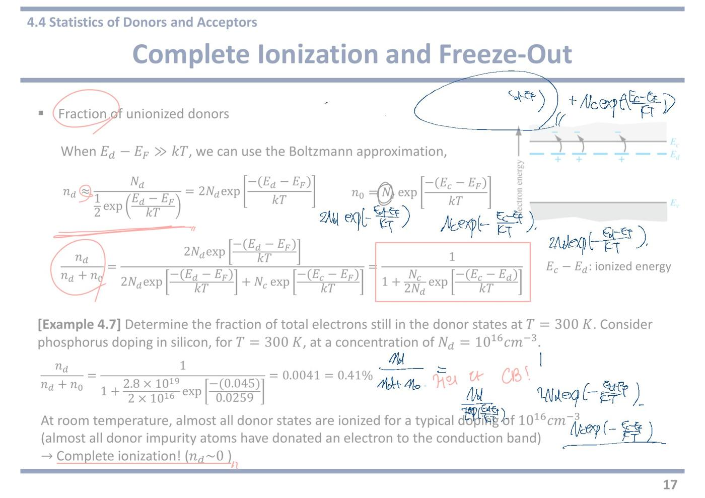
내 필기만 진하게 표시한 쪽 이미지 보기
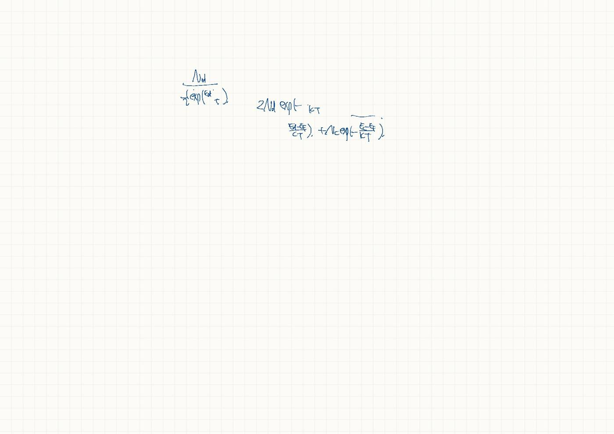
19쪽4.4 완전 이온화와 freeze-out 을 그림으로
Complete ionization
앞 쪽에서 계산으로 확인한 완전 이온화를 그림으로 정리한 것이다.
상온에서 벌어지는 일이다. 조건은 온도가 충분히 높을 것(상온이면 충분하다).
완전 이온화 그림 두 개 — 왼쪽은 n형이다. Ed 점선 자리마다 + 가 찍혀 있고, 곡선 화살표들이 전부 전도대로 올라가 있다. 도너에 남은 전자가 하나도 없다는 뜻이다.
오른쪽은 p형이다. Ea 점선 자리에 − 가 찍혀 있고, 화살표가 가전자대에서 위로 올라가 억셉터 자리로 들어갔다. 그 결과 가전자대에 + 표시(정공)가 줄줄이 남는다.
n-type semiconductor: All donor atoms donate an electron to the conduction band
모든 도너가 전자를 전도대에 내놓았다.
식으로 쓰면 Nd+ = Nd, nd = 0 이다.
여기서 n₀ ≈ Nd 라는 실전 공식이 나온다. 도핑 농도를 주면 전자 농도를 바로 아는 것이다.
p-type semiconductor: All acceptor atoms accept an electron from the valence band (creating hole in the valence band)
p형 짝이다. 모든 억셉터가 가전자대에서 전자를 하나씩 받아들였다.
괄호 안이 중요하다. 전자를 받아들이면 가전자대에 정공이 생긴다. 억셉터가 정공을 직접 내놓는 것이 아니라, 가전자대에서 전자를 빼앗아 정공을 남기는 것이다.
식으로는 Na− = Na, pa = 0, 그래서 p₀ ≈ Na 다.
Freeze-out (at T = 0 K) (붉은 밑줄)
교수님이 T = 0 K 에 붉은 밑줄을 그으셨다. 조건이 극단적이라는 표시다.
freeze-out(동결) = 완전 이온화의 정반대다. 도너가 전자를 하나도 안 내놓은 상태다.
왜 그런가. 0 K 에서는 열에너지 kT 가 0 이다. 0.045 eV 짜리 문턱조차 넘을 힘이 없다.
실제로는 0 K 까지 안 가도 된다. 액체질소 온도(77 K)쯤 내려가면 이미 상당 부분 얼어붙기 시작한다.
freeze-out 그림 두 개 — 왼쪽 n형에서는 EF 가 Ec 와 Ed 사이에 놓여 있고, 전도대가 텅 비어 있다. 도너 자리에 전자가 그대로 앉아 있다는 뜻이다.
오른쪽 p형에서는 EF 가 Ea 와 Ev 사이로 내려와 있고, 억셉터 자리가 비어 있다.
두 경우 모두 EFi 점선은 여전히 밴드갭 가운데에 그려져 있다. EFi 는 도핑과 무관한 기준선이기 때문이다.
n-type: All electrons are in their lowest possible energy state → each donor state must contain an electron
0 K 에서는 모든 전자가 가능한 가장 낮은 에너지 자리에 들어간다. 열이 없으니 위로 올라갈 이유가 없다.
도너 준위 Ed 가 전도대 Ec 보다 낮으므로 전자는 도너 자리에 그대로 머문다.
결과적으로 전도대에 전자가 하나도 없어 전기가 안 통한다. 도핑을 아무리 많이 해도 그렇다.
p-type: All electrons are in their lowest possible energy state → each acceptor state must be empty
p형에서는 반대로 읽는다. 억셉터 준위 Ea 는 가전자대보다 높은 자리다.
전자가 굳이 올라갈 이유가 없으니 억셉터 자리는 비어 있다.
억셉터가 전자를 안 받았으니 가전자대에 정공도 안 생긴다. 역시 전기가 안 통한다.
강의 중 판서
판서 영상1 1:32:21 "Complete ionization" 에 크게 동그라미. n형 그림에서 Ed 준위의 + 줄과 위로 올라간 화살표들을 길게 동그라미로 묶고, 전도대 쪽 전자에도 표시.
도너 자리마다 + 만 남고 전자는 전부 전도대로 올라갔다는 것을 한눈에 묶어 보인 것이다.
판서 영상1 1:32:52 p형 그림에서 Ea 준위의 전자들을 작은 고리로 줄줄이 그리고, 가전자대의 + (정공)들을 하나하나 동그라미로 둘렀다. 오른쪽 설명에서 "All donor atoms donate an electron to the conduction band" 와 "creating hole in the valence band" 에 밑줄.
억셉터가 전자를 받아 가면 그 빈자리가 가전자대의 정공이 된다는 인과를 그림 위에서 짚은 것이다.
판서 영상1 1:33:22 오른쪽 위에 "doping → to increase the # of CB electrons" 와 "the # of VB holes" 를 쓰고 각각 동그라미. 그 옆에 "≈ Nd", 아래에 "= Na" (세로 등호) 를 적었다.
도핑의 목적(전도대 전자 늘리기 / 가전자대 정공 늘리기)과, 완전 이온화이면 n₀ ≈ Nd, p₀ ≈ Na 라는 결론을 함께 적은 것이다.
판서 영상1 1:35:04 Freeze-out 의 "T = 0K" 에 밑줄. n형 그림에서 Ed 준위의 전자에 동그라미와 점을 찍고, Ec 쪽으로 작은 화살표를 그렸다. p형 그림에서는 Ea 준위를 길게 동그라미(비어 있음), 가전자대를 빗금으로 칠했다(전자로 꽉 참). 설명의 "All electrons are in their lowest possible energy state" 두 줄에 밑줄.
0 K 에서는 전자가 전부 가장 낮은 자리에 있다 — n형은 도너 준위에 머물고, p형은 가전자대에 머물러 억셉터가 비어 있다 — 는 것을 그림 위에 표시했다.
강의에서 한 말
강의 영상1 1:32:25 “Complete ionization is the case that all the electrons from the donor states are transferred to the conduction band ... in other words, all donor atoms donate electrons to the semiconductor crystal.” — 완전 이온화 = 도너 준위의 전자가 전부 전도대로 옮겨 간 상태. 앞 쪽 예제에서 99.59 % 로 확인한 그 상황이다.
강의 영상1 1:32:52 “For p-type semiconductors, all acceptor states accept electrons from the valence band, creating holes in the valence band.” — p형에서는 모든 억셉터가 가전자대에서 전자를 받아 가고, 그 자리에 정공이 생긴다.
강의 영상1 1:33:22 “Complete ionization is a desirable situation because the purpose of doping is to increase the number of conduction band electrons or valence band holes. If the introduced impurity atoms do not donate or accept electrons, there's no point having impurities in the crystal.” — 완전 이온화는 바람직한 상태다. 도핑하는 목적이 전도대 전자나 가전자대 정공을 늘리는 것이기 때문이다. 넣은 불순물이 전자를 주고받지 않으면 넣은 의미가 없다.
강의 영상1 1:34:15 “We carefully design the doping concentration so that complete ionization takes place.” — 완전 이온화가 일어나도록 도핑 농도를 신중히 설계한다.
강의 영상1 1:34:27 “Then we can approximate the number of electrons in the conduction band to the concentration of donor atoms, and for p-type, the number of holes in the valence band to the concentration of acceptor atoms. We will learn this in more detail later in this chapter.” — 완전 이온화이면 전도대 전자 수 ≈ 도너 농도(n₀ ≈ Nd), 가전자대 정공 수 ≈ 억셉터 농도(p₀ ≈ Na)로 놓는다. 자세한 것은 이 장 뒤에서 다룬다.
강의 영상1 1:35:10 “Freeze-out is the opposite situation of complete ionization, and it happens when the temperature is at absolute zero ... all electrons occupy the lowest possible energy state because they don't have any thermal energy.” — freeze-out(동결)은 완전 이온화의 반대이고 절대영도에서 일어난다. 열에너지가 전혀 없으니 전자가 모두 가장 낮은 자리에 머문다.
강의 영상1 1:36:02 “For p-type, because all electrons are in their lowest possible energy state, they remain in the valence band, so no electrons are transferred to the acceptor states — all acceptor states are completely empty.” — p형은 전자가 가전자대에 그대로 있고 억셉터로 올라가지 않는다. 억셉터 자리는 모두 비어 있다.
자료에 없음 영상1 1:33:22 도핑을 왜 하는가 — 슬라이드에는 완전 이온화가 "좋다"는 말이 없다. 교수는 도핑의 목적을 전도대 전자 수 또는 가전자대 정공 수를 늘리는 것이라고 못박고, 불순물이 이온화되지 않으면 넣은 의미가 없다고 했다. 판서의 "doping → to increase the # of CB electrons / VB holes" 가 이 말이다.
자료에 없음 영상1 1:36:25 이름의 뜻 — "freeze out(얼어붙음)"이라 부르는 이유는 전하 운반자가 전부 제자리에 멈춰 움직이지 않기 때문이라고 했다. 가장 낮은 에너지 자리에 머문 채 전도대·가전자대로 나오지 않으니 전류가 흐르지 않는다.
이 쪽 한 줄 요약 — 같은 반도체라도 온도에 따라 캐리어 수가 완전히 달라진다. 상온이면 완전 이온화(n₀ ≈ Nd), 0 K 근처면 freeze-out(캐리어 없음) 이다. 22쪽의 "캐리어 농도 vs 온도" 그래프에서 왼쪽 끝 저온 구간이 바로 이 freeze-out 이 풀려 가는 구간이다.
오프라인 리뷰 수업에서 (실제 강의 · 한국어)
리뷰 수업 리뷰⑤ 00:28 ~ 08:32, 리뷰⑥ 00:00 ~ 01:14 이 이 쪽(완전 이온화가 안 되는 경우)이다. 교재 밖 이야기 — 신소재 반도체의 도핑 문제 — 가 대부분이다. 리뷰⑤ 07:00 이후는 잡음이 많아 인식이 크게 깨져 있다(산화갈륨을 "실리콘 카바이드"로 적는 등). 아래는 앞뒤 문맥으로 복원한 것이니 직접 들어볼 것.
리뷰 리뷰⑤ 00:28 "완전 이온화를 가정하지 않는 경우가 있을까, 없을까? 당연히 있으니까 묻겠죠. 어떤 경우인가?" — 학생: "온도가 낮을 때…" (이 쪽 그래프의 freeze-out 구간이 그것이다.) 교수님은 다른 답을 꺼냈다: "문제가 어디서 발생하냐면 — 실리콘 카바이드."
자료에 없음 리뷰⑤ 01:07 신소재가 제품이 되기 어려운 이유 — "새로운 반도체 신소재가 발견된다는 게, 실제 제품이 된다는 게 얼마나 어려운 거냐면, 그냥 새로운 소재를 발견됐어요, 이걸로 소자 만들었을 때 잘 나와요, 이게 다가 아니라 — 기본적으로 웨이퍼를 만들어야 하기 때문에 ① 단결정 성장이 돼야 됩니다." … "② P 도핑, N 도핑이 잘 되냐, 이거예요. 성장이 엄청 잘 돼. 근데 도핑이 아무리 해도 잘 안 돼. 그럼 그거 쓸 수 있어 없어? 못 써." … "P 는 되는데 N 은 안 되고, N 은 되는데 P 는 안 되고 — 그러면 한 종류만 쓰는 쇼트키 배리어 다이오드 이런 걸 만들 수 있는데, MOSFET 도 구조가 제한적이고 PN 접합도 안 되고, 하여튼 문제가 많이 있습니다." 리뷰⑥ 00:59 에 덧붙인 셋째: "③ 공정 기술 — 깎는 거, 쌓는 거."
리뷰 리뷰⑤ 02:22 "실리콘 카바이드 같은 경우는 어떠냐? 밴드갭이 얼마라고 했어요? — 3.3 eV. 그래서 실리콘 카바이드는 N 이 잘 될 것 같아요, P 가 잘 될 것 같아요? … N 은 나쁘지 않습니다. 나이트로젠으로. … 나이트로젠을 넣었을 때 도네이트한 일렉트론이 위치하는 스테이트가 컨덕션 밴드 엣지랑 얼마큼 차이가 나냐 — 70 meV." … "실리콘은 얼마라고 했어요? — 50 meV. 45 에서 50 meV, 이렇게 하면 기억 못 하니까 그냥 50 meV 로 기억해요. 0.05." … "70 meV, 실리콘보다 조금 더 크지만 나쁘지 않죠."
리뷰 리뷰⑤ 03:47 "반면 (P 형은) 알루미늄 이런 애들로 도핑을 하는데, 초반에 이게 얼마 정도냐 — 300 meV. … 알루미늄 200 meV." … "이 밴드갭 3.3 이니까 300 meV 는 0.3 이죠. 그러면 P 도핑 원리가 뭐였어요? 억셉터 스테이트가 있으면 (밸런스 밴드의) 일렉트론이 점프해서 아주 쉽게 올라간다, 이게 P 도핑이었잖아요. 근데 여기서는 이게 올라가는 게 쉬울까? — 어려워. … 그래서 N 도핑은 잘 되는데 P 도핑은 잘 안 돼."
자료에 없음 리뷰⑤ 05:05 도핑을 많이 할수록 이온화 비율은 떨어진다 — "도핑 농도가 높으면 이온화가 쉬울 것 같아, 낮으면 쉬울 것 같아? — 낮으면 쉬운데, 도핑 농도가 높아질수록 어려워져요. 확률도 더 낮아져. 그래서 만약에 Na 가 10의 15 정도면 대략적으로 75%. … 내가 100 개 넣어줬는데 실제 홀의 개수는 75% 밖에 안 나왔다는 거죠." … "월급으로 100 이라고 만들었어. 근데 실제 월급으로 75 만 원 나온다, 그런 거예요. 그러면 그것도 다 고려해서 소자 전류나 소자 디자인 이런 걸 다 해야겠죠. 이거를 컴플리트 이온화를 가정하고 하면 내가 예상한 거랑 전혀 다른 결과가 나온다는 거지." … "10의 16~17승으로 올리면 얘는 15%(로 떨어진다)." (도핑 농도를 말한 대목은 인식이 흐리다.)
예제 4.7 식 1/(1 + (Nc/2Nd)exp(…)) 에서 Nd 가 커지면 Nc/2Nd 가 작아져 남는 비율이 커진다 — 같은 원리다.
자료에 없음 리뷰⑤ 06:27 · 07:05 · 리뷰⑥ 00:03 울트라 와이드 밴드갭은 더 심하다 — SiC 는 "물론 기술이 좀 발전해서 이온화 에너지가 조금 줄기는 했습니다. 근데 어쨌든 완전히 이온화가 잘 되는 그런 컨디션은 아니다. 그래도 N, P 둘 다 도핑이 되긴 해." 이어서 산화갈륨(β-Ga₂O₃, 밴드갭 4.8~4.9 eV): 전력 소자로 좋을 것으로 기대되지만 N 도핑은 쉽고 P 도핑은 안 된다(P 가 되더라도 홀의 이동도가 잘 안 나온다). 다이아몬드: "산화갈륨보다 밴드갭이 더 큰 놈, 그 다음 세대로도 — 얘는 반대로 N 도핑은 안 돼, P 도핑은 됩니다."
정리 리뷰⑥ 00:30 "이걸 소개하는 이유가, 우리가 실리콘에서 당연하게 여기고 있던 컴플리트 이온화가 다른 소재에서는 아닐 수가 있고, 심지어 실리콘 카바이드 같은 경우는 그래도 MOSFET 을 만들 수 있는 P 랑 N 이 가능하긴 하지만, 산화갈륨이나 다이아몬드 같은 경우에는 아예 N 또는 P 가 안 되는 부분도 있다. 그래서 신소재 개발하는 게 그만큼 어렵다는 걸 말씀드리려는 겁니다."
표로 정리 Si: Ec−Ed ≈ 0.05 eV → 상온 완전 이온화 · SiC(3.3 eV): N(질소) 70 meV 양호 / P(알루미늄) 200~300 meV 불완전 · Ga₂O₃(4.8~4.9 eV): N 만 됨 · 다이아몬드: P 만 됨. Ch.3 리뷰 때 "Ga₂O₃·다이아몬드의 한계 = p형 도핑"이라고 한 이야기의 계산적 이유가 여기서 나왔다.
20쪽4.5 보상 반도체와 전하 중성 조건
Compensated semiconductors: semiconductors that contain both (donor 에 동그라미) donor and (acceptor 에 동그라미) acceptor impurity atoms in the same region
교수님이 both 에 밑줄, donor 와 acceptor 각각에 동그라미를 치셨다.
compensated(보상된) = 한 덩어리 안에 도너와 억셉터가 함께 들어 있는 것이다.
왜 이런 것을 만드나. 실제 공정에서는 이미 p형인 웨이퍼의 일부에 n형 도펀트를 넣어 뒤집는 식으로 소자를 만든다. 앞서 넣은 것을 지울 수 없으니 둘이 섞인 상태가 정상이다.
서로 상쇄한다는 뜻에서 "보상"이다. 도너가 내놓은 전자를 억셉터가 받아 가 버린다.
Nd > Na: n-type semiconductor
Nd < Na: p−type semiconductor
Nd = Na: completely compensated semiconductor
판정 규칙이다. 많은 쪽이 이긴다. 절대량이 아니라 차이가 성질을 정한다.
도너 10¹⁶ 에 억셉터 9×10¹⁵ 를 넣으면 차이가 10¹⁵ 뿐이라 약한 n형이 된다.
Nd = Na 면 완전히 상쇄되어 진성처럼 행동한다. 다만 불순물이 잔뜩 들어 있어 전자가 잘 부딪히므로 진짜 진성과 성질이 똑같지는 않다.
Charge neutrality condition (붉은 밑줄): n₀ + Na− = p₀ + Nd+ (붉은 밑줄)
교수님이 제목과 식 양쪽에 밑줄을 그으셨다. 4.5 절에서 가장 중요한 줄이다.
전하 중성 = 반도체 덩어리 전체를 놓고 보면 음전하 총량과 양전하 총량이 같다는 뜻이다. 도핑을 해도 전자를 밖에서 넣어 준 것이 아니므로 당연히 그렇다.
왼쪽이 음전하다. n₀(자유전자) + Na−(전자를 받아 −가 된 억셉터 이온).
오른쪽이 양전하다. p₀(정공) + Nd+(전자를 내보내 +가 된 도너 이온).
이온은 격자에 박혀 못 움직이지만 전하 계산에는 반드시 들어간다. 이것을 빠뜨리는 것이 가장 흔한 실수다.
n₀ + ((Na 에 동그라미) Na − pa) = p₀ + (Nd − nd) [필기] doping 농도만
16쪽의 관계 Na− = Na − pa, Nd+ = Nd − nd 를 대입한 것이다.
교수님이 Na 에 동그라미를 치고 doping 농도만 이라고 적으셨다. Na 는 우리가 넣어 준 총량이고, 실제로 이온이 된 것은 그중 일부라는 구분을 짚어 주신 것이다.
이렇게 바꿔 놓으면 미지수가 측정 가능한 값(도핑 농도)으로 표현된다.
If we assume complete ionization, (nd = pa = 0 에 크게 동그라미) nd = pa = 0,
교수님이 nd = pa = 0 에 크게 동그라미를 치셨다. 이 가정이 계산을 단순하게 만드는 열쇠다.
17쪽에서 계산으로 확인했다. 상온에서 도너에 남은 전자는 0.41 % 뿐이니 0 으로 놓아도 된다.
그러면 Nd+ = Nd, Na− = Na 가 된다. 넣어 준 만큼 전부 이온이 되었다는 뜻이다.
n₀ + Na = p₀ + Nd → n₀ + Na = ni²/n₀ + Nd
여기서 두 번째 방정식이 투입된다.
미지수가 n₀ 와 p₀ 둘인데 전하 중성 식은 하나뿐이라 못 푼다. 그래서 14쪽의 n₀p₀ = ni² 를 가져와 p₀ = ni²/n₀ 로 바꿔 넣는다.
이제 미지수가 n₀ 하나뿐인 방정식이 되었다. 두 식으로 두 미지수를 푸는 것이 4.5 절의 전부다.
n₀² − (Nd − Na)n₀ − ni² = 0
양변에 n₀ 를 곱해 정리한 이차방정식이다.
계수를 보면 성격이 드러난다. n₀ 의 계수가 −(Nd − Na) 다. 도핑의 차이만 들어가고 각각의 절대량은 안 들어간다.
상수항은 −ni² 다. 진성 캐리어의 기여가 여기 숨어 있다.
근의 공식을 쓰면 다음 줄이 나온다.
(크게 동그라미) n₀ = (Nd−Na)/2 + √{[(Nd−Na)/2]² + ni²}
Similarly, (크게 동그라미) p₀ = (Na−Nd)/2 + √{[(Na−Nd)/2]² + ni²}
교수님이 두 식 모두에 크게 동그라미를 치셨다. 4.5 절의 결론 공식이다.
근의 공식에서 + 부호만 살린 이유는 농도가 음수일 수 없기 때문이다. − 부호를 쓰면 음수가 나온다.
p₀ 식은 n₀ 식에서 Nd 와 Na 의 순서만 바꾼 것이다. 따로 외울 필요가 없다.
식을 읽는 법 — n형(Nd ≫ Na, ni)이면 √ 안에서 ni² 가 무시되어 √ 가 (Nd−Na)/2 가 되고, 두 항을 더하면 n₀ ≈ Nd − Na 다. 상온에서 늘 쓰는 그 근사가 여기서 나온다.
[필기] comp 아니어도 ok.
교수님이 두 공식 옆에 적으신 메모다. 보상 반도체가 아니어도 이 공식을 쓸 수 있다는 뜻이다.
도너만 넣었으면 Na = 0 을 대입하면 되고, 억셉터만 넣었으면 Nd = 0 을 넣으면 된다.
즉 이 두 식이 4장의 만능 공식이다. 특별한 상황에서만 쓰는 예외 공식이 아니다.
다만 답이 나오면 반드시 근사가 되는지 확인하고 간단한 형태로 정리해 적는 것이 좋다.
오른쪽 그림 — 보상 반도체에서 전자와 정공이 어디서 오는지를 한 장에 그린 것이다.
위쪽 회색 띠가 전도대다. 왼쪽 Thermal electrons(열로 올라온 전자, 아주 적음)와 오른쪽 Donor electrons(도너가 내놓은 전자, 대부분)가 합쳐져 Total electron concentration n₀ 를 이룬다.
가운데 점선 줄이 Ed(위)와 Ea(아래)이고, 각각 Un-ionized(아직 안 내놓은 것)와 Ionized(내놓은 것)로 나뉘어 그려져 있다. 이온화된 도너는 Nd+ = Nd − nd, 이온화된 억셉터는 Na− = Na − pa 다.
도너에서 내려온 화살표가 억셉터 쪽으로 향한다. 도너가 내놓은 전자를 억셉터가 받아 가는 것이 보상의 실제 모습이다.
아래 회색 띠가 가전자대이고, 열로 생긴 정공과 억셉터가 만든 정공이 합쳐 Total hole concentration p₀ 가 된다.
★ 시험 포인트 — 표시가 촘촘하다. both·donor·acceptor 에 밑줄과 동그라미, 전하 중성 조건에 밑줄, nd = pa = 0 에 동그라미, 최종 두 공식에 크게 동그라미, "comp 아니어도 ok".
① 전하 중성 조건 n₀ + Na− = p₀ + Nd+ 를 그대로 쓸 줄 알아야 한다. 서술형에서 "조건을 세우고 풀어라"로 나온다. 고정 이온 전하를 빠뜨리면 안 된다.
② 완전 이온화를 가정하면 Nd+ = Nd, Na− = Na 로 바뀐다. 이 문장을 답안에 한 줄 적고 시작해야 한다.
③ 결론 공식 n₀ = (Nd−Na)/2 + √{[(Nd−Na)/2]² + ni²} — 보상이든 아니든 항상 쓸 수 있다. Na = 0 을 넣으면 단일 도핑 문제가 된다.
④ 실전에서는 |Nd−Na| 가 ni 보다 훨씬 크면 n₀ ≈ Nd−Na, 소수 캐리어는 p₀ = ni²/n₀ 로 구한다. 이 두 줄이 중간고사 4번의 표준 풀이다.
강의 중 판서
판서 영상2 02:04 제목 왼쪽 위에 작은 그림을 그렸다. 아래에 p-type 이라고 적은 판(기판)이 있고, 그 윗부분에 둥근 영역을 그려 donor, n-type 이라고 적었다. 위에서 아래로 향하는 화살표(↓)도 있다.
기판 = 소자를 만드는 바탕 웨이퍼다. 이미 p형인 판에 위에서 도너를 넣어 그 부분만 n형으로 뒤집는 공정을 그린 것이다. 뒤집힌 영역 안에는 원래 있던 억셉터와 새로 넣은 도너가 함께 들어 있다. 보상 반도체가 공정에서 저절로 생긴다는 것을 보여 주려는 그림이다.
판서 영상2 02:04 semiconductors, donor, acceptor 에 동그라미와 밑줄을 치고, 세 판정식(Nd > Na, Nd < Na, Nd = Na)을 왼쪽 큰 괄호로 묶었다. 세 번째 줄 옆에는 화살표와 함께 intrinsic semi. 라고 적었다.
도너와 억셉터 양이 같으면 서로 완전히 상쇄되어 진성 반도체처럼 행동한다는 말을 글자로 남긴 것이다. 작년 필기에는 이 메모가 없다.
판서 영상2 08:08 전하 중성 식의 n₀, Na−, p₀, Nd+ 에 하나씩 동그라미를 쳤다. 그림 속 Total electron concentration n₀, Total hole concentration p₀, 그리고 Nd+ = (Nd − nd), Na− = (Na − pa) 칸에도 동그라미를 쳤다.
식의 기호 하나하나가 그림의 어느 칸에 해당하는지 짝지어 보여 준 것이다. 식만 외우지 말고 그림으로 떠올리라는 뜻이다.
판서 영상2 08:08 완전 이온화 줄의 nd = pa = 0 에 체크(✓)와 동그라미를 치고, 대입한 식 n₀ + Na = ni²/n₀ + Nd 를 네모로 감쌌다. 오른쪽에 p₀ = ni²/n₀ 를 크게 적어 동그라미 치고 식의 p₀ 자리로 화살표를 이었다. 그 아래에 n₀p₀ = ni² 를 적었다.
미지수 p₀ 를 n₀ 로 바꿔 넣는 과정을 눈으로 따라가게 한 것이다. 두 번째 식(n₀p₀ = ni²)이 어디서 들어오는지를 보여 준다.
판서 영상2 08:08 맨 아래 두 결론 공식을 큰 네모로 감싸고 왼쪽에 큰 체크(✓)를 했다. 오른쪽에 n-type → Na = 0, p-type → Nd = 0 을 적어 각각 동그라미를 치고, p₀ 식의 Nd 에 사선을 그었다. 슬라이드 아래 여백에는 n₀ = Nd/2 + √((Nd/2)² + ni²) 를 새로 적었다.
작년 필기의 "comp 아니어도 ok" 를 이번에는 실제로 대입해 보인 것이다. Na 자리에 0 을 넣으면 순수 n형 공식이 바로 나온다.
강의에서 한 말
강의 영상2 00:14 “compensated semiconductors are the semiconductors that contain both donor and acceptor impurity atoms in the same region. This situation can happen pretty naturally during device fabrication.” — 보상 반도체는 한 영역에 도너와 억셉터가 함께 든 반도체다. 소자를 만들다 보면 꽤 자연스럽게 생긴다.
“자연스럽게”가 요점이다. 일부러 섞는 특수한 재료가 아니라 공정의 흔한 결과라는 말이다.
강의 영상2 00:27 “if you make a p-n junction with p-type substrate … we use doping to introduce the donor atom. This region becomes n-type. Then we have a p-n junction here. In this situation, we have compensated semiconductors.” — p형 기판으로 pn 접합을 만들 때 도너를 넣으면 그 영역이 n형이 되고, 그러면 pn 접합이 생긴다. 이때 그 영역이 보상 반도체다.
pn 접합 = p형과 n형이 맞닿은 구조로, 다이오드와 트랜지스터의 기본 뼈대다.
강의 영상2 01:34 “when the donor concentration is same as the acceptor concentration, then it is called a completely compensated semiconductor, and it behaves as if it is an intrinsic semiconductor.” — 도너와 억셉터 농도가 같으면 완전 보상 반도체라 하고, 진성 반도체처럼 행동한다.
강의 영상2 02:56 “Na is the acceptor doping concentration, and pa is the hole density still in the acceptor level … large Nd is the donor doping concentration, and small nd is the electron density still occupying the donor state.” — 큰 N 은 넣어 준 도핑 총량, 작은 nd·pa 는 아직 이온화되지 않고 준위에 남아 있는 몫이다.
대문자와 소문자를 구분하라는 설명이다. 넣은 총량에서 남은 몫을 빼면 이온이 된 양이 된다.
강의 영상2 04:30 “if we assume complete ionization — remember, complete ionization — that means all electrons from the donor atom are donated to the conduction band, and all acceptor atoms accept electrons from the valence band … then nd and pa equal 0.” — 완전 이온화란 도너 전자가 전부 전도대로 가고, 억셉터는 전부 가전자대에서 전자를 받아 정공을 만든 상태다. 그래서 준위에 남은 몫이 0 이다.
강의 영상2 05:28 “we can rewrite the equation using the n₀p₀ product, which equals ni square. So p₀ equals ni square over n₀.” — n₀p₀ = ni² 를 써서 p₀ 를 n₀ 로 바꿔 넣는다. 그러면 n₀ 하나만 남는 식이 된다.
강의 영상2 06:36 “although these equations were derived for compensated semiconductors, we can also use these equations for non-compensated semiconductors — n-type only or p-type semiconductor … Na equal to 0 … n₀ equal to Nd over 2 plus square root of (Nd over 2) square plus ni square.” — 보상 반도체용으로 유도했지만 n형만, p형만 있는 반도체에도 쓸 수 있다. n형이면 Na = 0 을 넣는다.
강의 영상2 07:59 “those are the general expressions for the charge concentration in a semiconductor.” — 이 두 식이 반도체 캐리어 농도의 일반식이다.
특수한 경우의 식이 아니라 모든 경우를 덮는 식이라는 뜻이다.
이 구간(영상2 06:55~07:27)은 인식이 실패했다. "n-type semiconductor"가 여러 번 깨진 채 반복된다. 앞뒤 문맥으로 보면 Na = 0 을 대입하는 설명이다. 직접 들어볼 것
영상2 02:03~03:56 에서 교수가 전하 중성 식의 기호 설명을 한 번 하고 처음부터 다시 한 번 반복했다. 내용은 같다.
자료에 없음 영상2 00:27 보상 반도체가 생기는 실제 공정. 슬라이드에는 정의만 있다. 강의에서는 p형 기판에 도너를 넣어 n형 영역을 만드는 pn 접합 공정을 예로 들고, 왼쪽 위에 그림까지 그렸다. 새로 만든 n형 영역에는 기판의 억셉터가 그대로 남아 있으므로 그곳이 보상 반도체다.
자료에 없음 영상2 07:31 순수 n형 공식을 직접 유도해 보임. 일반식에 Na = 0 을 넣어 n₀ = Nd/2 + √((Nd/2)² + ni²) 를 얻었다. p형이면 Nd = 0 을 넣어 같은 방식으로 p₀ 를 얻는다고 했다. 슬라이드에는 이 대입 결과가 없다.
★ 시험 포인트 (강의) — 교수가 “An important thing is, for all these cases, charge neutrality condition has to be satisfied”(영상2 01:55)라고 했다. n형·p형·완전 보상 세 경우 모두 전하 중성 조건이 성립한다는 것이 중요하다고 짚은 것이다. "all these cases" 를 두 번 말했다.
또 완전 이온화 가정에서 “Remember, complete ionization”(영상2 04:33)이라고 한 번 강조했다. 이 가정이 있어야 nd = pa = 0 이 되고 식이 풀린다.
내 굿노트 필기
내 굿노트 필기 제목 위 남색 +Na⁻ = p + Nd⁺, 첫 줄 위 n₀ + Na⁻ = … Nd⁺ — 전하 중성 조건을 "음전하 합 = 양전하 합"으로 먼저 써 본 것이다. 음전하: 전자 n₀ 와 이온화된 억셉터 Na⁻, 양전하: 정공 p₀ 와 이온화된 도너 Nd⁺.
내 필기만 진하게 표시한 쪽 이미지 보기
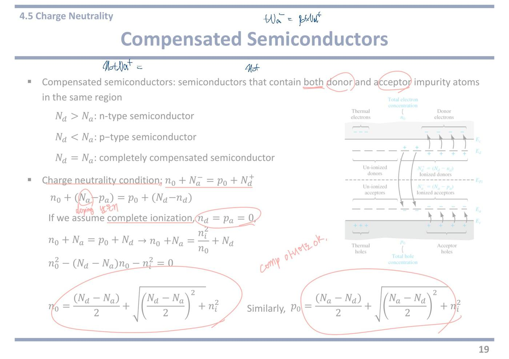
21쪽예제 4.9 — 다수·소수 캐리어 농도 계산
[Example 4.9] Determine the thermal-equilibrium electron and hole concentrations in silicon at T = 300 K for a given doping concentrations
이 장의 표준 문제다. 도핑 농도를 주고 n₀ 와 p₀ 를 구하라는 것이다.
물어보는 것이 둘이라는 점을 놓치면 안 된다. 다수 캐리어만 구하고 끝내면 반만 답한 것이다.
상온 300 K 이므로 완전 이온화를 가정할 수 있다.
(a) Nd = 2 × 10¹⁴ cm⁻³, Na = 0
Assume that ni = 1.5 × 10¹⁰ cm⁻³ at T = 300 K
억셉터가 없으니 단일 도핑이고, Nd 만 있으니 n형이다.
먼저 크기를 비교한다. Nd = 2×10¹⁴ 대 ni = 1.5×10¹⁰. 만 배 넘게 차이가 난다.
따라서 20쪽의 공식에서 ni² 항이 무시되고 n₀ ≈ Nd = 2×10¹⁴ cm⁻³ 다.
정공은 p₀ = ni²/n₀ = (1.5×10¹⁰)²/(2×10¹⁴) = 2.25×10²⁰/2×10¹⁴ ≈ 1.125×10⁶ cm⁻³ 다.
전자가 2×10¹⁴, 정공이 1.1×10⁶. 1억 배 넘는 차이다. 이것이 다수 캐리어와 소수 캐리어의 실제 격차다.
[필기] n₀ = Nd + n̶i̶ (ni 에 사선)
[필기] total / doping / thermally / 무시가능.
교수님이 풀이의 논리를 손으로 적어 주신 것이다. 세 단어가 각 항의 이름표다.
total = n₀, 전도대 전자의 총량.
doping = Nd, 도핑이 만들어 준 몫.
thermally = ni, 열로 저절로 생긴 몫.
그리고 ni 에 사선을 긋고 무시가능 이라고 적으셨다. 10¹⁰ 은 10¹⁴ 앞에서 없는 것과 같기 때문이다.
바다에 물 한 컵 붓기다. 컵 물이 사라진 것은 아니지만 바닷물 높이를 재는 데는 영향이 없다.
주의할 점 — 이 "무시 가능"은 다수 캐리어를 구할 때만 통한다. 소수 캐리어 p₀ 는 오히려 ni² 로만 구할 수 있으므로 ni 를 버리면 안 된다.
(b) Nd = 5 × 10¹⁵ cm⁻³, Na = 2 × 10¹⁵ cm⁻³
이번에는 둘 다 들어 있는 보상 반도체다.
먼저 판정한다. Nd > Na 이므로 n형이다.
차이를 구한다. Nd − Na = 3×10¹⁵ cm⁻³. 이 값이 ni = 1.5×10¹⁰ 보다 압도적으로 크므로 n₀ ≈ 3×10¹⁵ cm⁻³ 다.
정공은 p₀ = ni²/n₀ = 2.25×10²⁰/3×10¹⁵ = 7.5×10⁴ cm⁻³ 다.
여기서 흔한 실수가 있다. n₀ 는 5×10¹⁵ 이 아니다. 억셉터가 도너 전자 중 2×10¹⁵ 개를 받아 가 버렸기 때문이다. 더하지 말고 빼야 한다.
★ 시험 포인트 — 교수님이 "n₀ = Nd + ni" 를 손으로 적고 ni 에 사선 + "무시가능", 각 항에 total / doping / thermally 라벨을 붙이셨다. 중간고사 4번의 첫 소문항이 매년 이 형태다.
① 다수 캐리어는 도핑 농도 차이, 소수 캐리어는 ni²/다수 캐리어. 이 두 줄이 전부다.
② 도핑 원소가 해마다 바뀐다. B(붕소)가 나오면 3족이라 p형이고 그 농도는 Na 다. P·As 가 나오면 5족이라 n형이고 Nd 다. 주어진 농도를 Nd 칸에 넣을지 Na 칸에 넣을지부터 정확해야 한다.
③ 보상 문제에서 더하기와 빼기를 헷갈리지 말 것. 도너와 억셉터는 서로 상쇄하므로 차를 쓴다.
④ 답을 쓴 뒤 어느 쪽이 다수이고 어느 쪽이 소수인지를 한 줄로 밝히면 배점을 온전히 받는다.
강의 중 판서
주의 — 영상과 PDF 의 숫자가 다르다. PDF(작년 자료)의 (a)는 Nd = 2×10¹⁴ cm⁻³ 인데, 올해 영상 슬라이드의 (a)는 Nd = 10¹⁶ cm⁻³ 이다. 아래 판서와 강의는 모두 10¹⁶ 기준이다. 그래서 답도 n₀ = 10¹⁶, p₀ = 2.25×10⁴ cm⁻³ 로 위 해설(2×10¹⁴, 1.125×10⁶)과 다르다. 풀이 방법은 똑같다.
판서 영상2 10:24 (a)의 Nd = 10¹⁶ 에 동그라미를 치고 옆에 n-type semiconductor 라고 적어 동그라미를 쳤다.
억셉터가 0 이므로 보상 반도체가 아니라 그냥 n형이라는 판정을 먼저 적은 것이다. 풀이의 첫 단계가 형 판정이라는 것을 보여 준다.
판서 영상2 10:24 오른쪽에 일반식 n₀ = (Nd−Na)/2 + √(((Nd−Na)/2)² + ni²) 를 쓰고 Na 에 사선을 그었다. 이어서 숫자를 넣어 n₀ = 10¹⁶/2 + √((10¹⁶/2)² + (1.5×10¹⁰)²) 를 적고, (1.5×10¹⁰)² 항에 동그라미를 친 뒤 밖으로 화살표를 그어 버렸다. 결과는 n₀ = 10¹⁶/2 + 10¹⁶/2 = 10¹⁶ cm⁻³ = Nd. 10¹⁶ 과 Nd 에 크게 동그라미와 밑줄을 쳤다.
일반식이 실제로 n₀ ≈ Nd 로 줄어드는 과정을 숫자로 보인 것이다. ni 항은 10²⁰ 수준, 도핑 항은 10³² 수준이라 더해도 티가 안 난다.
판서 영상2 13:06 왼쪽 아래에 n₀p₀ = ni² 를 적어 동그라미 치고, p₀ = ni²/n₀ 를 적었다. 그 위에 p₀ = (1.5×10¹⁰)²/10¹⁶ = 2.25×10⁴ cm⁻³ 를 계산하고 n₀ ~ Nd 를 옆에 붙였다.
다수 캐리어를 먼저 구하고, 소수 캐리어는 곱 관계로 구한다는 두 단계를 판에 그대로 남긴 것이다.
판서 영상2 11:00 제목 오른쪽 위에 total # of e⁻ ≈ # of e⁻ donated from donors + thermally generated e⁻ 를 적고, 각 항 아래에 n₀, Nd, ni 를 적어 동그라미를 쳤다.
작년 필기의 total / doping / thermally 와 같은 내용을 영어 문장으로 풀어 쓴 것이다. 여기서는 ≈ 로 썼다는 점을 눈여겨본다. 22쪽에서 이것이 정확한 등식이 아니라는 이야기가 나온다.
판서 영상2 13:44 제목 왼쪽 위에 intrinsic semiconductor, T = 300 K 를 적고, ni = 1.5×10¹⁰ e⁻, pi = 1.5×10¹⁰ h 를 적어 동그라미를 쳤다.
도핑하기 전의 상태를 적어 두고 도핑 후(n₀ = 10¹⁶, p₀ = 2.25×10⁴)와 비교하려는 것이다. 전자는 늘고 정공은 줄었다는 대비가 22쪽으로 이어진다.
판서 영상2 16:27 (b)를 네모로 감싸고, 아래에 큰 괄호로 두 경로를 적었다. n₀ → p₀ = ni²/n₀, p₀ → n₀ = ni²/p₀.
n₀ 와 p₀ 중 아무거나 하나를 일반식으로 구하면 나머지는 곱 관계로 나온다는 뜻이다. (b)의 계산 자체는 판에 쓰지 않고 방법만 남겼다.
강의에서 한 말
강의 영상2 08:44 “acceptor concentration is 0, that means this material is not a compensated semiconductor but an n-type semiconductor … but we can still use those equations to get the electron and hole concentration for n-type or p-type semiconductor too.” — 억셉터가 0 이니 보상 반도체가 아니라 n형이다. 그래도 앞 쪽의 일반식을 그대로 쓸 수 있다.
강의 영상2 10:08 “if you do calculation, you will notice that this number is significantly lower than this number. So adding this number does not influence the whole value that much. So for simplicity we can simply neglect this part.” — 계산해 보면 ni² 항이 도핑 항보다 훨씬 작다. 더해도 값이 거의 안 변하니 간단히 버린다.
강의 영상2 10:52 “So what does it mean? For n-type semiconductors, total number of electrons can be approximated to the number of electrons donated from donors plus number of thermally generated electrons.” — 무슨 뜻인가. n형에서 전자 총수는 도너가 준 전자 + 열로 생긴 전자로 근사할 수 있다.
“thermally generated electron”은 가전자대에서 전도대로 뛰어오른 전자라고 풀었다. 각 도너가 전자 하나씩 주므로 도너가 준 몫은 Nd 와 같다(완전 이온화 가정).
강의 영상2 12:19 “the second part is typically small and the first part is typically very large. So for n-type semiconductors, in most cases we can approximate the electron concentration as the donor doping concentration — in most cases.” — 둘째 항(열 몫)은 작고 첫째 항(도너 몫)은 매우 크다. 그래서 n형에서는 대부분 n₀ ≈ Nd 로 본다. "in most cases"를 두 번 말했다.
강의 영상2 13:44 “before introducing these donor atoms there was an intrinsic semiconductor … we had 1.5×10¹⁰ electrons in the conduction band and 1.5×10¹⁰ holes in the valence band … pi is same as ni, so we don’t usually use pi.” — 도핑 전 진성 상태에서는 전자와 정공이 모두 1.5×10¹⁰ 이다. pi 는 ni 와 같아서 보통 따로 쓰지 않고 ni 하나로 부른다.
강의 영상2 15:00 “increased electron concentration can be explained simply because a lot of electrons were added from the donor state to the conduction band. But reduced hole concentration cannot be explained very simply … only after you learn the concept of redistribution of charge carriers.” — 전자가 는 것은 도너가 전자를 넣어 줬으니 쉽게 설명된다. 그런데 정공이 10¹⁰ 에서 10⁴ 으로 준 것은 간단히 설명되지 않는다. 다음 쪽의 "캐리어 재분배"를 배워야 설명된다.
이 예제가 22쪽으로 넘어가는 다리 역할을 한다.
강의 영상2 16:12 “this is the compensated semiconductor … You can use either n₀ or p₀. And after you get either n₀ or p₀, then you can get p₀ or n₀ by using the n₀p₀ product.” — (b)는 보상 반도체다. n₀ 식이든 p₀ 식이든 하나를 쓰고, 나머지는 n₀p₀ = ni² 로 구하면 된다. (b)의 숫자 계산은 강의에서 하지 않았다.
자료에 없음 영상2 13:44 도핑 전후 비교. 진성일 때 n = p = 1.5×10¹⁰ 이던 것이 도핑 뒤 n₀ = 10¹⁶ 으로 약 70만 배 늘고, p₀ = 2.25×10⁴ 로 약 70만 분의 1 로 줄었다. 늘어난 비율과 줄어든 비율이 같은 것은 곱 n₀p₀ 가 ni² 로 고정되어 있기 때문이다. 교수는 "정공이 왜 줄었는가"를 질문으로 남기고 다음 쪽으로 넘겼다.
★ 시험 포인트 (강의) — 교수가 “in most cases we can approximate the electron concentration as the donor doping concentration”(영상2 12:28)에서 “in most cases”를 두 번 반복했다. n형에서 n₀ ≈ Nd, p₀ = ni²/n₀ 로 푸는 흐름이 기본 풀이라는 강조다. "important" 같은 명시적 표현은 없었다.
풀이 순서를 고정해 두면 실수하지 않는다
① Nd 와 Na 를 비교해 형을 정한다 (도펀트 이름이 나오면 몇 족인지부터 확인)
② |Nd − Na| 를 ni 와 비교한다. 훨씬 크면 근사 가능
③ 다수 캐리어 = |Nd − Na| (n형이면 n₀, p형이면 p₀)
④ 소수 캐리어 = ni² ÷ 다수 캐리어
⑤ 답에 단위 cm⁻³ 를 반드시 붙인다
내 굿노트 필기
내 굿노트 필기 예제 4.9 를 남색으로 직접 풀었다.
• 위: n₀ + Na⁻ = p₀ + Nd⁺ → n₀² + (Na−Nd)n₀ − ni² = 0 (p₀ = ni²/n₀ 대입).
• (a) 답 2×10¹⁴ 에 동그라미 ‖ — Nd = 2×10¹⁴ ≫ ni 이므로 n₀ ≈ Nd.
• (b) n₀ = (Nd−Na)/2 + √(((Nd−Na)/2)² + ni²) ‖, 답 3×10¹⁵ ‖, 검산 n₀ + 2×10¹⁵ = ni²/n₀ + 5×10¹⁵. 보상된 경우 n₀ ≈ Nd − Na = 3×10¹⁵. 맞다.
내 필기만 진하게 표시한 쪽 이미지 보기
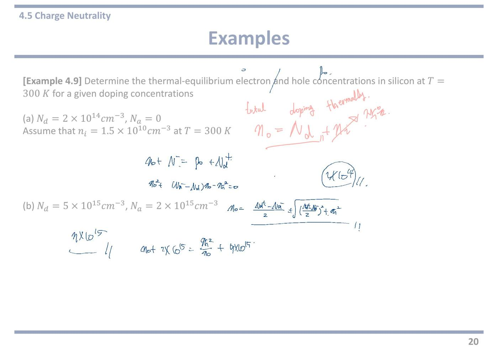
22쪽4.5 캐리어의 재분배 — 도핑하면 정공은 줄어든다
(제목에 크게 동그라미) Redistribution of Carriers
교수님이 제목에 크고 두꺼운 동그라미를 치셨다. 이 쪽에서 잡아야 할 개념이 하나 있다는 표시다.
redistribution(재분배) = 도핑을 하면 전자만 늘어나는 것이 아니라 정공이 실제로 줄어든다는 이야기다.
흔히 하는 오해를 바로잡는 쪽이다.
Adding donor impurity atoms (Nd > Na) → n₀ > ni, p₀ < ni
한 줄에 두 가지 변화가 들어 있다.
n₀ > ni — 전자가 진성일 때보다 많아진다. 예상한 대로다.
p₀ < ni — 정공이 진성일 때보다 적어진다. 이쪽이 예상 밖이다.
도너는 정공을 만들지도 없애지도 않는데 왜 정공이 줄어드는가. 답은 재결합이다.
n₀ = (Nd−Na)/2 + √{[(Nd−Na)/2]² + ni²}
The concentration of electrons in the conduction band (n₀) increases above the intrinsic carrier concentration (ni)
20쪽에서 구한 공식을 그대로 다시 적은 것이다.
Nd > Na 이면 앞 항이 양수이고 √ 항도 양수라 n₀ 는 반드시 ni 보다 크다.
도핑이 아주 약해서 Nd = Na 이면 앞 항이 0 이 되고 √ni² = ni 만 남는다. 진성으로 돌아간다. 공식이 극단에서도 말이 되는지 확인하는 좋은 예다.
p₀ = (Na−Nd)/2 + √{[(Na−Nd)/2]² + ni²}
The concentration of holes in the valence band decreases (p₀) below the intrinsic carrier concentration (ni)
정공 쪽 공식이다. Nd > Na 이면 앞 항이 음수가 된다.
음수와 √ 를 더하니 결과가 ni 보다 작아진다. 그래서 p₀ < ni 다.
물론 n₀p₀ = ni² 로도 확인된다. n₀ 가 커진 만큼 p₀ 가 작아져야 곱이 유지되기 때문이다.
오른쪽 그림 — 재분배가 실제로 어떻게 일어나는지를 보여 준다.
위쪽 전도대 아래에 Intrinsic electrons(열로 올라온 소수의 전자)가 있고, 그 오른쪽으로 이온화된 도너에서 올라온 전자가 줄줄이 그려져 있다. 교수님이 오른쪽 끝의 Un-ionized donors 에 동그라미를 치셨다. 아직 안 내놓은 소수의 도너다.
가운데의 곡선 화살표들이 핵심이다. 도너 전자 일부가 아래로 내려가 가전자대의 정공과 만나 사라진다. 그림에도 A few donor electrons annihilate some intrinsic holes 라고 적혀 있다.
교수님이 그 화살표에 붉은 선을 덧그리고 재결합하여 / 감소! 라고 적으셨다.
맨 아래 Net p₀ = ni²/n₀ 가 결론이다. 재결합하고 남은 정공의 양이 정확히 그 값이다.
- The net electron concentration in the conduction band ≠ the donor concentration + the intrinsic electron concentration
이 쪽에서 가장 조심해야 할 줄이다. ≠ 기호가 붙어 있다.
얼핏 생각하면 n₀ = Nd + ni 일 것 같다. "도핑으로 온 것 + 열로 온 것"이니 더하면 될 것 같다.
그런데 틀렸다. 도너 전자 일부가 원래 있던 정공과 만나 같이 사라졌기 때문이다. 두 몫을 단순히 더하면 사라진 것을 두 번 세는 셈이 된다.
정확한 답은 항상 전하 중성 조건과 n₀p₀ = ni² 를 함께 풀어 나온 20쪽의 공식이다.
다만 실전에서 Nd ≫ ni 이면 사라진 양이 워낙 적어 n₀ ≈ Nd 로 써도 무방하다. "≈ Nd" 는 맞고 "= Nd + ni" 는 틀리다는 것이 이 줄의 요점이다.
★ 시험 포인트 — 교수님이 제목에 크게 동그라미, Un-ionized donors 에 동그라미, 재결합 화살표에 "재결합하여 감소!" 를 적으셨다. 개념을 묻는 서술형 자리다.
① 왜 도핑하면 정공이 줄어드는가 — 도너 전자 일부가 가전자대의 정공과 재결합해 함께 사라지기 때문이다. "n₀p₀ = ni² 이 고정이라서"라고만 쓰면 결과만 말한 것이다. 재결합이라는 물리적 이유까지 써야 한다.
② n₀ = Nd + ni 는 틀린 식이다. 21쪽 필기의 사선과 이 줄의 ≠ 가 같은 이야기를 하고 있다.
③ 소수 캐리어는 p₀ = ni²/n₀ 로 구한다. 그림 맨 아래에 그대로 적혀 있다.
강의 중 판서
판서 영상2 20:24 제목 Redistribution of Carriers 에 크게 동그라미를 쳤다. 첫 줄의 n₀, ni, p₀, ni 에 각각 동그라미를 쳤다.
작년 필기와 같은 제목 강조다. 첫 줄에서는 비교 대상(n₀ 대 ni, p₀ 대 ni)을 짝지어 보여 준다.
판서 영상2 20:24 n₀ 식의 (Nd − Na) 에 동그라미를 치고 위에 > 0, 아래에 > ni 를 적었다. p₀ 식의 (Na − Nd) 에도 동그라미를 치고 위에 < 0, 아래에 < ni 를 적었다. 두 식의 ni² 에도 동그라미를 쳤다.
앞 항의 부호 하나로 결론이 갈린다는 것을 보인 것이다. 도너가 더 많으면 n₀ 식의 앞 항은 양수라 n₀ 가 ni 보다 커지고, p₀ 식의 앞 항은 음수라 p₀ 가 ni 보다 작아진다.
판서 영상2 20:24 그림에서 Intrinsic electrons 과 전도대의 전자 줄, 이온화된 도너의 + 줄을 길게 동그라미로 묶었다. 도너 준위에서 가전자대로 내려가는 곡선 화살표들을 붉은 선으로 덧그리고, 가전자대의 정공(⊕)들을 묶어 동그라미를 쳤다.
작년 필기에 있던 "재결합하여 감소!" 글자는 이번에는 쓰지 않았다. 대신 도너 전자가 내려가 정공을 없애는 경로를 선으로 따라 그렸다.
판서 영상2 20:24 맨 아래 줄 “the donor concentration + the intrinsic electron concentration” 에 붉은 밑줄을 쳤다.
21쪽 판서의 “total ≈ donated + thermally generated” 가 정확한 등식이 아니라는 것을 이 줄과 맞대어 보라는 표시다.
강의에서 한 말
강의 영상2 17:08 “from the previous example, we observed that when we add donor impurity atoms into the intrinsic semiconductor, we have increased electron concentration … But at the same time, we have lower hole concentration compared to the intrinsic semiconductor.” — 앞 예제에서 도너를 넣으니 전자는 늘었지만 동시에 정공은 진성일 때보다 줄었다.
강의 영상2 17:45 “this observation can be also found from the equations we derived previously … this part is positive here, but this part is negative. So we end up having n₀ greater than ni, and p₀ lower than ni.” — 이 관찰은 앞에서 유도한 식에서도 보인다. n₀ 식의 앞 항은 양수, p₀ 식의 앞 항은 음수라서 n₀ > ni, p₀ < ni 가 된다. (전사에는 "Ni greater than N0 greater than Ni"로 깨져 있다.)
강의 영상2 18:24 “don’t just think this is weird … you may think that only electron concentration increases when we add donor atoms. But what really happens is hole concentration also decreases.” — 이상하다고만 생각하지 마라. 도너를 넣으면 전자만 는다고 생각하기 쉽지만, 실제로는 정공도 줄어든다.
강의 영상2 19:14 “most of donors donate electrons to the conduction band … But there are some electrons still occupying the donor state, which are called un-ionized donors. But at the same time there are some electrons fall down to the empty state in the valence band, reducing holes in the valence band.” — 대부분의 도너는 전자를 전도대로 보낸다. 일부는 도너 준위에 남는다(비이온화 도너). 그리고 일부 전자는 가전자대의 빈자리(정공)로 떨어져 정공을 줄인다.
재분배의 실제 모습이다. 도너 전자가 세 갈래(전도대로, 제자리에, 가전자대로)로 나뉜다.
강의 영상2 19:46 “because of this redistribution of charge carriers we have decreased hole concentration … falling down of those electrons will annihilate the holes in the valence band. And as a result, the net electron concentration in the conduction band is not exactly equal to the donor concentration plus the intrinsic electron concentration.” — 떨어진 전자가 가전자대의 정공을 없앤다. 그래서 전도대 전자의 순 농도는 도너 농도 + 진성 전자 농도와 정확히 같지 않다.
교수는 여기서 “into the conduction band”라고 말했는데 문맥상 가전자대(valence band)로 떨어진다는 뜻이다. 말실수로 보인다.
자료에 없음 영상2 19:14 도너 전자의 세 갈래. 슬라이드 그림에는 "몇몇 도너 전자가 정공을 없앤다"는 문장만 있다. 강의에서는 ① 전도대로 올라가는 대부분 ② 도너 준위에 남는 비이온화 도너 ③ 가전자대로 떨어져 정공을 메우는 일부, 이렇게 행선지를 나눠 말했다. 21쪽에서 정공이 10¹⁰ → 10⁴ 으로 준 이유가 ③이다.
23쪽4.5 온도 의존성 — 캐리어 농도 vs 온도 3구간
(ni 에 동그라미) ni is a very strong function of temperature
교수님이 ni 에 동그라미를 치셨다. 이 쪽 전체가 이 한 문장에서 나온다.
strong function of temperature = 온도가 조금만 바뀌어도 값이 크게 달라진다는 뜻이다.
예제 4.3 에서 이미 봤다. 250 K 와 400 K 사이에서 ni 가 30만 배나 차이 났다.
(ni 에 동그라미) ni = Nc·exp[−(Ec−EFi)/kT] (붉은 밑줄)
여기에도 동그라미와 밑줄을 치셨다. 왜 강한 함수인지가 식에 드러나 있다.
온도 T 가 두 군데에 들어 있다. ① Nc 안에 T3/2 로 ② 지수의 분모에 kT 로.
①은 온도가 두 배 되면 2.8 배가 되는 정도다. ②는 지수 안이라 자릿수가 통째로 바뀐다.
승부는 항상 지수 쪽에서 난다. 근사를 할 때 무엇을 버리고 무엇을 남길지 판단하는 기준이 이것이다.
Temperature dependent electron concentration
n₀ = (Nd−Na)/2 + √{[(Nd−Na)/2]² + ni²}
20쪽 공식을 다시 꺼냈다. 이번에는 온도가 변할 때 두 항의 힘겨루기로 읽는다.
이 식 안에서 온도에 따라 변하는 것은 ni 하나뿐이다. Nd 와 Na 는 넣어 준 양이라 온도와 무관하다.
그러니 온도를 올리면 ni² 항만 커진다. 어느 순간 도핑 항을 넘어선다.
- Nd − Na term is typically dominant: n₀ ~ Nd − Na
- ni² term becomes dominant as the temperature increases: n₀ ~ ni
두 구간을 나눠 적은 것이다.
보통의 온도(상온 포함) — 도핑 항이 압도적이다. n₀ ≈ Nd − Na. 이것이 지금까지 계속 써 온 근사다.
온도가 높아지면 — ni 가 도핑 농도를 따라잡는다. 그러면 √ 안에서 ni² 가 이겨 n₀ ≈ ni 가 된다.
어느 온도에서 뒤집히는가는 도핑 농도에 달렸다. 도핑을 세게 할수록 더 높은 온도까지 버틴다.
오른쪽 아래 그래프 — 이 쪽의 핵심 그림. 가로축이 온도 T(K), 세로축이 전자 농도 n₀(cm⁻³, 로그 눈금)다. 파란 실선이 실제 n₀, 검은 점선이 ni 다. 도핑은 5×10¹⁴ cm⁻³ 짜리 예다. 세 구간으로 나뉜다.
① 왼쪽 (약 100 K 아래) — Partial ionization(부분 이온화) 구간. 곡선이 아래에서 가파르게 치솟는다. 온도가 너무 낮아 도너가 아직 전자를 다 못 내놓은 상태다. 18쪽의 freeze-out 이 풀려 가는 중이다. 온도를 올릴수록 이온화가 진행되어 n₀ 가 급히 는다.
② 가운데 (약 100~500 K) — Extrinsic(외인성) 구간, 평평하다. 도너가 이미 전부 이온화되어 더 내놓을 것이 없고, ni 는 아직 너무 작다. 그래서 n₀ = Nd = 5×10¹⁴ 로 온도가 변해도 일정하다. 상온이 이 구간 한가운데에 있다. 소자가 안정적으로 동작하는 이유가 이 평평한 구간 덕분이다.
③ 오른쪽 (약 550 K 위) — Intrinsic(진성) 구간. 점선 ni 가 급격히 올라와 실선과 만나고, 그 뒤로는 둘이 겹쳐서 함께 치솟는다. 도핑이 무의미해지고 진성 반도체처럼 행동한다.
- High T: Extrinsic semiconductor will lose its extrinsic characteristics and behaves like an intrinsic semiconductor
그래프의 세 번째 구간을 문장으로 쓴 것이다.
고온에서는 도핑한 반도체가 도핑한 티를 잃고 진성처럼 행동한다.
왜 문제가 되는가. 소자는 n형과 p형의 차이로 동작한다. 둘 다 진성처럼 되어 버리면 그 차이가 사라져 트랜지스터가 멈춘다.
실리콘 소자의 동작 온도 상한이 대략 150~200 °C 인 이유가 여기 있다. 더 높은 온도에서 쓰려면 밴드갭이 큰 재료(SiC, GaN) 를 쓴다. Eg 가 크면 ni 가 작아서 진성 구간이 훨씬 뒤로 밀리기 때문이다. 2쪽 Overview 에 SiC 가 적혀 있던 이유가 이것이다.
왼쪽 그래프 — 예제 4.3 에서 봤던 것과 같은 그림이다. 세로축이 ni, 가로축이 1000/T 라 오른쪽으로 갈수록 저온이다. Ge, Si, GaAs 세 직선이 나란히 내려간다. 밴드갭이 작은 Ge 가 맨 위, 큰 GaAs 가 맨 아래다. 여기서는 "ni 가 온도의 강한 함수"라는 주장의 증거로 다시 실린 것이다.
★ 시험 포인트 — 교수님이 ni 에 동그라미를 두 번 치고 ni 식에 밑줄을 그으셨다. 그래프 해석 문제로 나온다.
캐리어 농도 vs 온도 그래프의 세 구간을 이름과 함께 설명하라 는 형태가 표준이다. 답안은 이렇게 쓴다.
① ionization(부분 이온화) 구간 — 저온. 도너 전자가 아직 전도대로 다 올라가지 못했다. 온도가 오를수록 n₀ 가 급증한다.
② extrinsic(외인성) 구간 — 중간 온도(상온 포함). 완전 이온화가 끝났고 ni 는 아직 작다. n₀ ≈ Nd − Na 로 평평하다.
③ intrinsic(진성) 구간 — 고온. ni 가 도핑 농도를 넘어서 n₀ ≈ ni 가 되고 지수적으로 치솟는다. 도핑의 효과가 사라진다.
덧붙여 도핑 농도가 높을수록 평평한 구간이 더 높은 온도까지 이어진다는 점, 밴드갭이 큰 재료일수록 진성 구간이 늦게 온다는 점을 쓰면 완전한 답이다.
강의 중 판서
판서 영상2 20:32 제목 왼쪽 위에 띠 그림을 그렸다. 위 선 CB(전도대), 아래 선 VB(가전자대), 왼쪽에 T 동그라미. 가전자대에서 전도대로 올라가는 화살표를 긋고, 위에 e⁻ → ni↑, 아래에 h → ni↑ 를 적었다.
온도가 오르면 전자가 뛰어올라 전자와 정공이 같은 수만큼 함께 늘어난다는 뜻이다. ni 가 온도에 민감한 이유를 그림 하나로 보인 것이다.
판서 영상2 21:10 ni 식의 kT 에 동그라미를 치고 앞에 T↑ 를 적었다. 왼쪽 그래프에는 세로축을 따라 위로 가는 화살표와 가로축을 따라 왼쪽으로 가는 화살표를 그리고, Ge·Si·GaAs 에 동그라미를 쳤다.
이 그래프의 가로축은 1000/T 라서 왼쪽으로 갈수록 고온이다. 왼쪽으로 가면 ni 가 위로 올라간다는 것을 화살표로 짚었다.
판서 영상2 21:48 오른쪽 n₀ 식에서 n₀ 와 ni² 에 동그라미를 치고, ni² 에서 선을 끌어 f(T) 라고 적었다. 옆에 10¹⁶ ~ 10¹⁹(도핑 농도)와 ni = 10¹⁰ 을 적어 동그라미 쳤다. (Nd − Na) 에 동그라미, 오른쪽 n₀ ~ Nd − Na 의 Nd − Na 에 네모를 쳤다.
식 안에서 온도 함수는 ni 하나뿐이라는 것, 그리고 상온에서는 도핑(10¹⁶~10¹⁹)이 ni(10¹⁰)보다 수백만 배 이상 크다는 것을 숫자로 대비했다.
판서 영상2 23:27 같은 식의 (Nd − Na) 항 두 곳에 X 를 긋고, 위에 n₀ ~ ni 를 적었다. ni² 아래에는 "dominant" 로 보이는 글자를 적었다.
고온에서는 거꾸로 도핑 항을 지우고 ni 만 남긴다는 것을 보였다. 같은 식에서 온도에 따라 지우는 항이 바뀐다.
판서 영상2 24:00 가운데 빈 곳에 CB, VB 와 도너 준위 ED 를 그리고, ED 의 전자들이 T↑ 에 따라 위로 올라가는 화살표를 여러 개 그렸다.
그래프 첫 구간(부분 이온화)이 무엇인지를 띠 그림으로 보인 것이다. 온도가 오르면서 도너 전자가 점점 더 전도대로 올라간다.
판서 영상2 24:38 오른쪽 그래프에서 Partial ionization, Extrinsic, Intrinsic 에 각각 동그라미를 치고, 100 K 부근 꺾이는 점에 선을 그어 Complete ionization 이라고 적었다. 외인성 구간에서 아래로 선을 내려 n₀ ~ Nd 를 적어 밑줄을 쳤다. 그래프 아래에는 ni 와 Nd 를 나란히 크게 동그라미 쳤다. 약 300 K 와 약 520 K(ni 점선이 실선과 만나는 곳)에도 세로선을 그었다. 가로축 아래로 오른쪽 화살표를 그었다.
완전 이온화가 끝나는 점이 외인성 구간의 시작이라는 것, 외인성 구간에서는 n₀ = ni + Nd 인데 Nd 가 훨씬 커서 n₀ ≈ Nd 라는 것, 온도가 더 오르면 ni 가 Nd 를 따라잡는다는 것을 한 번에 그렸다.
강의에서 한 말
강의 영상2 20:39 “this intrinsic carrier concentration is strongly dependent on the temperature because as you increase the temperature more electrons from the valence band tend to jump into the conduction band … at the same time, it will produce the same number of holes in the valence band.” — 온도를 올리면 가전자대 전자가 더 많이 전도대로 뛰어오르고, 같은 수의 정공이 가전자대에 생긴다. 그래서 ni 는 온도에 강하게 좌우된다.
강의 영상2 21:48 “ni is strongly, strongly dependent on the temperature. So depending on the temperature, this ni could be very significant to determine this n₀, or it could be negligible.” — ni 는 온도에 아주 강하게 좌우된다. 온도에 따라 n₀ 를 정하는 데 결정적일 수도 있고, 무시해도 될 수도 있다.
강의 영상2 22:45 “it’s because of high doping concentration, because typically doping concentration is 10¹⁶ to 10¹⁹, but ni is 10¹⁰ for silicon at 300 K.” — 보통 도핑 농도는 10¹⁶~10¹⁹ 이고 실리콘 상온 ni 는 10¹⁰ 이다. 그래서 상온에서는 n₀ ≈ Nd − Na 로 본다.
강의 영상2 23:21 “if temperature increases, then this ni term becomes dominant over this Nd − Na term … we can neglect this part, then n₀ becomes ni.” — 온도가 오르면 ni 항이 도핑 항을 이긴다. 이번에는 도핑 항을 버리고 n₀ ≈ ni 가 된다.
강의 영상2 24:17 “partial ionization is the region where more electrons from the donor state gradually move to the conduction band as the temperature increases. When complete ionization happens, it becomes the extrinsic semiconductor.” — 부분 이온화 구간은 온도가 오르며 도너 전자가 점점 전도대로 옮겨 가는 구간이다. 완전 이온화가 되면 외인성 구간이 된다. 이 구간에서 n₀ ≈ Nd 다.
강의 영상2 25:28 “as temperature increases further, thermally generated electrons dominate over the donated electrons from the donor atom. So it becomes the intrinsic region … in the extrinsic region, we have ni plus Nd. But Nd is greatly larger, so we neglected this small ni.” — 온도가 더 오르면 열로 생긴 전자가 도너가 준 전자보다 많아져 진성 구간이 된다. 외인성 구간에서는 n₀ = ni + Nd 인데 Nd 가 훨씬 커서 ni 를 버렸던 것이다.
강의 영상2 26:13 “at high temperature regime, extrinsic semiconductors lose their extrinsic characteristics and behave like an intrinsic semiconductor. The region we are usually working on is 300 K here, so we are in the extrinsic semiconductor region.” — 고온에서는 외인성 반도체가 도핑의 성질을 잃고 진성처럼 행동한다. 우리가 보통 쓰는 온도는 300 K 이고, 이것은 외인성 구간이다.
강의 영상2 26:51 “in most of cases, we approximate n₀ as Nd − Na. If this is purely n-type, Na is equal to 0, then we can approximate small n₀ as large Nd. Similarly for the p-type semiconductor we can approximate p₀ as Na.” — 대부분 n₀ ≈ Nd − Na 로 근사한다. 순수 n형이면 n₀ ≈ Nd, p형이면 p₀ ≈ Na 다.
자료에 없음 영상2 26:39 우리가 쓰는 온도가 그래프의 어디인가. 슬라이드에는 세 구간 이름만 있다. 교수는 그래프의 300 K 자리를 가리키며 "우리가 보통 일하는 곳은 여기, 외인성 구간"이라고 짚었다. 그래서 지금까지 계속 n₀ ≈ Nd − Na 를 써도 됐던 것이다.
자료에 없음 영상2 25:43 외인성 구간의 n₀ = ni + Nd. 교수는 외인성 구간을 "ni 더하기 Nd" 로 보고 작은 ni 를 버린 것이라고 설명했다. 온도가 오르면 이 버린 항이 자라서 결국 Nd 를 이긴다는 흐름이다. (22쪽의 말처럼 엄밀히는 단순 합이 아니지만, 어느 항이 이기는지를 보는 데는 충분한 설명이다.)
★ 시험 포인트 (강의) — 교수가 “ni is strongly, strongly dependent on the temperature”(영상2 21:48)라고 "strongly"를 겹쳐 말했다. 이 쪽 도입(20:32)에서도 “very strong function of temperature” 라고 했다. 온도 의존성이 이 쪽의 뼈대라는 강조다.
마무리에서 “the region we are usually working on is 300 K … in most of cases, we approximate n₀ as Nd − Na”(영상2 26:39~26:51)라고 정리했다. 상온 = 외인성 구간 = n₀ ≈ Nd − Na(p형은 p₀ ≈ Na)라는 연결을 기억한다.
내 굿노트 필기
내 굿노트 필기 왼쪽 그래프 옆 남색 ni = 한 글자만 있다. 그래프(1000/T 에 대한 ni)를 ni 식과 연결하려다 멈춘 것으로 보인다.
내 필기만 진하게 표시한 쪽 이미지 보기
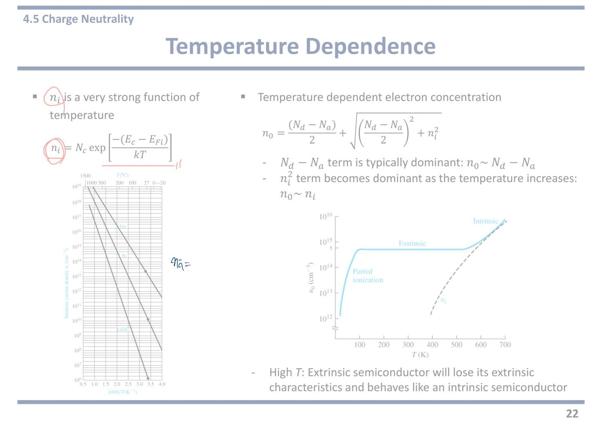
24쪽예제 4.10 · 4.11 — 저마늄과 보상 p형
[Example 4.10] Calculate the thermal-equilibrium electron and hole concentrations in germanium for a given doping concentration. Consider a germanium sample at T = 300 K in which Nd = 2 × 10¹⁴ cm⁻³ and Na = 0. Assume that ni = 2.4 × 10¹³ cm⁻³.
예제 4.9(a) 와 도핑 농도가 똑같다. 바뀐 것은 재료뿐이다. 실리콘 대신 저마늄(Ge) 이다.
그런데 ni 가 2.4×10¹³ 으로 실리콘(1.5×10¹⁰)보다 천 배 이상 크다. 저마늄의 밴드갭이 0.66 eV 로 실리콘 1.12 eV 보다 훨씬 작기 때문이다.
이제 Nd = 2×10¹⁴ 와 ni = 2.4×10¹³ 이 겨우 10배 차이다. ni 를 무시할 수 없다.
그래서 근사를 쓰면 안 되고 20쪽의 완전한 공식을 그대로 써야 한다. 이것이 이 예제가 존재하는 유일한 이유다.
계산하면 (Nd−Na)/2 = 1×10¹⁴ 이고, √{(10¹⁴)² + (2.4×10¹³)²} = √(1.0576×10²⁸) ≈ 1.028×10¹⁴ 이므로 n₀ ≈ 2.03×10¹⁴ cm⁻³ 다. 근사값 2×10¹⁴ 보다 조금 크다.
정공은 p₀ = ni²/n₀ = (2.4×10¹³)²/2.03×10¹⁴ ≈ 2.84×10¹² cm⁻³ 다. 실리콘 때(10⁶)와 견주면 백만 배나 많다.
[Example 4.11] Calculate the thermal-equilibrium electron and hole concentrations in a compensated p-type semiconductor. Consider a silicon semiconductor at T = 300 K in which Na = 10¹⁶ cm⁻³ and Nd = 10¹⁵ cm⁻³. Assume that ni = 1.5 × 10¹⁰ cm⁻³.
이번에는 억셉터가 더 많은 보상 반도체다. Na = 10¹⁶ > Nd = 10¹⁵ 이므로 p형이다.
p형이면 다수 캐리어가 정공이므로 p₀ 를 먼저 구한다. p₀ 공식은 Na 와 Nd 의 순서가 바뀐 것이다.
Na − Nd = 10¹⁶ − 10¹⁵ = 9×10¹⁵ cm⁻³. ni = 1.5×10¹⁰ 보다 압도적으로 크므로 근사가 통한다. p₀ ≈ 9×10¹⁵ cm⁻³.
전자는 n₀ = ni²/p₀ = 2.25×10²⁰/9×10¹⁵ = 2.5×10⁴ cm⁻³ 다.
여기서도 10¹⁶ 을 그대로 답으로 쓰면 틀린다. 도너가 억셉터를 10¹⁵ 만큼 상쇄했기 때문이다.
강의 중 판서
판서 영상2 27:31 예제 4.10 문제에서 germanium, Nd, 2×1014, ni = 2.4×1013 에 동그라미를 치고, 옆에 "n-type", Nd 아래에 물결표와 함께 "~ ni" 를 적었다.
Na = 0 이니 n형이라는 판정, 그리고 Nd 가 ni 와 비슷한 크기(~) 라는 점을 한눈에 보이려는 표시다. 이 예제의 요점이 "근사를 쓰면 안 된다"는 것임을 숫자 두 개를 나란히 묶어 보여 준다.
판서 영상2 28:11 4.10 풀이를 빈칸에 직접 썼다.
n₀ = Nd/2 + √[(Nd/2)² + ni²] = 2.028×1014 (네모로 둘러쌈). 20쪽 완전한 공식에서 Na 가 들어갈 자리는 가위표로 지웠다(Na = 0).
p₀ = ni²/n₀ = 2.84×1012.
ni² 항을 지우지 않고 남겨 둔 것이 4.11 풀이와 대비되는 부분이다.
판서 영상2 29:26 슬라이드 오타 정정. 예제 4.11 의 Nd = 1015 에 동그라미를 치고 그 앞에 "3×" 를 써 넣었다. 즉 Nd = 3×1015 cm⁻³ 가 맞다는 정정이다.
그 결과 판서의 계산이 모두 3×1015 기준으로 되어 있다. 위 해설(base)은 슬라이드에 인쇄된 1015 로 계산해 9×1015, 2.5×10⁴ 가 나왔으니 강의 숫자와 다르다는 점에 주의한다.
판서 영상2 29:42 4.11 문제 위에 "p-type", silicon·Na 에 동그라미와 밑줄을 긋고 풀이를 썼다.
① Na − Nd = 7×1015 cm⁻³ ≫ ni — 판서에는 ni = "1.5×1016" 처럼 적혔지만 말로는 1.5×1010 이라고 했다. 1010 이 맞다(판서 실수).
② p₀ = (Na−Nd)/2 + √[((Na−Nd)/2)² + ni²] 에서 ni² 에 가위표 → ≈ Na − Nd = 7×1015 cm⁻³ (크게 동그라미, 화살표).
③ n₀ = ni²/p₀ = (1.5×1010)²/7×1015 ≈ 3.21×10⁴ (동그라미).
4.10 에서는 ni² 를 살려 두고, 4.11 에서는 지운다. 지울 수 있느냐 없느냐를 두 예제로 나란히 보여 준 판서다.
강의에서 한 말
강의 영상2 27:52 “So this is a p-type. … And for 4.10, because we only have Nd, this is an n-type semiconductor.” — 4.11 은 p형, 4.10 은 Nd 만 있으니 n형이다. 풀기 전에 형(type)부터 정한다는 순서를 먼저 보여 줬다.
강의 영상2 28:30 “The doping concentration is not very high, so this is actually comparable to ni. 1013 and 1014 — not very different. So we cannot neglect any of those terms.” — 도핑이 높지 않아 ni 와 견줄 만하다. 1013 과 1014 는 크게 다르지 않다. 그래서 어느 항도 버릴 수 없다. 근사를 쓸지 말지는 자릿수를 비교해서 정한다는 뜻이다.
강의 영상2 28:46 “We need to put all these numbers to obtain n₀. Then we can find 2.028×1014. … p₀ using n₀p₀ = ni² … 2.84×1012.” — 숫자를 전부 넣어 n₀ = 2.028×1014, 질량작용 법칙(n₀p₀ = ni²)으로 p₀ = 2.84×1012. 근사값 2×1014 와의 차이는 약 1% 다.
강의 영상2 29:24 “So this is actually Nd. I think there is a typo here. So this is actually Nd is 3×1015. … So Na − Nd equals to 7×1015.” — 여기 오타가 있다. Nd 는 사실 3×1015 이다. 그래서 Na − Nd = 7×1015. 슬라이드에 인쇄된 "Nd = 1015" 이 틀렸다는 정정이다.
강의 영상2 29:48 “This is greatly larger than small ni, which is 1.5×1010. … So we can neglect this part. Then we can approximate it to Na − Nd.” — 7×1015 는 ni 보다 압도적으로 크니 ni² 항을 버리고 p₀ ≈ Na − Nd 로 근사한다. 4.10 과 정반대 결론이다.
강의 영상2 31:04 “In 4.11, we add acceptor atoms into the intrinsic semiconductor, so we have increased hole concentration. But at the same time, we have reduced electron concentration, because of the redistribution of charge carriers we just learned in the previous slide.” — 억셉터를 넣으면 정공은 늘고 전자는 줄어든다. 앞 쪽(23쪽)에서 배운 캐리어 재분배 때문이다. 전자는 1010 에서 약 3×10⁴ 로 줄었다.
자료에 없음 영상2 29:26 예제 4.11 의 Nd 는 3×1015 cm⁻³ 로 고쳐 읽는다. 정답은 p₀ ≈ 7×1015 cm⁻³, n₀ ≈ 3.21×10⁴ cm⁻³ 이다. 슬라이드 인쇄값(1015)을 그대로 쓰면 p₀ = 9×1015, n₀ = 2.5×10⁴ 가 된다. 풀이 방법은 같고 숫자만 다르다. 시험에서는 문제에 주어진 숫자로 푼다.
이 구간(영상2 29:16~29:24)은 “H7 times” 처럼 인식이 깨져 있다. 오타를 짚기 직전 대목이니 직접 들어볼 것.
두 예제가 각각 노리는 함정
4.10 — 근사를 쓸 수 있는지 먼저 확인하라. 저마늄처럼 ni 가 큰 재료이거나 도핑이 아주 약하면 |Nd−Na| 와 ni 가 비슷해져 근사가 깨진다. 그럴 때는 √ 가 들어간 완전한 공식을 써야 한다.
4.11 — p형에서는 p₀ 를 먼저 구한다. 다수 캐리어부터 구하고 소수 캐리어는 ni² 를 나눠서 구한다는 순서는 그대로다. 다만 어느 쪽이 다수인지를 먼저 판정해야 한다.
재료가 바뀌면 무엇이 바뀌는가 — 바뀌는 것은 ni, Eg, Nc, Nv 넷뿐이다. 풀이 순서와 공식은 그대로다. 실리콘 ni = 1.5×10¹⁰, 저마늄 ni = 2.4×10¹³, 갈륨비소 ni = 1.8×10⁶ 이라는 자릿수 감각만 있으면 근사가 통하는지 즉시 판단할 수 있다.
25쪽4.6 페르미 준위의 위치 — 네 개의 식
n-type semiconductor (Nd ≫ ni, then n₀ ≈ Nd)
조건부터 읽는다. ≫ 는 압도적으로 크다는 기호다.
도핑 농도가 진성 캐리어보다 압도적으로 크면 n₀ ≈ Nd 로 놓아도 된다. 21쪽에서 계속 써 온 그 근사다.
이 조건이 붙어 있어야 아래 식의 마지막 단계로 넘어갈 수 있다. 조건 없이 결과만 외우면 축퇴나 저농도 문제에서 틀린다.
n₀ = Nc·exp[−(Ec−EF)/kT] → Ec − EF = kT·ln(Nc/n₀) → Ec − EF = kT·ln(Nc/Nd)
7쪽의 식을 EF 에 대해 푼 것뿐이다. 양변에 자연로그를 씌우면 지수가 내려온다.
읽는 법 — EF 는 전도대 바닥에서 kT·ln(Nc/Nd) 만큼 아래에 있다.
도핑을 세게 하면 Nd 가 커져 로그 안이 작아지고, EF 가 Ec 에 가까워진다. 그림에서 EF 가 위로 올라가는 것이다.
Nd 를 Nc 만큼(10¹⁹) 키우면 ln 1 = 0 이라 EF 가 Ec 에 닿는다. 그 지점이 15쪽의 축퇴다. 식이 스스로 한계를 알려 주는 셈이다.
n₀ = ni·exp[(EF−EFi)/kT] → EF − EFi = kT·ln(n₀/ni)
4장에서 가장 많이 계산하게 되는 식이다. 14쪽의 식을 뒤집은 것이다.
기준이 Ec 가 아니라 EFi(진성 페르미 준위, 대략 밴드갭 한가운데) 다.
읽는 법 — 전자가 진성일 때보다 몇 배 많은지를 로그로 재면, 그것이 곧 EF 가 중앙에서 올라간 높이다.
부호를 보면 방향이 바로 나온다. n₀ > ni 이면 로그가 양수라 EF > EFi. n형이 맞다.
숫자 감각 — n₀/ni 가 10배면 kT·ln10 = 0.0259 × 2.303 ≈ 0.06 eV. 10배마다 약 0.06 eV 씩 올라간다. 백만 배면 0.36 eV 다.
p-type semiconductor (Na ≫ ni, then p₀ ≈ Na)
p형 조건이다. 억셉터 농도가 ni 보다 압도적으로 크면 p₀ ≈ Na 다.
이후 네 줄이 n형과 정확히 대칭이므로 새로 외울 것이 없다. 기준이 Ec 에서 Ev 로, 위에서 아래로 바뀔 뿐이다.
p₀ = Nv·exp[−(EF−Ev)/kT] → EF − Ev = kT·ln(Nv/p₀) → EF − Ev = kT·ln(Nv/Na)
정공 쪽 짝이다. 이번에는 가전자대 천장에서 위로 얼마나 떨어져 있는지를 잰다.
슬라이드 왼쪽 식에 p₀ = Nc exp[...] 라고 적혀 있는데 Nv 의 오기다. 오른쪽 결과 식에는 Nv 로 제대로 적혀 있으니 그쪽이 맞다.
도핑을 세게 하면 Na 가 커져 EF 가 Ev 에 가까워진다. 아래로 내려간다는 뜻이다.
p₀ = ni·exp[−(EF−EFi)/kT] → EFi − EF = kT·ln(p₀/ni)
p형에서 EFi 기준으로 재는 식이다.
좌변의 순서가 뒤집혀 있다. EF − EFi 가 아니라 EFi − EF 다. p형에서는 EF 가 아래에 있으므로 이렇게 써야 값이 양수로 나온다.
실수하기 쉬운 자리다. 답을 구한 뒤 "p형이니 EF 는 EFi 보다 이만큼 아래" 라고 말로 한 번 확인하면 부호를 틀리지 않는다.
오른쪽 밴드 그림 두 개 — 위가 n형이다. 위에서부터 Ec(실선), EF(파란 점선), EFi(검은 점선), Ev(실선) 순서다. EF 가 EFi 보다 위에 있다.
아래가 p형이다. EFi 가 위, EF 가 그 아래로 내려와 Ev 쪽에 붙어 있다.
계산 결과의 부호가 맞는지 확인할 때 이 그림을 떠올리면 된다.
강의 중 판서
판서 영상2 31:45 첫 줄 "n-type semiconductor" 에 밑줄, Nd ≫ ni 와 n₀ ≈ Nd 를 각각 동그라미로 묶었다. 그리고 n₀ 에서 두 번째 식 분모 n₀ 로 화살표를 내려 "여기에 Nd 를 넣는다" 는 대입을 표시했다(EF−EFi 식의 n₀ 옆에도 "Nd" 를 적음).
조건 → 근사 → 대입이라는 세 단계를 선으로 이어 보여 준 것이다.
판서 영상2 32:28 결과식 kT·ln(Nc/Nd) 에 동그라미를 치고 ">0" 을 적었다. 오른쪽 위에는 "Nc > Nd" 를 동그라미로 써 두었다.
EF − EFi = kT·ln(n₀/ni) 에도 동그라미와 ">0" 을 적었다.
식의 값이 아니라 부호를 읽으라는 표시다. 부호가 양수라는 것에서 "EF 는 Ec 아래, EFi 위"라는 위치가 바로 나온다.
판서 영상2 34:10 오른쪽 위 밴드 그림(n형)을 크게 둘러싸고 Ec, EF, EFi 라벨에 동그라미, EF 가 EFi 위에 있음을 화살표로 짚었다. 아래 p형 그림도 둘러싸고 EFi 에서 EF 로 내려가는 화살표를 그렸다.
식에서 얻은 부호를 그림 위 위치로 옮겨 확인시키는 표시다.
판서 영상2 35:02 아래 빈칸에 큰 타원을 두르고 세 칸짜리 요약 그림을 새로 그렸다.
① 왼쪽: Ec, EFi, Ev 세 줄(진성 — EF 는 EFi 자리, 한가운데).
② 가운데: Ec 바로 아래에 EFn, 그 아래 위쪽 화살표 — n형은 EF 가 전도대 쪽으로 올라간다.
③ 오른쪽: Ev 바로 위에 EFp, 아래쪽 화살표 — p형은 가전자대 쪽으로 내려간다.
교수가 “you need to be very familiar with those figures” 라고 두 번 말하며 그린 그림이다. 이 쪽에서 가장 중요한 판서다.
강의에서 한 말
강의 영상2 31:45 “We can approximate carrier concentration to the doping concentration, because typically the doping concentration is greatly larger than the intrinsic carrier concentration. And if we assume the complete ionization, then we can use this approximation.” — 도핑 농도가 보통 ni 보다 훨씬 크고, 완전 이온화(도너가 전부 전자를 내놓은 상태)를 가정하면 n₀ ≈ Nd 로 놓을 수 있다. 근사에 조건이 두 개 붙는다는 말이다.
강의 영상2 32:28 “Because typically Nc is greater than Nd, we have a positive value here. So Ec − EF is a positive value. … EF in the n-type semiconductor lies below the conduction band edge Ec.” — 보통 Nc 가 Nd 보다 크니 로그 값이 양수다. 그러니 EF 는 전도대 바닥 Ec 아래에 있다. 실리콘 Nc 는 약 2.8×1019 이라 일반 도핑(1015~1017)보다 훨씬 크다.
강의 영상2 32:56 “If we increase the doping concentration further and further, and when doping concentration becomes comparable to Nc, then the Fermi energy level moves into the conduction band. So remember, this is the case of degenerate semiconductors.” — 도핑을 계속 올려 Nc 와 비슷해지면 EF 가 전도대 안으로 들어간다. 이것이 축퇴 반도체(degenerate, 도핑이 너무 많아 금속처럼 된 반도체)다. 같은 식이 축퇴까지 설명한다는 점을 짚었다.
강의 영상2 34:00 “Of course here n₀ is Nd. And because this is a positive value … the Fermi energy of the n-type semiconductor lies above the intrinsic Fermi energy. So [it] is located in between conduction band edge and intrinsic Fermi energy.” — 두 식을 합치면 n형 EF 는 EFi 보다 위, Ec 보다 아래, 즉 둘 사이에 있다. 두 식이 각각 위쪽 한계와 아래쪽 한계를 하나씩 준다.
강의 영상2 34:29 “Similarly we can develop equations for the Fermi energy level for the p-type semiconductors. … located above the valence band and below the intrinsic Fermi energy level.” — p형은 대칭이다. EF 는 Ev 위, EFi 아래. p형 쪽은 거의 읽고 넘어갔고, 슬라이드 p₀ 식의 Nc(Nv 의 오기)는 강의에서 따로 언급하지 않았다.
강의 영상2 35:02 “For intrinsic semiconductor, Fermi level is located in between the conduction band and valence band, in the middle of the band gap. But for n-type, Fermi level moves toward the conduction band. And for p-type, it moves toward the valence band.” — 진성은 밴드갭 한가운데, n형은 전도대 쪽, p형은 가전자대 쪽. 아래 요약 그림을 그리며 한 말이다.
자료에 없음 영상2 32:04 완전 이온화(complete ionization) 가정. 슬라이드 조건에는 Nd ≫ ni 하나만 적혀 있지만, 말로는 "도너가 모두 이온화했다"는 조건을 하나 더 붙였다. 아주 낮은 온도에서는 이 가정이 깨져 n₀ < Nd 가 된다.
자료에 없음 영상2 32:56 이 식이 축퇴까지 설명한다. Nd 가 Nc 에 가까워지면 ln(Nc/Nd) → 0, 넘어서면 음수가 되어 EF 가 Ec 위(전도대 안)로 간다. 슬라이드에는 축퇴 이야기가 없다. (엄밀히는 축퇴 영역에서 볼츠만 근사가 깨져 이 식을 그대로 쓸 수는 없고, 방향만 알려 준다.)
★ 시험 포인트 (강의) — “The location of Fermi energy in semiconductor is really important to understand each property.” 영상2 34:55 그리고 “You need to be familiar with those figures” / “you need to be very familiar with those figures” 영상2 35:02·영상2 35:38 — 두 번 반복. “Remember, this is the case of degenerate semiconductors” 영상2 33:16 도 두 번(“remember”) 나왔다.
외울 그림 — 진성: EF = 밴드갭 한가운데 / n형: Ec 쪽 / p형: Ev 쪽 / 축퇴: 밴드 안.
네 식을 한 묶음으로 정리
· Ec 기준 — n형: Ec−EF = kT·ln(Nc/Nd) / p형: EF−Ev = kT·ln(Nv/Na)
· EFi 기준 — n형: EF−EFi = kT·ln(n₀/ni) / p형: EFi−EF = kT·ln(p₀/ni)
문제에서 Nc·Nv 를 주면 위 두 줄, ni 를 주면 아래 두 줄을 쓴다. 주어진 값이 어느 쪽인지 보고 고르면 된다. 두 결과는 서로 모순되지 않는다. 같은 EF 를 다른 기준선에서 잰 것뿐이다.
26쪽4.6 EF 의 이동 — 도핑 농도와 온도에 따라
Doping concentration dependence
→ Ec − EF = kT·ln(Nc/Nd), → EF − Ev = kT·ln(Nv/Na)
앞 쪽에서 구한 두 식을 그래프로 그리면 어떻게 되는지를 보는 쪽이다.
로그 안에 도핑 농도가 분모로 들어 있다는 점이 핵심이다. Nd 가 커지면 로그 값이 작아지고, Ec − EF 가 줄어든다.
왼쪽 위 그래프 — 세로축이 에너지로 위가 Ec, 가운데 점선이 EFi, 아래가 Ev 다. 가로축이 도핑 농도(10¹² ~ 10¹⁸ cm⁻³, 로그 눈금)다. 위쪽 가로축은 Nd, 아래쪽 가로축은 Na 로 두 개가 따로 붙어 있다.
n type 곡선은 EFi 근처에서 시작해 오른쪽으로 가면서 Ec 쪽으로 올라간다.
p type 곡선은 반대로 Ev 쪽으로 내려간다.
두 곡선이 완만한 로그 곡선인 것이 중요하다. 도핑을 10배 늘려도 EF 는 겨우 0.06 eV 움직인다. 도핑으로 EF 를 크게 움직이기는 생각보다 어렵다.
- As the doping level increase, the Fermi energy level moves closer to the conduction band for the n-type semiconductor and closer to the valence band for the p-type semiconductor
그래프를 문장으로 옮긴 것이다.
도핑을 세게 할수록 n형은 EF 가 전도대 쪽으로, p형은 가전자대 쪽으로 간다.
물리적으로 당연하다. 전자가 많아지면 그 개수를 설명할 수 있는 수면 높이가 올라가야 하기 때문이다.
계속 올리면 결국 EF 가 밴드 안으로 들어간다. 그것이 15쪽의 축퇴다. 이 그래프의 오른쪽 끝을 계속 연장하면 축퇴에 닿는다.
Temperature dependence
EF − EFi = kT·ln(n₀/ni) & EFi − EF = kT·ln(p₀/ni)
같은 식을 이번에는 온도를 바꿔 가며 본다.
식 안에 온도가 두 군데 들어 있다. ① 앞의 kT ② 로그 안의 ni.
둘의 방향이 반대라 헷갈리기 쉽지만, 승부는 ni 쪽에서 난다. ni 가 지수적으로 커지기 때문이다.
(ni 에 동그라미) ni is a strong function of temperature!
- As the temperature increases, (ni 에 동그라미) ni increases ↑
- EF moves closer to the intrinsic Fermi level, (EFi 에 동그라미) EFi ↑
교수님이 파란 펜으로 ni 에 동그라미를 두 번, EFi 에 동그라미, 그리고 위 화살표를 그리셨다. 이 쪽에서 유일한 필기이고 그만큼 중요한 자리다.
논리를 한 줄씩 따라가면 이렇다.
① 온도가 오른다 → ② ni 가 지수적으로 커진다 → ③ 그런데 n₀ 는 여전히 Nd 로 거의 그대로다(외인성 구간이라 도핑이 안 변하므로) → ④ 그래서 비 n₀/ni 가 1 에 가까워진다 → ⑤ ln 값이 0 으로 줄어든다 → ⑥ EF 가 EFi 로 다가간다.
앞의 kT 는 커지지만 로그 항이 훨씬 빨리 줄어들어 곱이 작아진다. 지수 쪽이 이긴다는 원칙이 여기서도 그대로다.
왼쪽 아래 그래프 — 세로축이 EF − EFi(eV) 로 0 이 진성 준위다. 위쪽 회색 띠가 전도대, 아래쪽 회색 띠가 가전자대다. 가로축이 온도 T(K)다.
위쪽 여러 곡선이 n형(도핑 10¹² ~ 10¹⁸), 아래쪽 여러 곡선이 p형이다. 도핑이 셀수록 바깥쪽(밴드에 가까운 쪽)에서 출발한다.
모든 곡선이 온도가 오를수록 가운데 0 선으로 모여든다. 이것이 "EF 가 EFi 로 다가간다"의 그림이다.
도핑이 셀수록 더 오래 버티고 늦게 모여든다. 22쪽의 평평한 구간이 길어지는 것과 같은 이야기다.
교수님이 이 그래프에 파란 큰 괄호를 그어 오른쪽 설명과 묶어 두셨다.
→ At high temperature, the semiconductor begins to lose its extrinsic characteristics and begin to behave more like an intrinsic semiconductor (파란 밑줄과 동그라미)
교수님이 intrinsic semiconductor 에 파란 밑줄과 동그라미를 치셨다.
22쪽의 결론과 같은 말을 EF 의 언어로 바꿔 쓴 것이다.
22쪽에서는 "n₀ 가 ni 를 따라간다"고 했고, 여기서는 "EF 가 EFi 로 간다"고 한다. 같은 현상의 두 가지 표현이다.
n형과 p형의 구별이 사라진다는 뜻이고, 그래서 고온에서 소자가 동작을 멈춘다.
★ 시험 포인트 — 이 쪽의 필기는 붉은 펜이 아니라 파란 펜인데, 표시가 ni 에 동그라미 두 번, EFi 에 동그라미, 화살표, intrinsic semiconductor 에 밑줄과 동그라미로 촘촘하다. 두 방향으로 나온다.
① 도핑 농도에 따른 EF 이동 — 도핑↑ → n형은 EF 가 Ec 쪽, p형은 Ev 쪽. 계산은 Ec−EF = kT·ln(Nc/Nd). 농도 10배마다 약 0.06 eV 움직인다.
② 온도에 따른 EF 이동 — T↑ → ni 지수적 증가 → ln(n₀/ni) 감소 → EF 가 EFi 로 접근. 서술형에서 이 인과 사슬을 그대로 쓰면 된다. "kT 가 커지니 올라간다"고만 쓰면 틀린 답이다. 로그 항이 더 빨리 줄어든다는 비교를 반드시 넣어야 한다.
③ 거꾸로 EF 위치를 주고 도핑 농도를 구하라는 형태도 나온다. n₀ = ni·exp[(EF−EFi)/kT] 로 n₀ 를 구한 뒤 Nd ≈ n₀ 로 답한다. 예를 들어 EF−EFi = 0.358 eV 면 exp(0.358/0.0259) = e13.8 ≈ 10⁶ 이므로 n₀ = 1.5×10¹⁰ × 10⁶ ≈ 1.5×10¹⁶ cm⁻³ 다.
강의 중 판서
판서 영상2 35:52 위 그래프의 Nd(cm⁻³) 축 라벨에 동그라미, 오른쪽으로 화살표를 긋고 "↑↑", 그 오른쪽에 Ec 선을 긋고 그 근처에 EFn(동그라미)을 적었다. 아래 Na 축에서도 화살표 → Ev 선 근처에 EFp.
n type·p type 곡선 라벨에도 동그라미를 치고 곡선을 붉게 덧그렸다.
"도핑이 커지면 EFn 은 Ec 로, EFp 는 Ev 로 붙는다"를 그래프 밖에 간단한 밴드 그림으로 다시 요약한 것이다. 25쪽 아래 요약 그림과 짝을 이룬다.
판서 영상2 37:07 온도 쪽 식에서 ni 에 겹겹이 동그라미(두 식 모두), 식 위에 "T↑" 와 화살표, 로그 항 위에 "→0" 을 여러 번 적었다.
오른쪽에는 "EF → EFi" 를 크게 적고 동그라미로 묶었다.
"T 가 오르면 ni 가 커지고, 로그가 0 으로 가고, EF 가 EFi 로 간다"는 인과 사슬을 식 위에 그대로 그린 것이다. PDF 의 파란 필기(ni·EFi 동그라미, 화살표)와 같은 내용을 이번에는 식 쪽에 더 촘촘히 적었다.
판서 영상2 38:13 아래 그래프에서 세로축 EF−EFi 에 동그라미, 가로축 T(K) 에 동그라미, 저온 쪽 곡선 출발점(왼쪽 끝 다발)에 동그라미, 1012·1014·1016·1018 곡선 라벨에 동그라미를 쳤다. 곡선을 따라 가운데 0 선으로 모이는 방향으로 선을 덧그렸고, Conduction band·Valence band 라벨에 밑줄을 그었다.
그래프를 어떤 축, 어떤 방향으로 읽는지 짚어 준 것이다. 모든 곡선이 온도가 오를수록 0(진성 준위)으로 모인다.
판서 영상2 37:53 오른쪽 문장 "ni increases", "begins to lose its extrinsic characteristics", "behave more like an intrinsic semiconductor" 에 붉은 밑줄을 모두 그었다. 결론 문장 전체가 서술형 답안의 뼈대라는 표시다.
강의에서 한 말
강의 영상2 35:52 “As we observed previously, the Fermi energy level in the n-type semiconductor shifts towards the conduction band edge when doping concentration increases. … It can be also seen from this equation.” — 도핑을 올리면 n형 EF 는 전도대 쪽으로 간다. 그래프뿐 아니라 식(ln 안의 Nd 가 분모)에서도 읽힌다.
강의 영상2 36:27 “If the doping concentration increases further, then the semiconductor becomes degenerate semiconductor. And … their Fermi energy level lies inside the conduction band or inside the valence band.” — 도핑을 더 올리면 축퇴 반도체가 되고, EF 가 전도대 안(n형) 또는 가전자대 안(p형)에 들어간다. 그래프의 오른쪽 끝을 연장한 이야기다.
강의 영상2 37:07 “According to these equations, the Fermi energy level depends on ni here. Of course, there's a T here, which is temperature, but it depends on this term more. And this ni is a strong function of temperature.” — 식에 T(kT)도 있지만 EF 는 ni 항에 더 크게 좌우된다. ni 가 온도에 따라 급격히 변하기 때문이다. 온도가 두 군데 들어 있는데 어느 쪽이 이기는지 교수가 직접 답을 준 대목이다.
강의 영상2 37:31 “As the temperature increases, this ni increases, then it makes this term to 0 … That means at high temperature the semiconductor begins to lose its extrinsic characteristic, because EF goes to intrinsic Fermi energy.” — 온도↑ → ni↑ → 로그 항 → 0 → EF → EFi. 그래서 고온에서는 외인성(도핑으로 만든 성질)을 잃는다.
강의 영상2 38:13 “This graph shows the energy difference between Fermi energy and intrinsic Fermi energy with respect to the temperature. So with all these doping concentrations, as the temperature increases, its Fermi energy moves toward the intrinsic Fermi energy and it starts to behave [like an intrinsic semiconductor].” — 아래 그래프는 EF−EFi 를 온도에 대해 그린 것이다. 어떤 도핑 농도든 온도가 오르면 EF 가 EFi 로 간다.
자료에 없음 영상2 36:35 축퇴 반도체의 EF 는 밴드 안에 있다. 이 쪽 그래프는 1018 까지만 그려져 있고 축퇴 이야기는 없지만, 말로 "도핑을 더 올리면 EF 가 전도대/가전자대 안으로 들어간다"고 연결했다.
자료에 없음 영상2 37:17 kT 보다 ni 가 더 중요하다. 슬라이드는 "ni is a strong function of temperature" 만 적혀 있다. 식 앞의 T 도 온도 따라 커지지만 ni 쪽 영향이 더 크다는 비교는 말로만 했다.
★ 시험 포인트 (강의) 영상2 36:49 — “So you need to be aware of the doping concentration dependence and also you need to be aware of the Fermi energy level in the degenerate semiconductors.” — “you need to be aware of” 두 번. ① 도핑 농도에 따른 EF 이동 방향, ② 축퇴 반도체에서 EF 가 밴드 안에 있다는 것.
27쪽4.6 페르미 준위 정렬 — 붙이면 수면이 같아진다
When two materials are brought into intimate contact, the electrons in the entire system will tend to seek the lowest possible energy
intimate contact(밀착) = 두 물질을 틈 없이 맞붙인 상태다. 전자가 이쪽에서 저쪽으로 넘어갈 수 있는 상태를 말한다.
전자는 언제나 가능한 한 낮은 에너지 자리를 찾아간다. 물이 낮은 곳으로 흐르는 것과 같다.
맞붙인 두 물질의 페르미 준위가 다르면, 높은 쪽 전자가 낮은 쪽 빈자리로 흘러간다.
Thermal equilibrium occurs when the distribution of electrons is the same in the two materials
언제 흐름이 멈추는가. 양쪽의 전자 분포가 같아졌을 때다.
여기서 "같다"는 개수가 같다는 뜻이 아니다. 같은 에너지 높이에서 채워질 확률이 같다는 뜻이다.
확률 곡선 fF(E) 를 결정하는 것이 EF 하나뿐이므로, 분포가 같아지려면 EF 가 같아져야 한다.
In thermal equilibrium, the Fermi energy level is constant throughout a system
이 장의 마지막 결론이다. 열평형 상태에서 페르미 준위는 계 전체에서 하나의 값으로 일정하다.
물통 두 개를 관으로 이으면 물이 오가다가 수면 높이가 같아지는 순간 멈추는 것과 같다. 담긴 물의 양은 다를 수 있지만 수면은 하나다.
이것이 얼마나 강력한 도구인가 하면, 앞으로 pn 접합이나 금속-반도체 접촉을 다룰 때 맨 처음 긋는 선이 언제나 "EF 는 수평" 이기 때문이다. 나머지 밴드는 그 선에 맞춰 휘게 그린다.
5장 이후의 모든 소자 이야기가 이 한 줄 위에 세워진다.
위쪽 그림 두 개 — 붙이기 전이다. 왼쪽 Material A 는 EFA 가 높고, 오른쪽 Material B 는 EFB 가 낮다. 각각 옆에 Allowed energy states(허용된 에너지 자리)가 가로줄로 그려져 있고, 파란 점이 찍힌 줄이 전자가 들어 있는 자리다.
파란 곡선은 fF(E) 다. 각자의 EF 에서 확률이 1/2 을 지나 내려간다. 두 곡선의 위치가 서로 어긋나 있다는 것이 평형이 아니라는 뜻이다.
아래 왼쪽 그림 (Electrons flow from A to B) — 붙인 직후다. A 의 EFA 근처 전자들이 화살표를 따라 B 의 빈자리로 흘러간다. A 쪽 위에 있던 전자가 B 쪽 더 낮은 빈자리로 내려가면 계 전체의 에너지가 낮아지기 때문이다.
흐르는 동안 A 는 전자를 잃어 EF 가 내려가고, B 는 얻어서 올라간다.
아래 오른쪽 그림 (Fermi level alignment) — 다 끝난 상태다. 양쪽을 가로지르는 하나의 쇄선이 그어져 있고 양 끝에 똑같이 EF 라고 적혀 있다. 페르미 준위가 하나로 정렬된 것이다.
이 상태에서도 전자는 계속 오가지만 A→B 와 B→A 가 같은 속도라 순 이동이 0 이다. 수도꼭지와 배수구가 같은 속도로 열린 욕조와 같다. 수위는 그대로지만 물은 계속 흐른다.
1쪽에서 말한 "평형은 아무 일도 안 일어나는 것이 아니라 오가는 양이 같은 것" 이라는 정의가 여기서 그림으로 확인된다.
강의 중 판서
판서 영상2 38:41 첫 문장의 "lowest possible energy" 에 물결 밑줄. 전자가 가장 낮은 에너지를 찾아간다는 것이 이 쪽 전체의 출발점이라는 표시다.
판서 영상2 39:26 위 그림의 EFA, EFB 에 각각 동그라미. 두 물질의 페르미 준위가 서로 다른 높이에 있다는 점을 비교하게 했다.
판서 영상2 39:37 아래 왼쪽 그림(Electrons flow from A to B)에서 A 의 EFA 근처 채워진 자리에 동그라미, B 의 EF 위 빈자리에 빗금 친 동그라미를 치고 둘을 붉은 화살표로 이었다.
“A 의 전자가 B 의 더 낮은 빈자리로 간다”는 설명을 그대로 그린 것이다. 어디서 빠져나가 어디로 들어가는지를 짚었다.
판서 영상2 40:15 오른쪽 아래에 "p-n junction" 이라고 쓰고 밴드 그림 두 개를 새로 그렸다.
왼쪽 p: Ec, 그 아래 EFi, 그리고 EFp 가 Ev 바로 위.
오른쪽 n: Ec 바로 아래에 EFn(동그라미), 그 아래 EFi.
두 그림을 각각 둘러싸 "이 두 개를 붙이면" 이라는 뜻을 보였다. EF 높이가 서로 다른 p형과 n형을 붙이면 EF 가 정렬되면서 밴드가 휘게 된다 — 7장 pn 접합의 예고다.
강의에서 한 말
강의 영상2 38:41 “When two materials are brought into contact, the electrons will move to find the lowest possible energy state.” — 두 물질을 붙이면 전자는 가장 낮은 에너지 상태를 찾아 움직인다. 첫 문장을 거의 그대로 읽었다.
강의 영상2 39:02 “Thermal equilibrium occurs when the distribution of electrons is the same in the two materials. So same distribution of electrons means same position of Fermi energy.” — 전자 분포가 같다는 것은 곧 페르미 준위의 위치가 같다는 뜻이다. 분포(fF)를 정하는 것이 EF 하나이기 때문에 두 말이 같은 말이 된다.
강의 영상2 39:26 “When material A and B with different Fermi energy are brought into contact, electrons in the material A move to the material B because there are empty states with lower energy. … Electron movement will continue until both materials have the same distribution of electrons.” — A 의 전자가 B 로 가는 이유는 B 에 더 낮은 에너지의 빈자리가 있어서다. 분포가 같아질 때까지 계속 흐르고, 그러면 계 전체의 EF 가 하나로 맞춰진다.
강의 영상2 40:01 “This Fermi energy alignment, this is a really important concept to understand semiconductor devices. So this concept is related to the formation of PN junction, which will be covered in the chapter 7.” — 페르미 준위 정렬은 반도체 소자를 이해하는 데 아주 중요한 개념이다. pn 접합(p형과 n형을 붙인 구조, 다이오드의 기본)이 이 개념으로 만들어지고, 7장에서 다룬다.
강의 영상2 40:21 “For PN junction, we have P-type material here, and its Fermi energy level is located closely to the valence band edge. And for n-type material, the Fermi energy level is located near the conduction band edge. So when we produce a contact with those two materials … because of Fermi energy level alignment, there will be many things going on.” — p형은 EF 가 Ev 근처, n형은 Ec 근처다. 둘을 붙이면 EF 가 정렬되면서 여러 일이 일어난다. 7장에서 배운다.
자료에 없음 영상2 40:15 pn 접합 예고. 슬라이드는 일반적인 "물질 A, B" 로만 설명하지만, 교수는 이것을 p형과 n형을 붙이는 pn 접합에 곧바로 연결했다. p형 EF(Ev 근처)와 n형 EF(Ec 근처)는 높이 차가 크다. 붙이면 n 쪽 전자가 p 쪽으로 넘어가 EF 가 맞춰지고, 그 결과 밴드가 휘고 경계에 전하가 쌓인다. 25~26쪽의 "도핑에 따른 EF 위치"가 여기서 쓰인다.
이 구간(영상2 41:04~41:15)은 “So you need to remember that in…” 에서 문장이 끊기고 인식이 실패했다. 무엇을 기억하라고 했는지 직접 들어볼 것. 41:15 부터는 한국어로 4장 마무리 인사다(부록 참고).
★ 시험 포인트 (강의) 영상2 40:01 — “This Fermi energy alignment, this is a really important concept to understand semiconductor devices.” 한 번, 이어서 41:04 에 “you need to remember that …” (문장 끊김). 요점 — 열평형에서 EF 는 계 전체에서 일정하다(수평선), 그리고 이것이 pn 접합(7장)의 출발점이다.
4장 전체를 한 줄로 닫으면 — 반도체 안의 캐리어 개수는 자리 수(Nc, Nv) × 채워질 확률(exp 항) 로 정해지고, 그 확률을 정하는 눈금이 EF 다. 도핑은 EF 를 올리거나 내려 캐리어 수를 바꾸고, 온도는 EF 를 다시 가운데로 끌어당긴다. 그리고 두 물질을 붙이면 EF 가 하나로 맞춰진다. 이 마지막 성질이 다음 장에서 다이오드와 트랜지스터를 설명하는 출발점이 된다.
부록 ①마무리
강의에서 한 말
강의 영상2 41:15 “이렇게 챕터 4 강의 마무리 하도록 하겠습니다.” — 4장 강의가 여기서 끝난다. 27쪽(페르미 준위 정렬)이 이 장의 마지막 내용이고, 다음 이야기는 7장 pn 접합으로 이어진다고 예고했다.
41:04~41:15 사이 “you need to remember that in…” 뒤 문장은 인식되지 않았다. 마무리 직전 당부이니 직접 들어볼 것.
부록 ②리뷰 수업 끝 — 5장으로 넘어가며 낸 과제와 답
리뷰 수업
리뷰⑥ 01:14 ~ 07:08 과
리뷰⑦ 전체(00:00 ~ 07:08) 는 5장(표류·이동도·속도 포화) 내용이다. 교수님 말 전부는
Ch.5 통합 해설 3쪽에 초록 상자로 실었고, 여기에는 흐름과
마지막에 낸 과제만 둔다.
리뷰 리뷰⑥ 01:15 "챕터 5 … 반도체에서 전류가 얼마나 흐르나, 이게 궁금한 거죠. 그러면 전자가 있어야 돼요. 그럼 이제 우리의 퀘스트는 ① 움직일 수 있는 전자가 몇 개가 있냐(= 4장), 두 번째 질문 뭐예요? ② 얘네들이 어떻게 움직일 수 있는지, 어떻게 하면 더 빨리 움직이냐(= 5장)."
4장 = 개수, 5장 = 움직임. 이 한 줄로 두 장이 이어진다.
리뷰 리뷰⑦ 06:41 속도 포화를 설명한 뒤 마지막으로 — "그리고 우리 교재에 좀 재밌는 게 있는데, 이 속도와 전기장 곡선이 이렇게 올라가다가 내려가는 — 이게 무슨 말이에요? 똑같이 물살에 배가 내려오는데, 물살이 더 세졌어. 근데 배가 더 천천히 내려오는 거야. 다르게 말하면 전압을 1, 2, 3, 4 올렸어, 전류가 1, 2, 3, 4 올라갔잖아요. 근데 전압을 4 에서 5 로 높였는데 전류가 더 줄었고. 말이 되나요? 말이 안 되죠? 근데 갈륨아세나이드는 이런 현상을 보여요. 이게 왜 이런지 여러분들 교재를 읽어보시면 나와 있어요. 제출하는 건 아니고, 찾아보시면 되겠습니다. … effective mass 대목부터 해서 negative differential resistance 대목까지 개념이 다 나와 있으니 관련해서 교재를 읽어보시면 좋겠습니다. 오늘 수업은 여기까지입니다."
과제 — 왜 GaAs 는 전기장을 올렸는데 속도가 줄어드나
한 줄 답 — 전기장이 세지면 GaAs 의 전자가 가볍고 빠른 골짜기(Γ)에서 무겁고 느린 위쪽 골짜기(L)로 옮겨 가기 때문이다. 옮겨 간 전자는 유효질량이 크고 이동도가 낮아서, 전자들의 평균 속도가 오히려 떨어진다. 이것을 음의 미분 이동도(negative differential mobility), 전류로 보면 음의 미분 저항(NDR)이라 하고, 이 현상을 쓰는 소자가 건 다이오드(Gunn effect, 전자 전이 소자)다.
① 출발점 — GaAs 의 E−k 그림
GaAs 전도대에는 바닥이 둘 있다. k = 0 의 Γ 골짜기(중앙 골)와, 그보다 약 0.3 eV 위(교재값 0.29~0.31 eV)에 있는 L 골짜기(위성 골)다.
3장에서 배운 대로 골이 뾰족하면(곡률이 크면) 유효질량이 작고, 넓적하면 크다. Γ 골은 뾰족해서 m* ≈ 0.067 m₀, L 골은 넓적해서 m* ≈ 0.55 m₀ 로 약 8배 무겁다.
μ = eτ/m* 이므로 무거운 L 골의 전자는 이동도가 훨씬 낮다(Γ 약 8500 cm²/V·s 에 비해 수십~수백 분의 일).
② 전기장이 약할 때
전자는 거의 다 아래쪽 Γ 골에 있다. 가볍고 이동도가 커서 v = μE 로
아주 빠르게 속도가 붙는다. 그래서 GaAs 곡선은 처음에 실리콘보다 훨씬 가파르게 올라간다(Si 1350, GaAs 8500 cm²/V·s —
Ch.5 6쪽 표).
③ 전기장이 세질 때 (약 3×10³ V/cm 부근)
전기장에서 에너지를 받은 전자가 0.3 eV 남짓을 얻으면, 산란될 때 옆의 L 골로 건너뛸 수 있게 된다(intervalley scattering, 골짜기 사이 산란).
L 골에는 자리도 많아서(상태밀도가 크다) 한번 넘어가면 많이 머문다. 넘어간 전자는 무겁고 느리다.
전체 평균 속도 = (Γ 의 빠른 전자) + (L 의 느린 전자)를 섞은 값이므로, 전기장을 올릴수록 느린 쪽 비율이 늘어 평균 속도가 줄어든다. 그래서 v−E 곡선이 봉우리(약 2×10⁷ cm/s)를 찍고 내려온다.
④ 더 세지면
대부분의 전자가 L 골로 넘어가면 더 이상 줄어들 것이 없고, 실리콘처럼 산란으로 막혀
약 10⁷ cm/s 에서 포화된다.
Ch.5 10쪽 그래프의 GaAs 곡선이 정확히 이 모양(오름 → 봉우리 → 내림 → 평평)이다.
⑤ 왜 "음의 저항"인가
전류 밀도 J = env 인데, 내려가는 구간에서는 E(전압)를 올리면 v(전류)가 준다. 즉 dJ/dE < 0, 기울기가 음수인 저항이다. 보통 저항은 에너지를 먹기만 하지만, 음의 미분 저항은 회로에 붙이면 저절로 떨리는(발진하는) 조건을 만든다. 그래서 GaAs 조각에 전압만 걸어 주면 수 GHz 의 마이크로파가 나온다 — 이것이 건 효과(Gunn effect, 1963)이고, 레이더·속도 측정기의 마이크로파 발진기로 쓰였다.
⑥ 실리콘은 왜 안 그런가
실리콘은 전도대 바닥 자체가 이미 Γ 가 아닌 곳(X 방향, 골 6개)에 있고, 그 위로 "가벼운 골 → 무거운 골"로 옮겨 갈 만한 가까운 골이 없다. 전자는 골을 바꾸기 전에 격자 진동(광학 포논)을 내보내며 에너지를 잃어 그냥 포화된다. 그래서 Si 곡선은 내려가지 않고 꺾여서 평평해지기만 한다.
★ 답안으로 쓸 때 — "GaAs 의 전도대에는 유효질량이 작은 Γ 골과, 약 0.3 eV 위에 유효질량이 큰 L 골이 있다. 전기장이 커져 전자가 충분한 에너지를 얻으면 Γ 골에서 L 골로 전이(intervalley transfer)한다. L 골의 전자는 유효질량이 커서 이동도가 낮으므로, 전기장이 증가해도 전자의 평균 표류 속도는 감소한다(negative differential mobility). 이로 인해 전류−전압 특성에 음의 미분 저항이 나타나며, 이를 이용한 것이 Gunn 다이오드다."
교수님이 짚은 두 키워드 — effective mass(골마다 다르다)와 negative differential resistance(그 결과) — 가 다 들어가야 한다.
내 굿노트 필기 이 과제 대목에서 Ch.5 Overview(
Ch.5 3쪽)의 교수님 필기 「GaAs NDR Gunn effect」 옆에 남색 동그라미로 짧은 낱말(「과제」로 보인다 — 판독 불확실)을 적고 ‖ 표시를 했다. 그 왼쪽에 v−E 그래프를 두 번(봉우리 있는 곡선 + 꺾여 평평해지는 곡선, 가로축 10⁴) 따라 그렸다 — 위 ③·⑥ 의 GaAs·Si 차이다.
맨 위로